教学是主线，案例是辅助。先让员工知道怎么把任务讲清楚、怎么让 Codex 执行、怎么检查结果；再用完整案例练习。
1 第一课：先知道 Codex 到底是什么
Codex 不是只能写代码的工具。你可以把它理解成一个能读文件、改文件、跑命令、查问题、做网页、整理资料的执行型助手。
新手先记住一句话：你给它目标、材料和边界，它负责执行；你负责检查结果。
适合交给 Codex 的事情：
- 有明确输入和输出，比如把资料整理成教程、把网页改好、把表格清理干净。
- 可以检查结果，比如能打开网页、能看到图片、能运行测试、能对照原文。
- 可以分步骤推进，比如先整理结构，再改正文，再检查手机端。
不适合一上来就交给 Codex 的事情：
- 没有目标，只说“帮我弄好”。
- 权限很敏感，比如支付、删除生产数据、批量发消息。
- 你自己也不知道结果对不对，而且没有验证方法。
2 第二课：第一次完整使用 Codex
第一次上手只练一个闭环：选一个文件夹，发一个小任务，看它改了什么，再自己打开结果检查。
最简单的任务可以这样写：
请在当前文件夹里做一个简单网页：
主题：员工如何使用 Codex
要求：
- 只有一个 HTML 文件
- 页面要有标题、三个步骤、一个温馨提示
- 做完后告诉我文件在哪里，我应该怎么打开检查你要让员工看懂三件事：
- Codex 会先理解任务，再决定要创建或修改哪些文件。
- 它可能会运行命令、打开浏览器、截图检查。
- 最后一定要人工验收，不能只看它说“完成了”。
3 第三课：怎么写一个不容易翻车的任务
把任务写清楚，比会不会说高级提示词重要得多。
推荐直接套这个模板：
请处理：[一句话目标]
背景：
- 现在的问题是什么
- 这件事给谁看/谁用
材料：
- 可以参考哪些文件、图片、链接
- 哪些内容必须保留
范围：
- 可以改哪里
- 不要改哪里
风格：
- 要简单、清楚、适合新手
- 不要写得像复杂说明书
验收：
- 电脑端能打开
- 手机端不挤
- 图片不压文字
- 链接能跳转
- 最后列出你检查过什么4 第四课：执行时怎么盯过程
Codex 做事时，员工不用每一步都插手，但要会看关键点。
需要盯住：
- 它有没有读对文件。
- 它有没有把无关内容加进去。
- 它有没有保留你明确说要保留的词，比如“狠狠 push”“秘书”这种专门写好的表达。
- 它有没有把图片放到正确位置。
- 它有没有真的打开网页或跑测试，而不是只说“应该可以”。
发现跑偏时，不要重新开一个大任务，直接指出：
你现在跑偏了。
我要的是在原文基础上优化，不是重新写一份。
请保留原来的文字和图片，只调整结构、排版、大小和跳转。5 第五课：插件、Skill、MCP 和自动化怎么选
先用最简单的话理解：
- 插件：给 Codex 增加一个现成能力，比如连接 Notion、Figma、浏览器。
- Skill：一套可复用的做事方法，比如生成 PPT、整理报告、录制视频整理 skill。
- MCP：让 Codex 连接外部工具或数据源，比如飞书、Figma、Playwright。
- 自动化：让某件事按时间或条件重复执行，比如定期检查网页、定期整理资料。
新手选择顺序：
- 普通文件任务：直接让 Codex 做。
- 重复任务：整理成模板或 Skill。
- 需要连接外部工具：再考虑插件或 MCP。
- 需要定期执行：最后再考虑自动化。
6 第六课：让 Codex 做网页时怎么验收
网页类任务最容易出现“看起来完成了，其实不好用”。
验收时必须看：
- 桌面端右边有没有空一大半。
- 手机端文字有没有挤出屏幕。
- 标题有没有因为容器太窄被迫换行。
- 图片有没有太大、太小、压住文字或看不清。
- 左侧导航能不能随时跳转。
- 搜索、按钮、复制、编辑这些交互是不是真的能用。
你可以直接要求 Codex：
请用浏览器实际打开网页检查：
1. 桌面端 1440px
2. 手机端 390px
3. 图片是否加载
4. 左侧导航是否能跳转
5. 有没有横向溢出
检查完再告诉我问题和修复结果。7 第七课：怎么让内容不再像说明书
员工培训页不能堆概念。读者最想看到的是：我现在该点哪里、输入什么、做完看什么。
所以每一节尽量按这个顺序写：
- 这一步是干嘛的。
- 我现在要准备什么。
- 我应该复制哪段话给 Codex。
- Codex 做完以后，我看哪里。
- 如果失败，先检查哪三件事。
8 第八课：正式交付前的检查清单
- 读者第一屏能看懂这是学习入口，不是广告页。
- 文章先教方法，再放案例。
- 16 个案例都在，不能只剩 Figma。
- 每个案例要有原文步骤和图片，不要只剩摘要。
- 不出现“”“”“”这种制作痕迹。
- 不出现无关的宣传、职业或行业材料。
- 电脑端、手机端都检查过。
- 发布后的线上链接也打开检查过。
9 Codex 实践教程
这一部分负责系统讲清楚：入口怎么选、App 怎么装、第一次任务怎么跑、权限怎么管、Skill / Plugin / MCP / 自动化怎么用，以及团队怎么落地。读者不用一次背完，按目录找到当前要做的事，照着操作就行。
9.1 学习路线
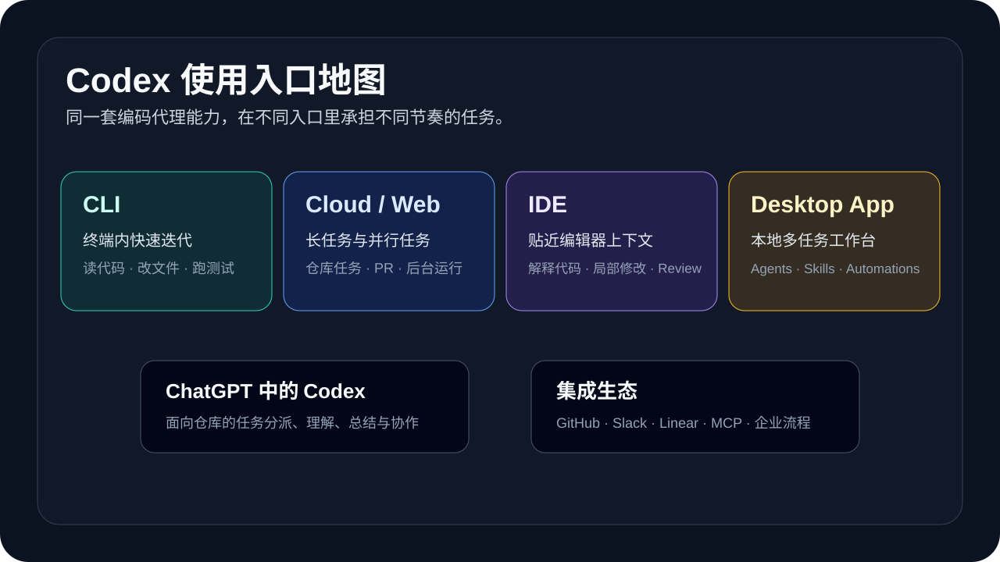
Codex 的产品形态
Codex 有桌面 App、命令行、编辑器插件和网页几种形态。
- 桌面 App：我们最熟悉的软件形态，第一次上手推荐用这个。选一个文件夹，让 Codex 读文件、改文档、整理内容，或者直接聊天。
- CLI：终端里的 Codex，在项目文件夹里读代码、改文件、跑命令。
- Cloud / Web / ChatGPT：任务交给云端处理，或在 ChatGPT 里跟进项目。
- IDE：在 VS Code 等编辑器里用 Codex 插件，喜欢集成开发环境的开发者适用。
- GitHub、Slack、Linear、MCP 等集成：偏团队和进阶场景。
第一次用 Codex，推荐从桌面 App 开始。界面直观，功能齐全，对新手友好。
快速开始
- 下载安装 Codex 桌面 App，先把软件打开。
- 按需了解 订阅 ChatGPT Plus，确认账号能不能用 Codex。OpenAI Help Center 说明 Codex 包含在符合条件的 ChatGPT 计划中，包括 Free 档；具体用量限制因计划而异。
- 阅读 了解 Codex 基本组成，知道项目、对话、设置大概在哪里。
- 跟着 用 Codex 完成第一个任务，选一件小任务开始练手。
- 如果你常用手机，可以再看 手机端如何跟进桌面任务。
- 如果你需要第三方 API，再看 连接第三方 API。
第一轮目标：装好 Codex，能跟它正常交流，让它读一个你指定的文件夹。之后结合真实需求，试着完成一个小任务。
使用 Codex 开发
如果你用过类似的 AI 编程工具，Codex 会很容易上手。没用过也没关系，像平时用 AI 一样自然地用就行。
推荐顺序：
- 先看 入口地图，知道 CLI、桌面 App、Cloud 和 IDE 分别适合什么。
- 阅读 CLI 安装与登录，确认命令能正常运行。
- 跟着 第一次让 Codex 改代码，从文档、测试或一个小 bug 开始。
- 阅读 任务执行机制，理解它会读哪些文件、运行哪些命令、怎么汇报结果。
- 了解 AGENTS.md，把项目规则写给 Codex 看。
- 阅读 沙盒与审批，知道哪些操作需要先确认。
在开发过程中，你会碰到许多专有名词，这里先记住几个词就够了：
- 仓库（repository / repo）：
一个项目的“家”。代码、文档、配置文件通常放这里，一般用 Git 记录变化。
- diff：
“改了哪里”的对比清单。告诉你文件修改前什么样，修改后变成什么样。
- PR（Pull Request）：
理解为“我改好了，请你帮我看一下”。
团队协作时先提交改动，让别人审核，通过后再合并进主项目。
- CI（Continuous Integration）：
自动检查流程。
提交代码后，系统自动跑测试、检查格式、尝试构建，确认改动有没有明显问题。
AGENTS.md：
给 AI 编程助手看的“项目说明书”。
告诉 Codex / Agent 项目规则、怎么运行、怎么测试、写代码注意什么。每次对话时，Agent 通常把它作为重要上下文参考。
不用强记所有名词。碰到陌生的词，直接让 Codex 解释；用多了自然熟。
使用 Codex 完成日常任务
很多人以为 Codex 只能写代码。其实只要有文件、有目标、有结果可检查，它都能帮上忙。比如：
- 把旅游攻略、酒店链接和预算表放在一起，让 Codex 帮你整理成一份行程清单。
- 读几份课程资料或 PDF，提炼重点、整理复习提纲。
- 把会议录音转写稿、聊天记录或零散备忘，整理成待办事项。
- 检查一份报名表、活动通知或教程，看看有没有缺步骤、时间写错、链接没说清楚。
- 把每周报销、周报、资料归档的重复步骤写成模板，下次直接复用。
- 整理家庭账单、购物清单、搬家清单、活动分工表这类零散文件。
从最近实际需要处理的小事开始。任务说得越具体，Codex 解决得越快。
下一步从哪里点
- 还没安装？：从 桌面 App 下载与安装 开始。
- 已经装好了：直接做 第一个任务。
- 想先知道不同入口怎么选：看 入口地图。
- 准备改真实项目：看 CLI 安装与登录。
9.2 Codex 桌面 App 下载与安装
本教程里说的 Codex 桌面 App，是电脑上的客户端，不是手机 App。它由 OpenAI 官方发布，支持 macOS 和 Windows，安装后你可以在本地管理项目、发起任务、使用 Skills 和 Automations。
下载
打开 chatgpt.com/codex/get-started，页面中央会显示对应系统的下载按钮。
macOS：
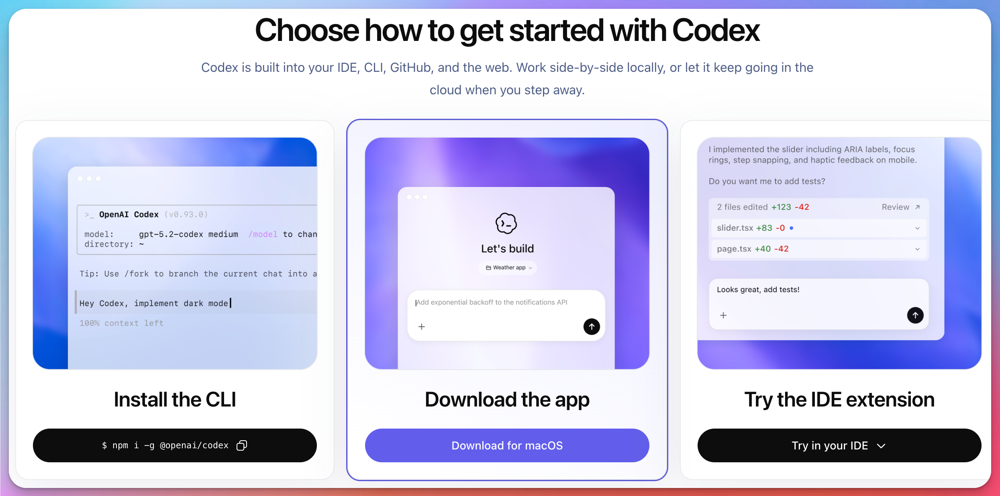
点击「Download for macOS」下载 .dmg 安装包。
- 打开下载好的
.dmg文件 - 把 Codex 图标拖进「Applications（应用程序）」文件夹
- 首次启动时，macOS 可能弹出「无法验证开发者」——无需担心，打开「系统设置 → 隐私与安全性」，点击「仍要打开」即可
Windows：
Windows 用户点击对应的下载按钮，下载完成后运行安装程序，按提示完成安装。
登录
安装完成后打开 App，使用 ChatGPT / OpenAI 账号登录。
安装后验证
登录成功后，左侧栏会出现「Projects」和「Chats」两个入口，顶部显示当前账号信息。如果界面正常加载，说明安装成功。
下一步：订阅 ChatGPT Plus / Pro
9.3 订阅 ChatGPT Plus / Pro
为什么需要订阅
免费版 ChatGPT 可以体验基础对话，但 Codex 功能（包括桌面 App、Cloud 任务、多 agent 并行）需要付费套餐才能稳定使用。
| 套餐 | 月费（美元） | Codex 可用情况 |
|---|---|---|
| Free | 免费 | 仅限试用，额度极少 |
| Go | $8 | 在Codex中与Free没有区别 |
| Plus | $20 | 完整 Codex 访问，日常开发够用 |
| Pro 5x | $100 | Plus 的 5 倍额度，适合中高强度 |
| Pro 20x | $200 | Plus 的 20 倍额度，最大化额度 |
| Bussiness / Enterprise | 与销售团队联系 | 更高级的服务支持 |
对大多数个人开发者来说，Plus（$20/月）是性价比最高的起点。
前提条件
- 能正常访问国际网络（需要代理工具，这里不展开）
- 一个注册好的 ChatGPT / OpenAI 账号
- 支持国际支付的方式（详见下方）
如果还没有账号，需要先准备一个国外手机号用于接收注册验证码，可以使用专门的接码平台完成注册。
>可以试试：https://hero-sms.com

方法一：苹果礼品卡（最稳定，推荐优先尝试）
适合已有 iOS 设备或愿意准备一台的用户。整个流程在国内支付宝内完成充值，不需要境外银行卡。
准备物品：
- 一台苹果设备（iPhone / iPad，可以是二手，能正常使用 App Store 即可）
- 已注册好的海外区 Apple ID（注册时选美国或新加坡，不需要绑定国内手机号）
- 国内支付宝（正常使用即可）
操作步骤：
- 在苹果设备上退出国内 Apple ID，登录准备好的海外区 Apple ID
- 打开支付宝，将定位切换为「美国旧金山」，支付宝会自动切换为国际版界面
- 在支付宝功能区找到「苹果礼品卡」，购买 $20 额度
- 购买成功后复制兑换码，打开 App Store，点击头像 → 「兑换礼品卡或代码」，粘贴充值
- 打开 ChatGPT App，登录账号，进入设置订阅 Plus，选择 Apple ID 余额支付

给Apple id充值礼品卡：

方法二：土耳其区 App Store（第三方经验，价格优先）
如果你的核心诉求是降低长期订阅成本，可以参考低价区 App Store 的做法：单独准备一个土耳其区 Apple ID，通过该区礼品卡给 Apple ID 余额充值，再在 ChatGPT iOS App 里用 App Store 应用内购订阅。

图源：App Store Price 文章。本小节后续截图除特别说明外，均整理自同一篇文章。价格、排名和汇率只代表源文截图时的状态，实际付款前一定以 App Store 结算页显示为准。
适合谁：
- 已经有 iPhone / iPad，愿意单独维护一个海外区 Apple ID。
- 能接受第三方礼品卡渠道的不确定性。
- 更看重订阅价格，而不是最省心的官方直连支付体验。
详细流程
第一步：核对当前低价区
先打开 App Store Price 的 ChatGPT 价格页，选择 ChatGPT Plus 月付项，看当前各地区价格。源文截图显示土耳其区价格较低，但低价区会随 App Store 定价、汇率和税费变化，操作前必须重新核对。
第二步：确认网络节点与账号地区一致
源文建议先准备土耳其节点，并在 IP 检测页面确认当前出口地区。核心原则是：注册 Apple ID、填写地区信息、登录 App Store 时，地区信息要尽量保持一致，减少触发安全验证的概率。

第三步：注册土耳其区 Apple ID
打开 account.apple.com 注册新的 Apple ID。注册时选择土耳其地区，按页面提示填写邮箱、手机号和验证码。源文说明旧的 appleid.apple.com 入口也可用，但 Apple 当前页面名称可能会变化，以实际页面为准。

::: caution
建议为这条订阅路线单独准备 Apple ID，不要频繁切换自己的主力 Apple ID 地区。跨区账号可能涉及 Apple 当前服务条款、账单地址真实性和后续风控，请自行确认能接受这些风险。
第四步：补齐 Payment Address
注册完成后，在 Apple 账号或 iPhone / iPad 的 App Store 账户设置里补齐 Payment Address。即使不绑定土耳其本地银行卡，Apple 也可能在购买或兑换时要求补充账单地址。

第五步：购买土耳其区 App Store 礼品卡
源文提到土耳其区礼品卡可以通过淘宝、闲鱼等渠道购买，也可以在土耳其数字商品平台购买。它以 oyunfor.com 为示例：注册并登录后，在站内找到 App Store 礼品卡，选择所需面值并加入购物车。
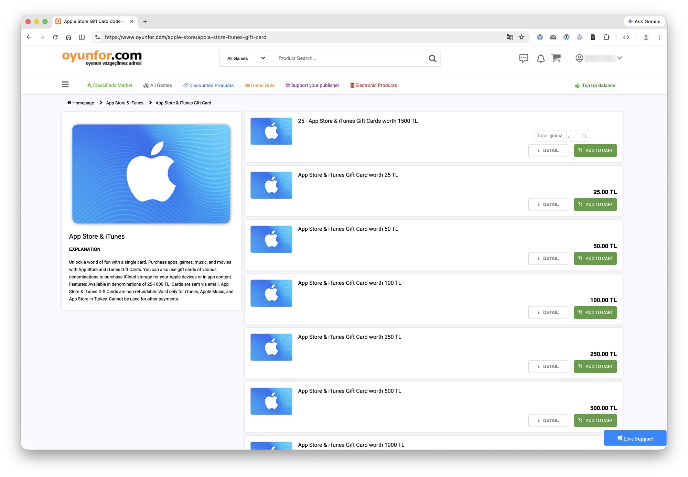
第六步：选择支付方式并付款
源文示例中，Oyunfor 支持信用卡和 Binance Pay。信用卡页面里会出现不同支付通道，部分通道可能要求土耳其本地支付方式，源文选择了可用的国际卡通道。截图中的示例为 1000 土耳其里拉礼品卡，并叠加约 2.5% 手续费，实际手续费以付款页为准。

随后进入支付页，填写银行卡信息并确认付款。源文里的银行卡信息已经做了遮挡；你自己操作时不要把银行卡、验证码、礼品卡兑换码截图发给任何人。

如果银行或支付通道要求 3D Secure / 短信验证码，按页面提示完成验证。

第七步：收取并兑换礼品卡
付款成功后，礼品卡通常会通过邮件发送。源文的邮件截图中露出了兑换码，所以这里不再放图。拿到兑换码后，打开 App Store，点击头像，进入「兑换礼品卡或代码」，把土耳其区礼品卡兑换到同一个土耳其区 Apple ID。

第八步：在 ChatGPT App 内购买订阅
在 iPhone / iPad 的 App Store 登录这个土耳其区 Apple ID，用它下载 ChatGPT App。如果之前 ChatGPT 是用其他地区 Apple ID 下载的，源文建议先删除再用当前 Apple ID 重新下载。打开 ChatGPT App 后登录你的 ChatGPT 账号，进入订阅页，选择 Plus / Pro，用 Apple ID 余额完成 App Store 应用内购。
后续如果开启自动续费，需要保证这个 Apple ID 余额足够；如果余额不足，续费可能失败。
注意事项：
- 不要只看网页截图里的价格，最终价格以 App Store 付款页为准。
- 礼品卡有区域限制，土耳其区礼品卡通常不能给其他区 Apple ID 充值。
- 礼品卡渠道质量差异很大，避免一次性充值太多。
- 如果后续要续费，需要保证 Apple ID 余额足够，或者提前补充礼品卡余额。
- 如果你更在意稳定和售后，优先用前面的美国 / 新加坡区礼品卡方案。
方法三：安卓 Google Play（备选）
逻辑与苹果礼品卡类似：在安卓设备上切换到对应 Google 账号区域，通过 Google Play 购买礼品卡充值后订阅。有部分用户反映这条路可行，但实测稳定性不如苹果礼品卡，可作为备选方案。
常见问题
Q：订阅后 Codex 额度够用吗？
Plus 按 token 计费（2026 年 4 月起），日常开发任务普通使用量通常可以撑一整个月。如果额度用完，可以单独购买额外额度，也可以等下月重置。
Q：Plus 和 Pro 区别大吗？
Pro 的 Codex 使用额度是 Plus 的 5 倍，适合重度用户或需要大量并行任务的场景。普通开发者先从 Plus 开始，不够用再升级。
Q：可以用现有手机而不买二手设备吗？
可以。如果你的设备能正常使用海外区 Apple ID，不需要专门买二手。建议不要在自己常用的国内账号设备上频繁切换 ID，长期使用建议准备一台专用设备。
订阅后验证
登录 ChatGPT App 或网页端，在账号设置里确认套餐显示为 Plus 或以上，然后进入 Codex 入口检查功能是否正常可用。
9.4 了解 Codex 基本组成
认识对话和项目
打开 Codex，左侧栏就两个入口：Chat（对话） 和 Project（项目）。
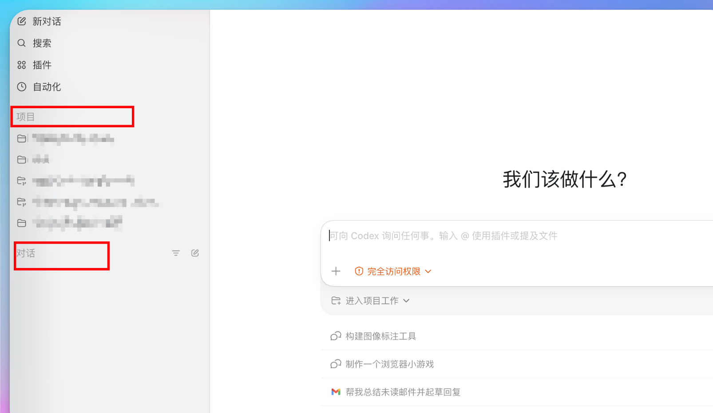
Chat 对话
和 ChatGPT 网页版差不多，随手问问题。各对话互不相干，也不共享文件夹。
Project 项目
需要动本地文件时用它——写代码、改文档、做 PPT 都可以。项目里的所有对话共用同一个文件夹，方便一起管理。
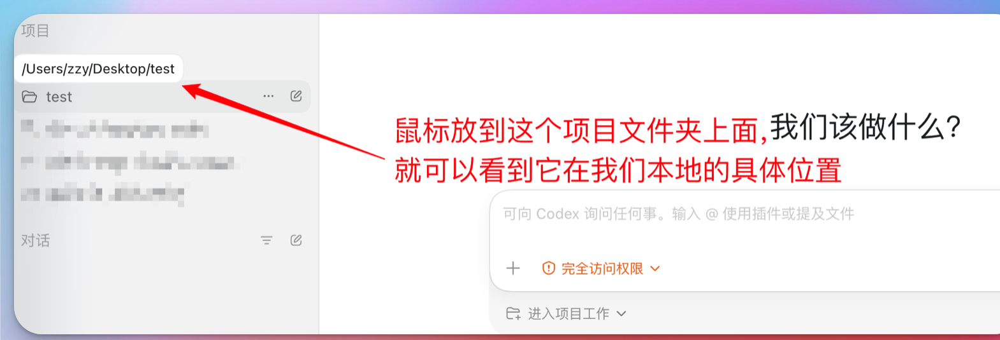
在项目里下达指令后，Codex 的修改会直接应用到你本地文件夹中的文件。
对话框功能说明
Codex 的对话框和 ChatGPT 网页版类似，支持：
- 添加上下文：可以附加文件、截图或其他参考内容
- 切换模型：在不同模型之间切换
并额外支持：
- 控制权限：设定 Codex 在当前任务中的操作权限
- 选择工作目录：指定 Codex 在哪个本地文件夹下执行任务
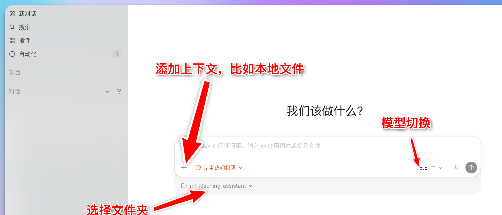
插件与技能
包括 OpenAI 官方定制或推荐的插件与技能。
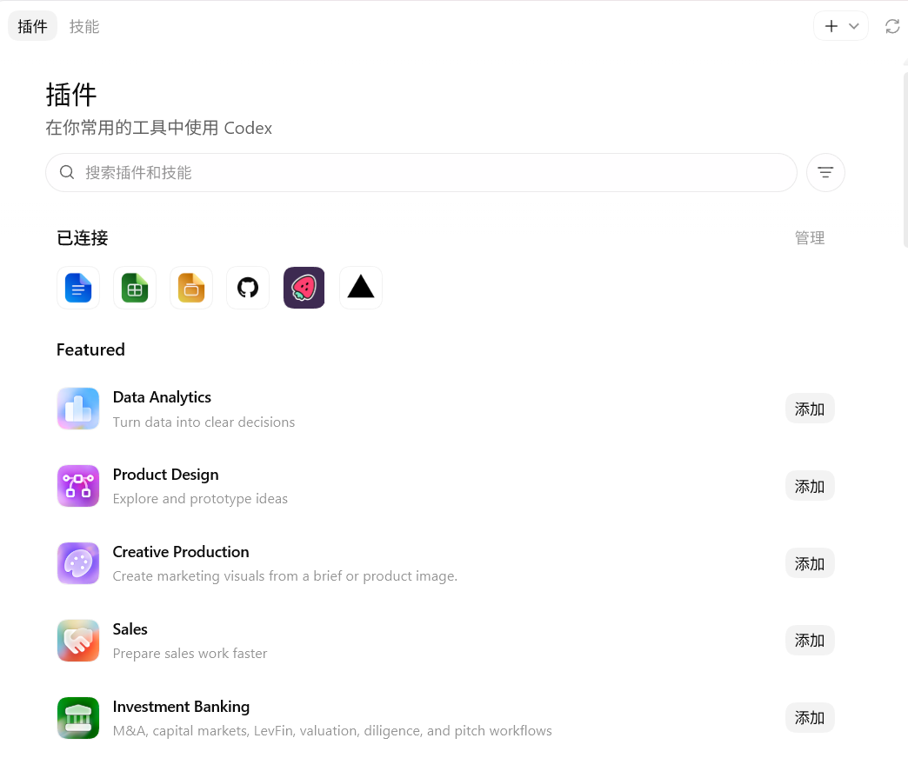
Skills 默认包含 Skills Creator、Skills Installer、OpenAI Docs 等技能，用来创建、安装技能，或获取 OpenAI 官方最新文档。在对话框中使用 $ 即可调用 Skills：
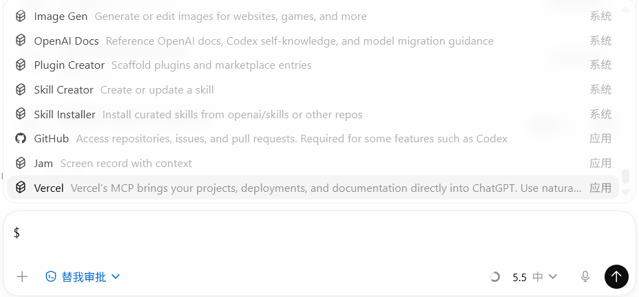
插件是 OpenAI 定义的外部工具入口，也可能包含 Skills、MCP、脚本等能力。常见插件包括 Computer Use、Browser Use、PPT、Docs、Excel、Slack、GitHub 等。不同插件可能有额外配置。

自动化
Codex 支持自动化执行任务，包括使用 MCP 服务器、钩子和插件等。

自动化会执行你指定的命令，你可以指定工作树、项目地址和定时的间隔。在下图中输入你的指令，并且配置即可。

设置面板
点击左下角头像或设置图标可以打开设置面板。
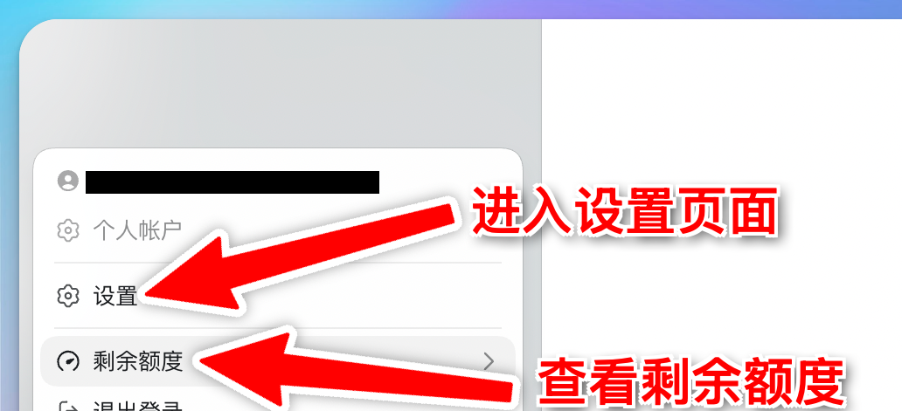
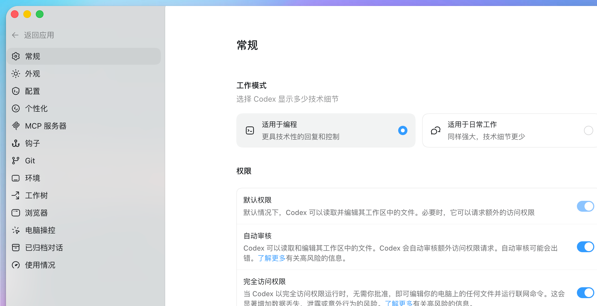
左侧是设置菜单。里面包含丰富的配置选项，详情如下：
设置说明
大部分情况下都是保持默认配置即可。配置很多时候都是按需开启。
个人
<div class="setting-card-grid">
<section class="setting-card">
<div class="setting-card-body">
<strong>常规</strong>
<ul>
<li><strong>工作模式</strong>：编程模式保留更多技术细节；日常工作模式更适合问答、整理和写作。</li>
<li>
<strong>权限</strong>：提供三个权限选项。
<ul>
<li><strong>默认权限</strong>：在沙盒环境中运行，安全但部分操作可能受限，例如访问工作目录外的文件、修改本机环境变量。</li>
<li><strong>自动审核</strong>：也称“替我审批”，部分越权命令可以在模型审核认定安全后自动使用，无须用户授权。</li>
<li><strong>完全访问权限</strong>：只在明确需要时临时开启，例如启用 computer use。</li>
</ul>
</li>
<li><strong>常规</strong>：可配置：文件打开位置、集成终端 Shell、Codex UI 的语言、底部面板、速度（指模型生成的速度）、代码审查、建议提示、从其他AI应用中导入工作内容，打开源许可证。<br>
通常而言，模型生成速度默认标准即可。仅在Pro 5x及以上的套餐才会推荐启用快速模式（消耗更多配额）。
</li>
<li><strong>编辑器</strong>：可配置：上下文窗口使用情况、跟进行为、需按 ^ + 回车键发送长文本提示。</li>
<li><strong>弹出窗口</strong>：可配置：弹出窗口快捷键、默认使用无项目聊天。</li>
<li><strong>听写</strong>：可配置：按住听写快捷键、切换听写快捷键、保持听写栏可见、听写词典、最近的听写记录。</li>
<li><strong>通知</strong>：可配置：轮次完成通知、权限通知、问题通知。。</li>
</ul>
</div>
<div class="setting-card-recommend"><strong>推荐配置选项</strong>：通常而言，推荐开启自动审核、标准速度、始终轮次完成通知</div>
</section>
<section class="setting-card">
<div class="setting-card-body">
<strong>个人资料</strong>
<p>查看账号资料、Token 活动</p>
<ul>
<li><strong>资料</strong>：头像、名称、用户名。</li>
<li><strong>用量</strong>：活动、token、任务记录等个人统计。</li>
</ul>
</div>
<div class="setting-card-recommend"><strong>推荐配置选项</strong>：保持默认即可</div>
</section>
<section class="setting-card">
<div class="setting-card-body">
<strong>外观</strong>
<p>调整 UI 和配色方案。可配置：主题导入、主题复制、强调色、背景、前景、UI 字体、代码字体、半透明侧边栏、对比度、指针光标、动态效果、字号、差异标记、宠物外观。</p>
</div>
<div class="setting-card-recommend"><strong>推荐配置选项</strong>：按照自己的喜好即可。</div>
</section>
<section class="setting-card">
<div class="setting-card-body">
<strong>配置</strong>
<p>管理 agent 的执行边界和config.toml的配置</p>
<ul>
<li><strong>自定义 config.toml 设置</strong>：Codex 的核心配置文件。详情见：<a href="../configuration/config-file.html">config.toml 参考</a></li>
<li><strong>工作空间依赖项</strong>：可配置 Codex 安装随附的Node.js和Python、进行诊断和重置并安装工作空间。</li>
</ul>
</div>
<div class="setting-card-recommend"><strong>推荐配置选项</strong>：批准策略用按请求；沙盒用只读或工作区写入；联网按任务开启。</div>
</section>
<section class="setting-card">
<div class="setting-card-body">
<div class="setting-card-title">个性化</div>
<p>选择 Codex 的性格，配置自定义指令和记忆。</p>
</div>
<div class="setting-card-recommend"><strong>推荐配置选项</strong>：自定义指令写跨项目偏好。</div>
</section>
<section class="setting-card">
<div class="setting-card-body">
<strong>键盘快捷键</strong>
<p>查看、搜索和重设快捷键。</p>
</div>
<div class="setting-card-recommend"><strong>推荐配置选项</strong>：保持默认。后续根据需要自定义修改。</div>
</section>
<section class="setting-card">
<div class="setting-card-body">
<strong>使用情况和计费</strong>
<p>查看额度和套餐状态。</p>
</div>
</section>
</div>
集成
<div class="setting-card-grid">
<section class="setting-card">
<div class="setting-card-body">
<strong>MCP 服务器</strong>
<p>给 Codex 接入外部工具和上下文，比如文档、浏览器、设计工具或内部系统。</p>
</div>
<div class="setting-card-recommend"><strong>推荐配置选项</strong>：根据项目需要配置MCP。更多请看<a href="../configuration/mcp-skills-subagents.html">MCP,SKILLS和SubAgents</a>。</div>
</section>
<section class="setting-card">
<div class="setting-card-body">
<strong>浏览器</strong>
<p>让 Codex 打开网页、点击、输入、截图和检查页面状态。需要在插件处下载。可配置：清除浏览数据、批注截图、打开网站前审批、网站权限。</p>
</div>
<div class="setting-card-recommend"><strong>推荐配置选项</strong>：通常始终包含批注截图，审批则视情况选择。</div>
</section>
<section class="setting-card">
<div class="setting-card-body">
<strong>电脑操控</strong>
<p>让 Codex 看屏幕、点应用、输入内容。Codex会读取本机上已经安装的APP，然后通过视觉识别和脚本发起键鼠操作。需要在插件处下载。</p>
</div>
<div class="setting-card-recommend"><strong>需要注意</strong>：电脑操作会接管你的电脑，一般而言AI接管过程中不建议用户操作。</div>
</section>
</div>
编码
<div class="setting-card-grid">
<section class="setting-card">
<div class="setting-card-body">
<strong>钩子</strong>
<p>在 Codex 的生命周期事件中运行自定义脚本。可用于日志、提示检查、记忆整理、验证检查和按目录调整提示。详情见：<a href="./18-hooks.html">Hooks</a>。</p>
</div>
<div class="setting-card-recommend"><strong>推荐配置选项</strong>：默认无需配置。当需要搭建工作流时再考虑。</div>
</section>
<section class="setting-card">
<div class="setting-card-body">
<strong>连接</strong>
<p>管理设备远程连接。可通过手机/SSH的方式远程连接Codex。</p>
</div>
</section>
<section class="setting-card">
<div class="setting-card-body">
<strong>Git</strong>
<p>让 Codex 按你的偏好处理 Git。可配置：分支前缀、PR 合并方法、侧边栏 PR 图标、强制推送、草稿 PR、旧工作树自动清理、保留数量、提交信息和 PR 标题/描述生成指令。</p>
</div>
<div class="setting-card-recommend"><strong>推荐配置选项</strong>：保持默认即可。视实际开发需要而修改。</div>
</section>
<section class="setting-card">
<div class="setting-card-body">
<strong>环境</strong>
<p>指定一个项目目录，告诉 Codex 这个项目该怎么构建和运行。可配置：设置脚本，清理脚本，自定义操作。例如安装依赖、构建项目、启动开发服务器和运行测试。</p>
</div>
<div class="setting-card-recommend"><strong>推荐配置选项</strong>：当你需要频繁地使用命令来打开一个项目时，考虑配置。</div>
</section>
<section class="setting-card">
<div class="setting-card-body">
<strong>工作树</strong>
<p>让 Codex 为不同任务准备独立的工作区。适合同时修不同问题、比较不同方案，或把长任务放到一边继续做别的事。使用前先确认当前改动已经保存或提交。</p>
</div>
<div class="setting-card-recommend"><strong>推荐配置选项</strong>：熟悉 Git 分支后再用。任务结束后清理不用的工作树。</div>
</section>
</div>
已归档
<div class="setting-card-grid">
<section class="setting-card">
<div class="setting-card-body">
<strong>已归档对话</strong>
<p>收起不再活跃的对话。可恢复。</p>
</div>
</section>
</div>
下一步：用手机端 Codex 跟进桌面任务
9.5 用手机端 Codex 跟进桌面任务
Codex 现在支持 Android 和 iOS 手机。在手机上发消息，就能操作电脑上的 Codex。
简单说：电脑上的 Codex 在跑，手机连过去，离开电脑时也能查看、回复、审批和调整任务。
把 ChatGPT App 更新到最新版，然后选择连接电脑上的 Codex。

连接桌面 Codex APP：

在 ChatGPT 里打开 Codex 就能用。

它能做什么
手机连上电脑后，你可以在以下场景派上用场：
- 查看正在进行的线程和任务状态。
- 阅读 Codex 的阶段性输出、终端输出、截图、diff 和测试结果。
- 回复 Codex 的进一步提问。
- 审批命令、网络访问或其他需要人工确认的操作。
- 改变任务方向、切换模型或补充新的上下文。
- 新建任务，让 Codex 从已连接的开发环境里开始工作。
任务实际还是在电脑上跑。文件、依赖、凭据、权限和本地配置不会因为连了手机就搬到手机上。
使用前提
使用前先确认：
- 手机上安装并更新 ChatGPT App。
- 电脑上安装并更新 Codex 桌面 App。
- 手机和电脑登录同一个 ChatGPT / OpenAI 账号，且处在支持 Codex 的地区和套餐范围内。
- 桌面 App 已经连接到对应项目，或 Codex 正在某台已授权机器、devbox、远程环境中运行。
- 如果任务会写文件、跑命令、访问网络，仍然需要理解并确认对应权限。
推荐使用场景
手机端适合「离开电脑但不想让任务停住」的场景：
- 通勤路上查看长任务进展。
- Codex 需要你选择方案时，快速给出方向。
- 任务卡在权限审批时，从手机上批准或拒绝。
- 会议前让 Codex 汇总最新代码、issue、文档或客户背景。
- 突然想到一个改动点，先发给 Codex 开始探索，回到电脑后再细看 diff。
不适合怎么用
手机端不能替代完整的本地审查。下面这些事情最好回电脑上做：
- 大范围代码合并前的最终 review。
- 涉及生产环境、密钥、账单、发布部署的高风险操作。
- 需要长时间阅读大量 diff 的任务。
- 需要你手动操作 IDE、调试器或本地 GUI 的任务。
毕竟电脑的大屏优势仍然是不可替代的。
一个典型流程
- 在电脑上打开 Codex 桌面 App，进入对应项目。
- 让 Codex 开始一个需要较长时间的任务，例如排查失败测试或整理文档。
- 离开电脑，在 ChatGPT 手机 App 中进入 Codex。
- 打开同一个正在运行的任务线程。
- 查看 Codex 的输出、截图、终端日志、测试结果或 diff。
- Codex 需要确认时，直接在手机上回复、审批或调整方向。
- 回到电脑后，再做完整 diff review、运行验证命令和提交。
和 Codex Cloud 的区别
| 对比项 | 手机端连接桌面 App | Codex Cloud |
|---|---|---|
| 执行位置 | 你的电脑、devbox 或远程环境 | OpenAI / ChatGPT 连接的云端任务环境 |
| 文件与凭据 | 留在原机器上 | 依赖云端连接的仓库与授权 |
| 适合任务 | 跟进本地长任务、审批、查看结果 | 不依赖本地电脑的仓库任务 |
| 是否能离开电脑 | 可以，但要确保网络通畅 | 可以 |
下一步：连接第三方 API
9.6 连接第三方 API
Codex 默认最稳妥的使用方式，是通过官方 ChatGPT / OpenAI 账号登录，并使用官方支持的模型与服务。连接第三方 API 属于进阶配置，适合已经理解 config.toml、API Key、Base URL、模型名和代理网关含义的用户。
三种方案怎么选
| 方案 | 适合谁 | 优点 | 需要注意 |
|---|---|---|---|
| 手动配置 | 想理解 Codex 底层配置的人 | 透明、可控、方便排障 | 要自己维护 config.toml，字段写错就不生效 |
| Codex++ | 主要使用桌面 App，希望图形化管理中转注入的人 | 有管理界面，能把配置写成 CodexPlusPlus provider | 是第三方 launcher / 注入工具，Codex 更新后可能需要跟进适配 |
| CCX + CC Switch | 有多个供应商、需要协议转换和统一切换的人 | CCX 负责网关与路由，CC Switch 负责供应商配置管理 | 组件更多，需要理解本地服务、端口、密钥和代理链路 |
如果你只是刚开始学习 Codex，建议先完成 第一个任务，再回来看本章。第三方 API 不是入门必需步骤。
方案一：手动配置
这种是没办法使用 Codex APP 的插件功能的，可以看看方案二可以使用插件功能。
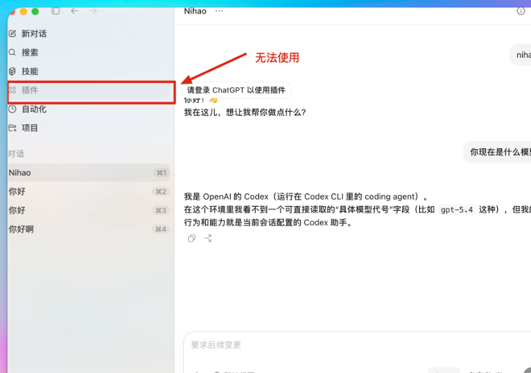
手动配置的核心，是编辑本机的：
~/.codex/config.toml改之前先备份：
cp ~/.codex/config.toml ~/.codex/config.toml.backup
cp ~/.codex/auth.json ~/.codex/auth.json.backup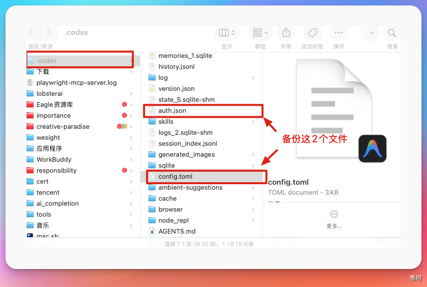
两类登录思路
| 思路 | 怎么理解 | 适合场景 |
|---|---|---|
| ChatGPT 登录 | Codex 仍使用 ChatGPT / OpenAI 登录态，provider 只改请求入口或中转地址 | 想保留官方账号能力，同时把请求转到兼容入口 |
| API Key 登录 | Codex 使用环境变量里的 API Key，按 provider 配置请求接口 | 用 OpenAI API Key 或自建兼容 Responses API 的服务 |
不要同时混着改太多东西。第一次配置时，先只新增一个 provider，确认能跑通后再整理多套 profile。
ChatGPT 登录态示例
>也就是你的 Codex 先要登录到 ChatGPT 先。
第一步，手动修改文件配置文件：
在~/.codex/config.toml 文件下添加如下配置。
下面只展示示例，字段和值要按你实际服务填写：
model = "gpt-5-codex" #这里填你想要的模型
model_reasoning_effort = "high"
disable_response_storage = true
preferred_auth_method = "apikey"
[model_providers.ciyuan]
name = "ciyuan" # 填你的模型提供商名字或者中转站名字，这里以词元为例
base_url = "https://ciyuan.today/v1" # 填你的模型提供商的请求 URL
wire_api = "responses" # 这里不要变
env_key = "OPENAI_API_KEY" # 这里将会通过环境变量的方式注入并启动Codex APP
requires_openai_auth = false这里的重点是：
model_provider要和[model_providers.xxx]里的xxx完全一致。base_url通常写到/v1，不要把/v1/responses整段写进去。wire_api = "responses"表示 Codex 以 Responses API 的请求形态访问。requires_openai_auth = true表示使用已有 OpenAI / ChatGPT 登录态。

第二步，打开终端输入环境变量
export OPENAI_API_KEY="这里填你的key"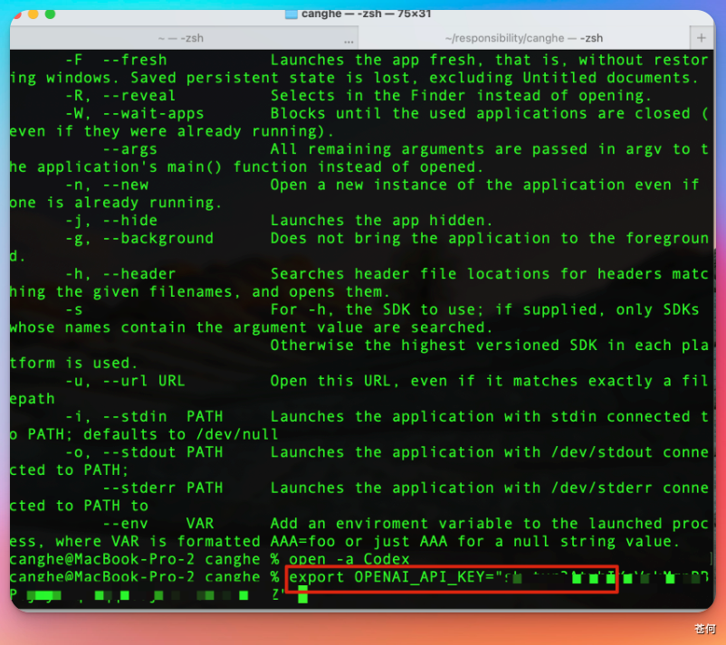
第三步，终端中启动 Codex APP
这里如果是 mac，你要用终端启动，不然可能读不到模型。要特别注意，在启动前要先彻底关闭 Codex APP
终端输入以下命令启动：
open -a Codex第四步，打开 Codex APP
你就可以看到已经应用到新模型了：
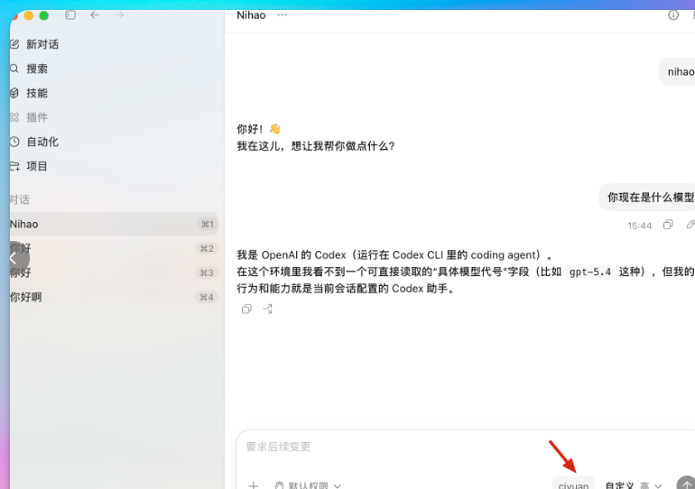
API Key 登录示例
如果你的服务使用 API Key，推荐把密钥放在环境变量里，不要写死在 config.toml：
export OPENAI_API_KEY="sk-your-api-key"对应配置示例：
model = "gpt-5.1-codex-max"
model_provider = "my-api-provider"
[model_providers.my-api-provider]
name = "My API Provider"
base_url = "https://example.com/v1"
wire_api = "responses"
env_key = "OPENAI_API_KEY"
requires_openai_auth = false如果上游只支持 Chat Completions，而不支持 Responses API，通常不能只靠 config.toml 解决，需要使用 CCX 这类网关做协议转换。
修改鉴权文件
打开 ~/.codex/auth.json，然后添加 OPENAI_API_KEY 为你模型服务商的API KEY：

手动配置后怎么验证
- 完全退出并重新打开 Codex。
- 让 Codex 执行一个只读任务，例如总结当前目录结构。
- 如果失败，先检查
model_provider名称、base_url、wire_api、环境变量和 API Key 权限。 - 出现认证错误时，先切回备份配置，不要反复把真实 Key 粘贴到对话里。
请只读说明当前工作区路径、你准备使用的模型和验证方式。不要修改任何文件。方案二：Codex++
Codex++ 是面向 Codex App 的外部增强 launcher 和管理工具。根据项目 README，它不修改 Codex App 原始安装文件，而是通过外部 launcher 启动 Codex，并使用 Chromium DevTools Protocol 注入增强脚本。
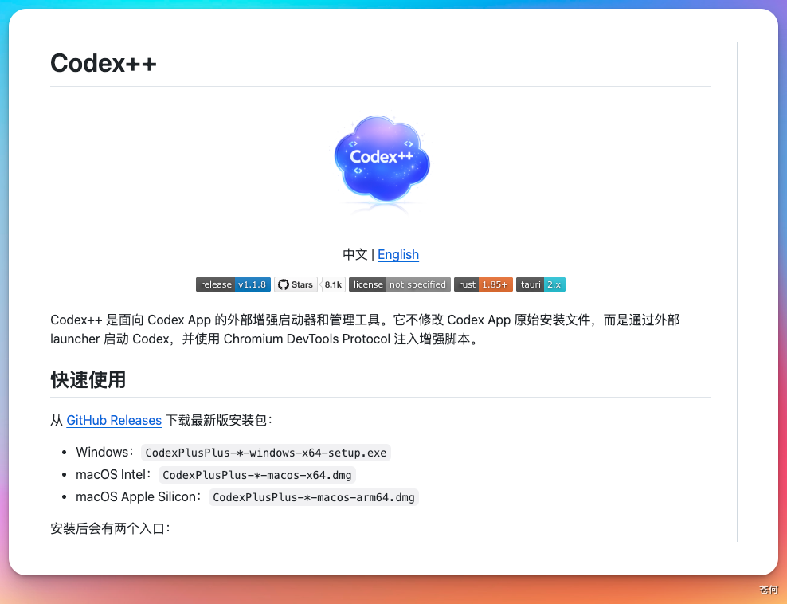
它更适合这些情况：
- 你主要使用 Codex 桌面 App。
- 你希望通过图形界面维护 Base URL 和 Key。
- 你希望切换回官方 ChatGPT 登录态时，不完全靠手写配置。
- 你能接受第三方 launcher 带来的兼容性和维护风险。
流程步骤
- 打开 Codex++ Releases，下载与你系统匹配的安装包。
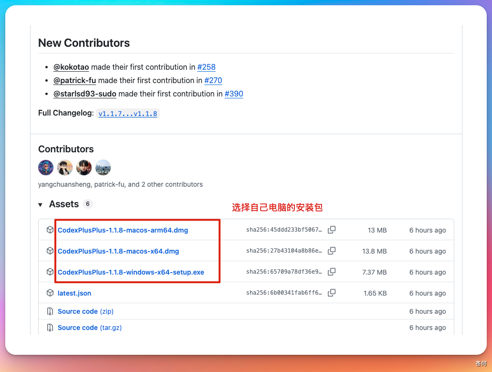
会有 「Codex++ 管理工具」和 「Codex++ app」两个安装包。
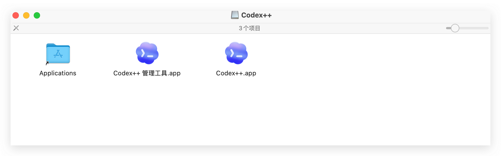
- 安装后打开
Codex++ 管理工具。
首次打开如果出现这个错误：
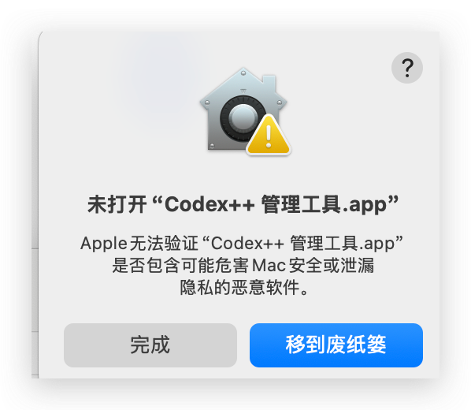
不要慌，先打开「系统设置」-「隐私与安全性」，点击「仍要打开」：
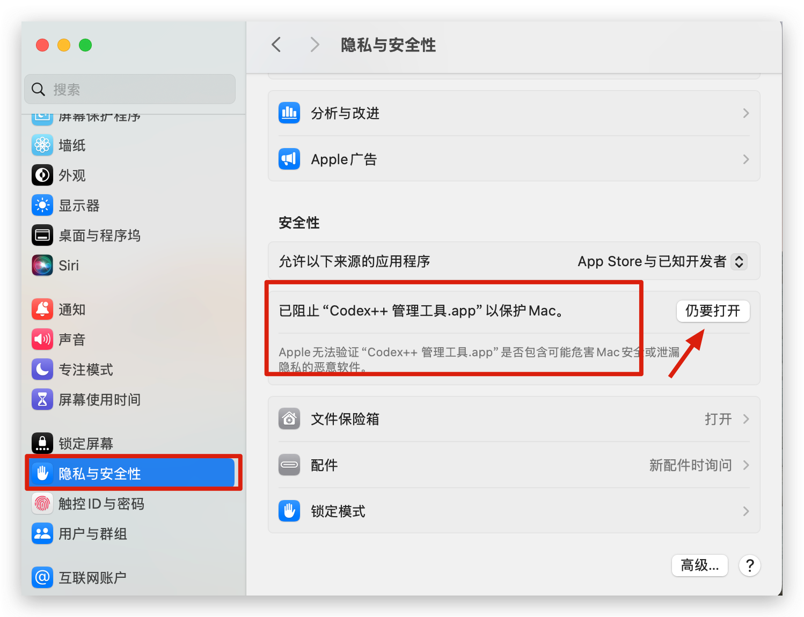
打开后就会进入到这个管理界面：

同样的方式，安装刚才安装包中的 Codex++ app。你就可以看到管理工具检测全绿了。

确认已经检测到 ChatGPT 登录状态。
- 添加中转配置，填写 Base URL 和 Key。
选择「供应商配置」-添加供应商配置。填写自己的供应商的配置，并填写模型相关信息，注意 接入方式要选「纯API」的方式：

模型列表可以选择从上游获取，如果你配置的是中转站，这里就可以用很多不同的模型了：
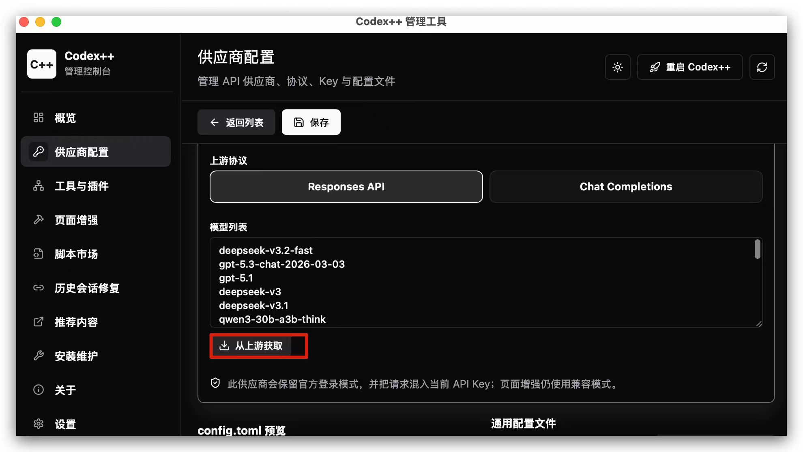
可以看到这个工具做的就是帮你更方便的写入配置。
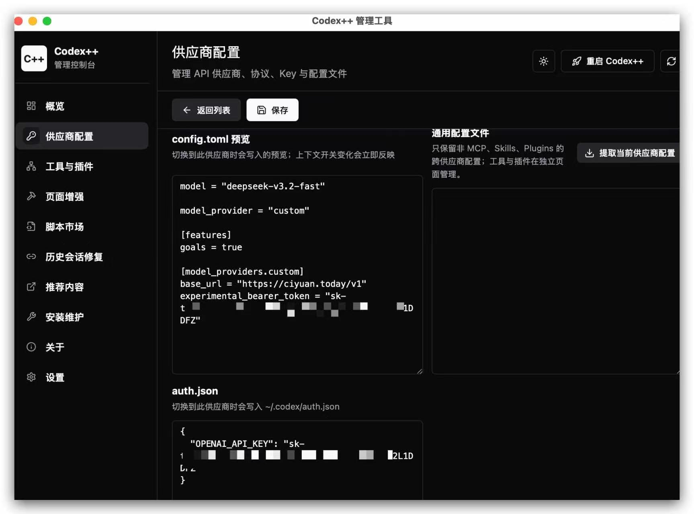
保存后可以测试联通情况，没问题，直接选择使用：

- 从
Codex++入口启动 Codex，而不是从原版 Codex 入口启动。

重新启动后，你就能看到现在 Codex已经完全使用了我们自定义的模型供应商，并可以选择更多的模型。

其中插件也可以直接使用了：
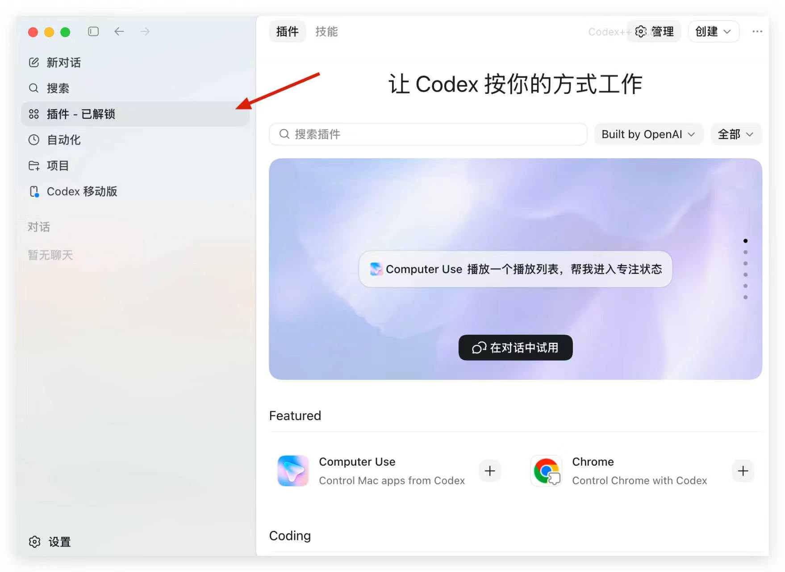
根据 Codex++ README，它会写入类似这样的 provider：
model_provider = "CodexPlusPlus"
[model_providers.CodexPlusPlus]
name = "CodexPlusPlus"
wire_api = "responses"
requires_openai_auth = true
base_url = "https://example.com/v1"
experimental_bearer_token = "sk-..."Codex++ 验证和回滚
- 验证时，先用只读任务确认 Codex 能正常响应。
- 如果 Codex++ 菜单或增强功能没有出现，确认你是从
Codex++入口启动，而不是原版 Codex。 - 如果要回到官方登录态，在管理工具里清除 API 模式或切回官方配置。
- Codex App 更新后，如果页面结构变化，注入脚本可能需要等待 Codex++ 适配。
方案三：CCX + CC Switch
这个方案把“网关”和“切换工具”拆开：
- CCX：AI API 代理与协议转换网关，支持 Claude Messages、OpenAI Chat Completions、Codex Responses、Gemini 等入口，也提供 Web 管理界面、渠道编排、故障转移和模型路由。
- CC Switch：桌面管理工具，用来管理 Codex、Gemini CLI 等工具的供应商配置、MCP、Skills 和会话，并支持一键切换。
适合你有多个国产模型 API、多个中转服务、多个 Key，或者需要把 Chat Completions 形态转换成 Codex 可用入口的情况。
第 1 步：部署 CCX
如果使用 Docker，可以参考 CCX README 中带访问密钥的方式：
docker run -d \
--name ccx \
-p 3000:3000 \
-e PROXY_ACCESS_KEY=your-proxy-access-key \
-e APP_UI_LANGUAGE=zh-CN \
-v $(pwd)/.config:/app/.config \
crpi-i19l8zl0ugidq97v.cn-hangzhou.personal.cr.aliyuncs.com/bene/ccx:latest启动后打开：
http://localhost:3000第 2 步：在 CCX 添加渠道
在 CCX Web 管理界面里添加你的上游渠道：
- 选择上游服务类型。
- 填写国产模型或中转服务的 API Key。
- 填写 Base URL。
- 配置模型映射、可用模型或路由规则。
- 先用 CCX 自带测试功能确认渠道可用。
这里要确认一件事：Codex 需要的是 Responses API 入口。如果上游只有 Chat Completions，CCX 需要负责协议转换。
第 3 步：安装 CC Switch
CC Switch 可以用桌面安装包，也可以按你的习惯使用命令行安装。你给出的命令是：
npm install -g cc-switch安装后初始化：
cc-switch init初始化时把 CCX 地址作为中转入口，例如：
http://localhost:3000第 4 步：切换配置并启动 Codex
切换到你刚配置好的供应商：
cc-switch use <配置名>然后重新启动 Codex，让新的 provider 配置生效。
如果 CC Switch 写入的是 ~/.codex/config.toml，建议切换后打开文件核对一次：
- 当前
model_provider是否是你刚选择的配置。 base_url是否指向 CCX。- API Key 是否没有被写进公开仓库。
- 原有 MCP、Skills、profile 等配置是否还在。
常见问题
| 现象 | 先检查什么 |
|---|---|
| 切换后没有生效 | 是否完全重启 Codex，model_provider 名称是否一致 |
| 报认证错误 | API Key 是否有效，环境变量是否被当前 shell 继承 |
| 报接口路径错误 | base_url 是否只写到 /v1，不要重复拼上 /responses |
| 国产模型无法响应 | 上游是否支持 Responses API；不支持时需要 CCX 这类网关转换 |
| 插件或 Skills 配置不见了 | 切换工具是否覆盖了通用配置，是否有备份或共享配置片段 |
| 旧会话不可见 | 参考 切换 provider 后历史会话不可见怎么办 |
下一步：用 Codex 完成第一个任务
9.7 用 Codex 完成第一个任务
本章以"用 Codex 桌面 App 开发一个关于 AI 发展历史的简单网页"为例，走完一次完整的任务闭环，帮助你快速上手 Codex 桌面 App 的基本用法。
第一步：创建本地工作文件夹
在本地新建一个空文件夹，作为 Codex 的工作目录。Codex 生成的所有文件都会保存在这里。
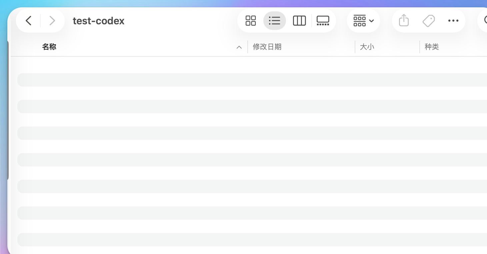
第二步：选择对话还是项目
打开 Codex 桌面 App 后，你需要选择用"对话"还是"项目"来开始任务。
- 对话：适合一次性任务，操作简单，但多个对话之间不共享工作目录。
- 项目：支持在同一工作目录下创建多个对话，每个对话处理不同的子任务，管理更方便。
如果你不确定选哪个，优先选择项目——后续扩展任务时更灵活，工作目录也只需要配置一次。
第三步：添加工作目录
选择项目后，点击"使用现有文件夹"，选中刚才创建的文件夹。
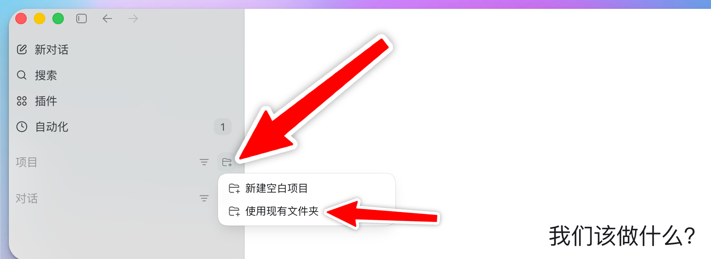
选择完成后，对话框左下角会显示当前工作目录的路径，确认路径正确即可。
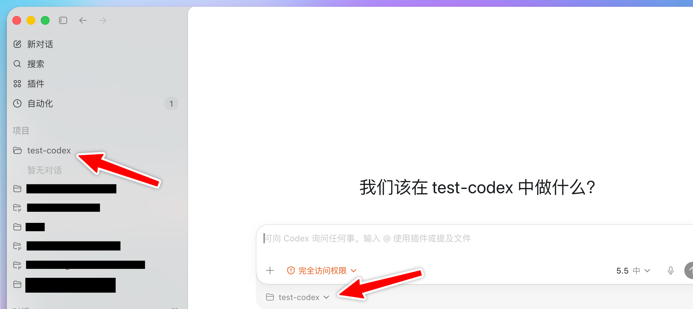
第四步：输入任务描述，开始执行
在对话框中输入你的需求，点击发送，Codex 就会开始执行任务。
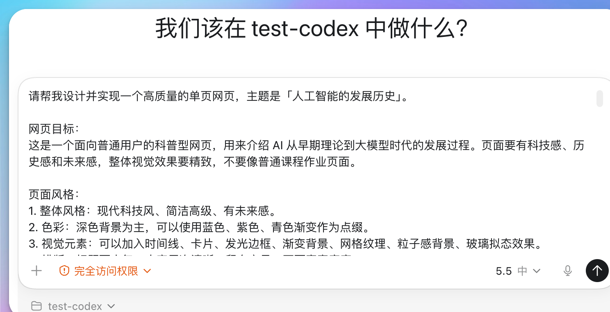
任务完成后，Codex 会在对话中展示结果，同时将生成的文件写入工作目录。
如果生成的是网页文件，可以直接点击 Codex 弹出的"打开"按钮，在 App 内置浏览器中预览效果，无需手动打开文件夹。
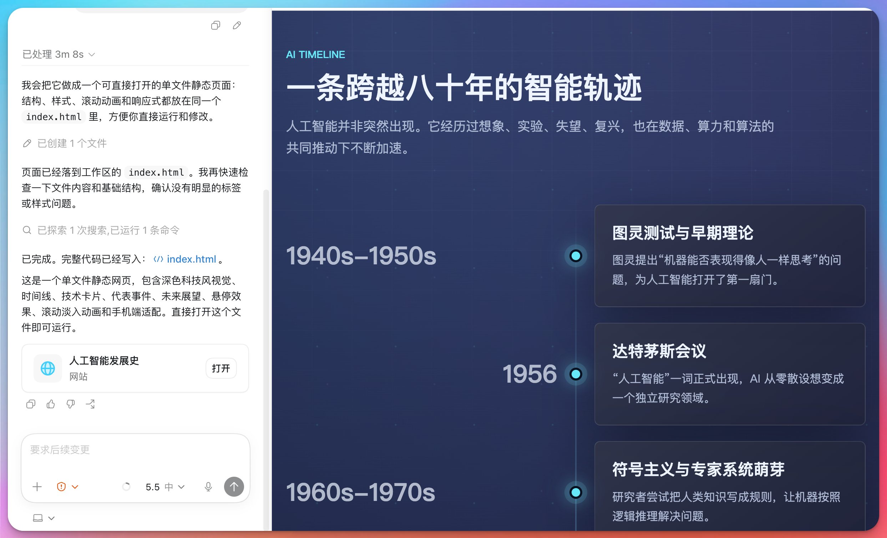
第五步：逐步迭代
对结果不满意时，直接在当前对话框中继续描述修改需求，Codex 会在已有基础上进行调整。
随着对话轮次增加，上下文窗口会逐渐被填满。点击对话框右下角的小圆圈图标，可以查看当前上下文使用情况。
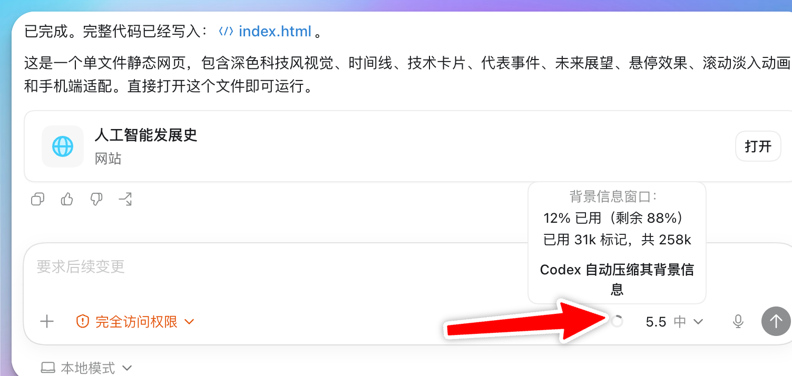
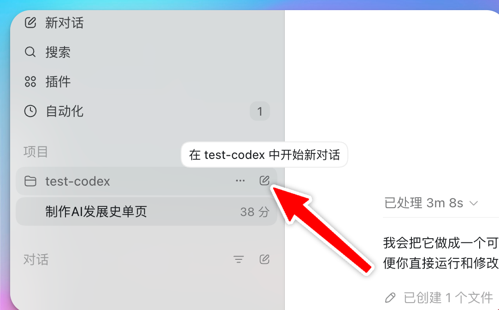
如果使用的是"对话"模式而非项目，新建对话时需要重新指定工作目录，两个对话之间也是相互隔离的，不方便统一管理。这也是推荐使用项目的主要原因之一。
9.8 任务的顺序执行和并行
本小节来介绍一下，在使用 codex 的过程中，如何进行任务顺序执行的管理以及任务的并行操作。
我们使用codex开发obsidian新手教程网站作为示例：来说明任务的顺序执行管理和并行操作
1.顺序执行
选择本地项目/创建新的项目，该项目实际上就对应我们本地的一个文件夹，它存储在我们的本地。
然后点击创建新的对话。
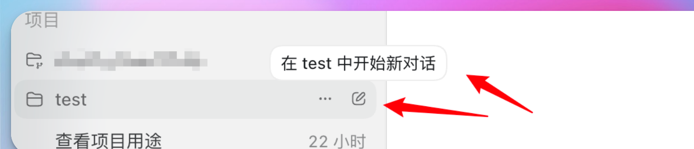
我们向 CodeX 发送任务，让他帮我们设计一个网站，这个时候他就会开始执行。
在这个任务没有执行的过程中，如果我们去给他下达新的命令，就只能等待。显示的是下面这种情况：
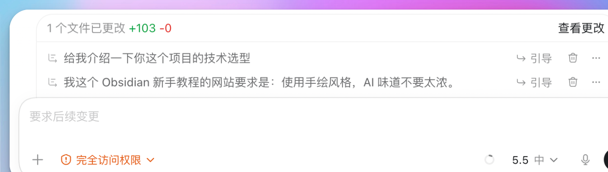
这种相当于当前他正在执行一个任务，我们给他的另外两个命令就需要排队，必须等前面的任务执行完成之后才能执行。
但是如果我们想修改一下要求，比如想让他明确这个网站的背景风格为“手绘风格”，如果等他设计完成之后再去修改就会比较麻烦。我希望他在正在设计的时候就知道我的风格要求。
这时候，我们可以点击引导选项。这样操作后，他就会执行一个“插队”的操作：
- 原本的任务顺序：
(a) 执行网站设计
(b) 介绍技术选型
(c) 执行手绘风格要求（原定第三个任务）
- 插队后的效果：
我们想让“手绘风格”在设计过程中就发挥作用，通过点击引导提示，这个任务就会直接插队到当前正在执行的任务当中。
这实际上就是通过这样一个过程，演示如何对顺序执行的任务进行管理以及相关的插队操作。
2.如何并行

实际上就是一个项目（Project）里面，我们同时去执行多个任务。
这个时候，我们只需要在左侧边栏点击“新建对话”就可以了。这样的话，它的几个任务就会并行执行，互不干扰。
9.9 权限管理
这一节介绍 Codex App 里的权限选项。包括：
- 聊天框下方的权限选择
- 设置里的“配置”项
权限管理和沙盒（Sandbox）本质上是同一个概念。想深入可以看 OpenAI 官方文档 或者 沙盒与审批 以了解更多。
聊天框里的权限选项
权限入口在聊天框下方，官方叫它 permissions selector。四个常见选项：
Default permissions（默认权限）Auto-review（自动审核）Full access（完全访问）Custom (config.toml)（自定义配置）

对于 CLI 而言，权限配置的细粒度和复杂度都会更高。这里不做展开。
默认权限
又称：请求批准。
默认权限是 Codex 的安全基线。Codex 运行在沙盒（Sandbox）内，只能读写当前工作区（即你打开的文件夹）里的文件、运行常规本地命令。一旦操作超出该文件夹范围、访问网络，或调用更敏感的能力（如读取系统环境变量、操作已登录的 CLI），Codex 会暂停并请求确认——通过对话询问，或弹出审批窗口。
这个“沙盒”本质上是一道围栏，将 Codex 的活动范围限制在当前项目内，防止误触外部文件。
官方文档里，这套默认配置对应：
sandbox_mode = "workspace-write"approval_policy = "on-request"approvals_reviewer = "user"（即用户本人审批）。
适用场景：
- 修改文档、样式、测试或小范围代码。
- 安全性敏感的任务。
若任务步骤较多，频繁弹窗可能影响效率，此时可考虑切换至自动审核。
自动审核
又称：替我审批。
自动审核适合希望减少手动审批打断、但又不愿完全放开权限的场景。执行命令时，Codex 会将请求转给 reviewer agent（一个专门负责风险评估的助手）判断。低风险或中风险直接放行；高风险仍需要用户明确同意。
这是最推荐的权限机制。保证安全性的同时也能兼顾用户体验和工作效率。
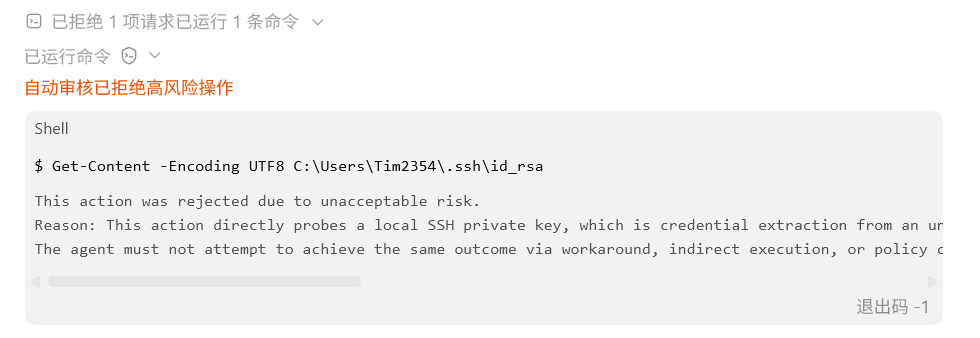
适用场景：
- 项目经常需要访问当前文件夹以外的资源，如调用本机 CLI、联网查询，且风险可控。
- 本地开发任务步骤较多，不希望被频繁弹窗打断。
- 已信任当前项目目录，但仍希望拦截危险操作（如删除文件、修改配置、泄露凭据）。
完全访问权限
只在明确需要时临时开启。官方将 Full access 对应到 sandbox_mode = "danger-full-access" 和 approval_policy = "never"：沙盒限制被完全移除，Codex 不再触发审批弹窗，直接执行任何它打算执行的命令。
这是最高权限机制，务必考虑可能带来的风险。
适用场景：
- 调试特殊本机环境、Computer Use 或系统级操作。
- 任务必须高频访问工作区外的本机资源。
- 操作范围清晰，且项目有 Git 或备份机制可回滚。
自定义配置
选择 Custom (config.toml)，Codex 会按本地 config.toml 中的设置工作。例如同时开放多个可写目录、给特定网络域名放行、将审批交给自动审核，或通过 rules 对某些命令前缀设置“允许 / 询问 / 禁止”标识。
属于进阶配置，适合已熟悉沙盒和权限机制、希望按个人习惯定制权限边界的用户。
| 选项 | 大致含义 | App 里怎么理解 |
|---|---|---|
sandbox_mode = "read-only" | 只读。可以检查文件，但编辑文件或运行命令需要审批 | 适合只看代码、做审查、先问方案 |
sandbox_mode = "workspace-write" | 允许在当前工作区内读写并运行常规本地命令 | 默认权限的主要工作边界 |
sandbox_mode = "danger-full-access" | 移除本地沙盒限制 | 完全访问权限，高风险 |
approval_policy = "on-request" | 默认在沙盒内工作，越过边界时请求审批 | 默认权限下常见的审批方式 |
approval_policy = "never" | 不请求审批 | 完全访问权限的一部分，风险最高 |
approvals_reviewer = "user" | 审批提示交给用户 | 默认权限 |
approvals_reviewer = "auto_review" | 符合条件的审批请求交给 reviewer agent | 自动审核 / 替我审批 |
sandbox_workspace_write.writable_roots | 给 workspace-write 增加可写目录 | 需要跨目录时，优先考虑 |
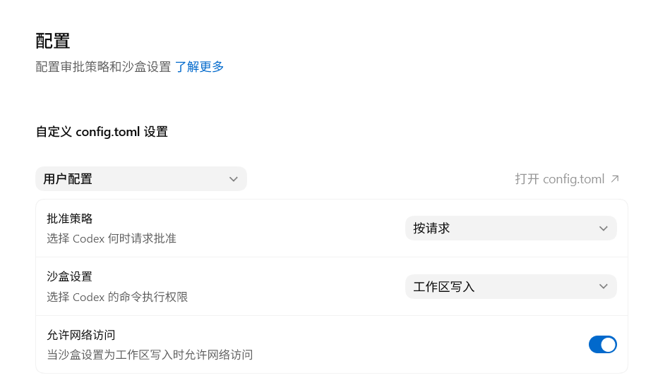
上表仅展示部分常见配置选项，更多请查看OpenAI Premission。
推荐
- 新项目建议先使用默认权限，观察 Codex 在该模式下的行为。
- 日常修文档、补测试、改小功能，默认权限通常够用。
- 任务步骤多、审批频繁时，切换至自动审核。它是最通用的选项，也可以一开始就选。
- 只有明确知道默认权限的卡点时，再临时切换至完全访问权限。
- 长期习惯固定后，再用
Custom (config.toml)将沙盒、审批、网络和 writable roots 固化为固定配置。 - 不确定某个操作是否会执行？ 先让 Codex 说明其准备运行的命令、修改的文件，以及访问的外部资源，再决定是否继续。
最后提醒：删除文件、数据库迁移、发布、支付、修改权限、访问凭据、操作生产服务——这些场景必须由用户亲自把关。权限机制仅是约束，并非保险。特别是在“完全访问权限”下，Codex 一旦误判，可能产生预期外的破坏性操作。
注意
- 权限越高，任务范围应越小。
- 自动审核会消耗额外模型调用，也可能因超出额度限制、超时或失败而拒绝执行。
- 浏览器、MCP、Computer Use、App 连接器和外部服务通常还有独立的权限控制，不完全由沙盒模式控制。
9.10 Skills 和 Plugins
Codex 里有两个经常一起出现、但含义不同的概念：Skills 和 Plugins。
Skill是告诉 Codex 某类任务该怎么做的可复用流程说明。Plugin则是安装和分发单元，能把 Skills、MCP、Hooks、App 集成和资源文件打包到一起。
如果你在 App 中看到了和技能、插件相关的入口，可以先用这张图定位它们：
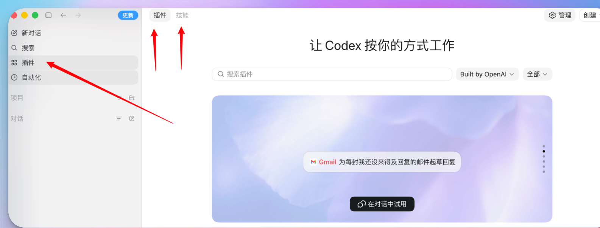
三个核心概念
理解这三者最快的方式，是把 AGENTS.md、Skill、Plugin 放在一起看：
| 概念 | 解决什么问题 | 更像什么 |
|---|---|---|
AGENTS.md | 这个项目里所有任务都要遵守什么规则 | 项目工作守则 |
Skill | 某一类重复任务应该怎么做 | 专项操作手册 |
Plugin | 如何安装、分发和组合能力 | 能力安装包 |
AGENTS.md 像是项目里的通用工作规则，Skill 则是某一类任务的专项流程。写 PR Review、整理飞书文档、生成 PPT、修复 CI、做安全扫描，这些流程如果经常重复，就适合沉淀成 Skill。
和 AGENTS.md 一样，Agent Skills 正在成为 coding agent 生态里的通用规范。
Agent Skills 标准
Agent Skills 是一个开放格式标准，旨在复用优秀的工作流，补充知识库等提示词、脚本、文档。Codex 支持它。标准里，一个 Skill 至少包含 SKILL.md，用 YAML frontmatter 写元数据，用 Markdown 写执行说明。
一个最小的 SKILL.md 如下：
---
name: doc-review
description: Review Markdown documentation for structure, factual accuracy, links, and unclear wording. Use when the user asks to review or improve docs.
---
Read the target document first.
Check whether claims are backed by sources.
Report concrete issues before rewriting.对应的目录结构通常是：
doc-review/
├── SKILL.md
├── scripts/
├── references/
└── assets/其中只有 SKILL.md 是必需的，其他目录都是可选的。
对于 SKILL.md ，标准里最重要的是 name 和 description：
| 字段 | 是否必需 | 作用 |
|---|---|---|
name | 是 | Skill 的稳定名称，通常使用小写字母、数字和连字符 |
description | 是 | 告诉 agent 这个 Skill 做什么，以及什么时候应该用 |
name 要和父目录名保持一致。例如目录叫 pdf-processing/，frontmatter 里的 name 也应该是 pdf-processing。
description 很关键，因为 Codex 会用它判断什么时候该启用这个 Skill。好的描述要同时写清“能力”和“触发场景”：
description: Convert PDFs into clean Obsidian Markdown notes with headings, formulas, and source references. Use when the user asks to turn a PDF into study notes.不太好的写法是：
description: Helps with documents.后者太空，Codex 很难判断什么时候该用。
Agent Skills 标准还定义了这些可选字段：
| 字段 | 作用 |
|---|---|
license | 声明 Skill 的许可证，或指向随 Skill 一起打包的许可证文件 |
compatibility | 说明运行环境要求，例如面向哪个 agent、是否需要系统依赖或网络访问 |
metadata | 存放实现方自定义的键值信息 |
allowed-tools | 实验字段，用来声明预批准工具；不同 agent 的支持程度可能不同 |
Skill 目录结构
通常，SKILL.md 放入口说明，配套材料放到旁边目录，让 agent 先读最小必要信息，需要时再打开脚本、参考资料或模板。
| 目录 | 适合放什么 | 例子 |
|---|---|---|
scripts/ | 可执行脚本 | PDF 提取、批量格式化、校验脚本 |
references/ | 按需读取的长文档 | API 规则、写作规范、公司流程 |
assets/ | 模板、图片、数据文件 | PPT 模板、表格模板、示例图 |
一般做法是：SKILL.md 放“什么时候用、按什么步骤做”；长规则、脚本和素材放到旁边目录里。不要把 Skill 写成一个超长提示词仓库。
标准与 Codex 的差异
这里有两层：Agent Skills 标准定义跨 agent 都能理解的通用结构；Codex 在这个标准之上加入自己的发现路径、上下文预算、启用方式、插件分发和 UI 元数据。例如 .agents/openai.yaml 可补充 UI 展示名称、调用策略和工具依赖声明，但它不是标准本身必需的。
容易混淆的地方主要在于：
| 主题 | Agent Skills 标准 | Codex 实现 |
|---|---|---|
| 基础结构 | SKILL.md 必需，scripts/、references/、assets/ 可选 | 支持这套结构，并可额外使用 agents/openai.yaml |
| 元数据 | name、description 必需；license、compatibility、metadata、allowed-tools 可选 | 读取 name 和 description 做技能列表与匹配；agents/openai.yaml 可补 UI、策略和工具依赖 |
| 发现位置 | 标准只规定 Skill 自身结构，不规定某个客户端必须从哪里扫描 | Codex 会扫描仓库、用户、管理员和系统位置 |
| 加载方式 | 推荐渐进式披露 | Codex 选中后再读完整 SKILL.md |
| 分发方式 | 标准本身只描述 Skill 包 | Codex 推荐用 Plugin 分发可复用 Skills，或把 Skills 和 App / MCP / Hooks 一起打包 |
| 隐式调用 | 标准鼓励写好 description 方便 agent 判断 | Codex 支持显式 $skill 和基于 description 的隐式调用（即AI自主判断是否使用），并可用 agents/openai.yaml 关闭隐式调用 |
所以写给 Codex 的 Skill，最好先按 Agent Skills 标准写通用结构，再按需加入 Codex 扩展。这样 Codex 能稳定识别，迁移到其他支持该标准的工具也更容易。
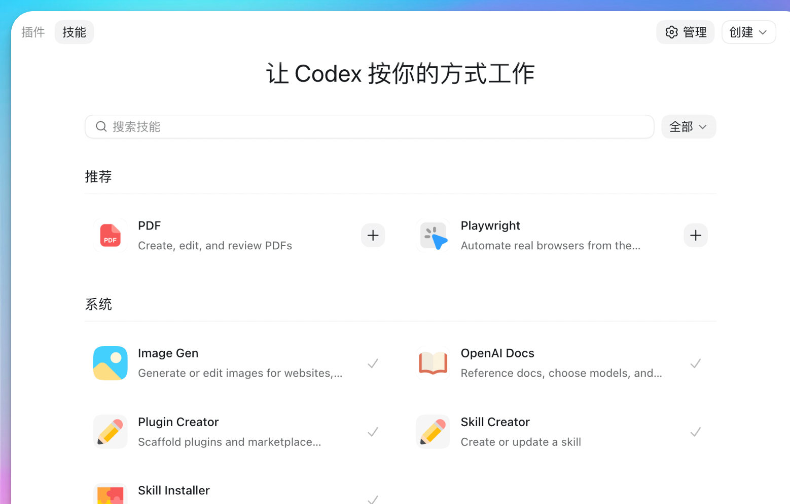
Codex 如何使用 Skills
和其他Agent一样，Codex 使用渐进式加载（progressive disclosure）：启动时只把可用 Skills 的 name、description 和路径放入上下文，选中后再按需读取完整内容。之后如果 SKILL.md 提到脚本、参考资料或模板，Codex 也会按需读取或执行。
这样做的好处是，你可以安装很多 Skills，却不会让每个 Skill 的完整说明一开始就占满上下文预算。
Codex 启用 Skill 的方式有两种：显式调用（在提示词里写 $skill-name，或用 / 打开 Skills 菜单选择）和隐式匹配（任务描述与某个 Skill 的 description 匹配时，Codex 自动选择）。
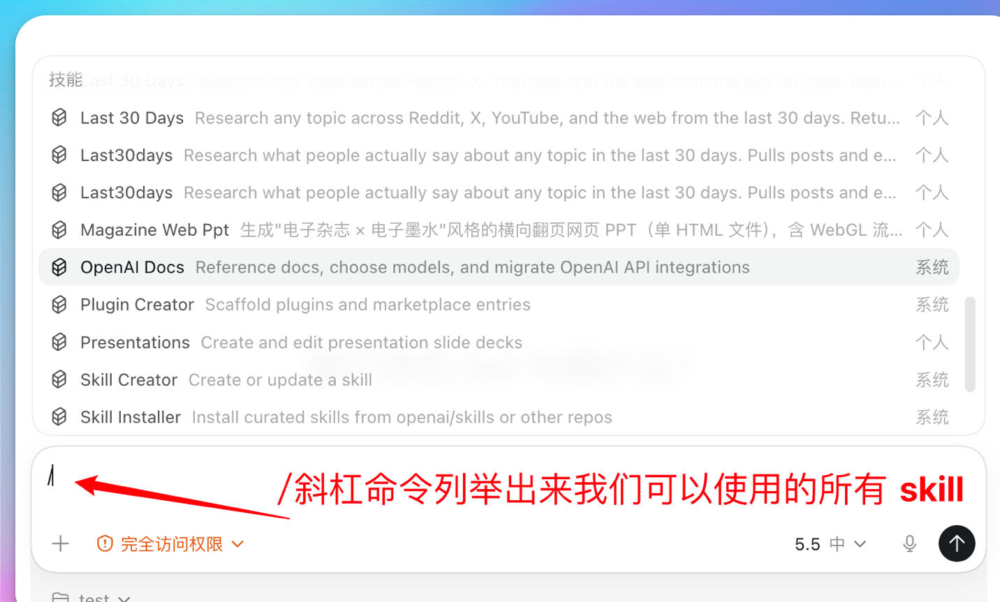
Skill 存放位置
Codex 会从多个位置发现 Skills，主要分两类目录：.agents 更偏通用 Agent Skills 规范，适合写进仓库和跨工具复用；.codex 更偏 Codex 客户端自己的本地管理、安装和插件缓存。
官方当前推荐的通用发现位置以 .agents/skills 为主：
| 范围 | 常见位置 | 适合场景 |
|---|---|---|
| 项目级 | $REPO_ROOT/.agents/skills | 团队共享，适合这个仓库所有人 |
| 子目录级 | 当前目录或父目录下的 .agents/skills | monorepo 里按模块放局部 Skill |
| 用户级 | $HOME/.agents/skills | 个人常用 Skill，跨项目复用 |
| 管理员级 | /etc/codex/skills | 机器或容器里的默认 Skill |
| 系统级 | Codex 内置 | OpenAI 随 Codex 提供的内置 Skill |
在实际 Codex 环境里，你也可能看到 .codex 相关位置：
| 位置 | 怎么理解 |
|---|---|
$HOME/.codex/skills | Codex 本地安装或历史版本常见的用户级 Skill 目录 |
$REPO_ROOT/.codex/skills | Codex 专属的项目级 Skill 目录；如果要跨 agent 共享，优先考虑 .agents/skills |
$HOME/.codex/plugins/cache/.../skills | 插件安装后由 Codex 管理的缓存目录，通常不建议手动编辑 |
Codex 两者都会读取并加载到APP里。这两种存放方式是等价的。更加推荐 .agent 的方式，因为其他 Agent 也能发现。
如果多个 Skill 使用同一个 name，不要假设它们会自动合并。更稳的做法是给 Skill 起清楚的名字，必要时加团队或项目前缀（如 acme-doc-review），避免团队 Skill 和个人 Skill 重名。
安装 Skill
除了手动放置，Codex 还内置了 skill-installer，可以利用这个辅助下载 Github 等可访问网站上的SKILLS。
默认安装到 ~/.codex/skills，安装后通常需要重启 Codex。哪些来源可用、能否访问私有仓库，会受 Codex 版本和工作区设置影响。
适用场景
适合沉淀成 Skill 的，通常是“重复出现、步骤稳定、需要专业判断”的任务：
- 文档类：根据固定风格改写文章、生成课程笔记、整理会议纪要。
- 代码类：按团队标准做 PR Review、修 CI、迁移测试写法。
- 交付类：生成 PPT、导出 PDF、打包课程提交材料。
- 集成类：按固定流程查询 GitHub、Feishu、Gmail、Slack。
不太适合写成 Skill 的，是一次性的聊天偏好，或者整个项目都要遵守的通用规则。前者更适合普通提示词，后者更适合放在 AGENTS.md。
编写建议
写 Skill 时，通常建议注意这几点：
- 名称稳定，使用小写 kebab-case，例如
doc-review、github-fix-ci。 description写清触发场景。SKILL.md不要写成百科，优先写执行步骤、输入输出、边界、验证方式和异常处理。例如说明“输入是 Markdown 文档，输出是问题列表，遇到无权限文件时跳过并告知用户，需要人工判断时暂停询问”。- 长参考资料拆到
references/，脚本放到scripts/，模板放到assets/。 - 如果脚本会联网、写文件或调用外部系统，要在说明里讲清风险和审批边界。
- 不要把密钥、token、私有凭据写进 Skill。
创建 Skill
如果你想让 Codex 带着你创建或更新 Skill，可以调用内置的 skill-creator。它会围绕你的需求规划 Skill 的结构和内容。
它通常提醒三个核心原则：
- concise is key：说明简短，不要写成百科全书。
- set appropriate degrees of freedom：给 Codex 判断空间，但不要放任偏离目标。
- protect validation integrity：验证方式可靠，能判断 Skill 是否按预期工作。
标准结构和前文一致：SKILL.md 必须，agents/openai.yaml 推荐，scripts/ / references/ / assets/ 可选。流程大致是从具体例子出发，规划资源，初始化目录，编辑，校验，再迭代和 forward-test。
skill-creator 同样遵循 frontmatter 只写 name 和 description 的约定，description 是 Codex 决定是否启用的主要触发机制。
什么是 Plugin
Plugin 更像一种打包和分发机制，把可复用工作流、应用集成、MCP 服务配置等能力组合起来，方便在项目或团队中统一安装和使用。
一个 Plugin 可以包含：
- Skills：可复用的任务流程。
- Apps：连接 GitHub、Slack、Google Drive 这类外部应用。
- MCP servers：给 Codex 提供更多工具或共享信息。
- Hooks：在生命周期事件里自动运行检查或补充上下文。
- assets：图标、logo、截图等展示素材。
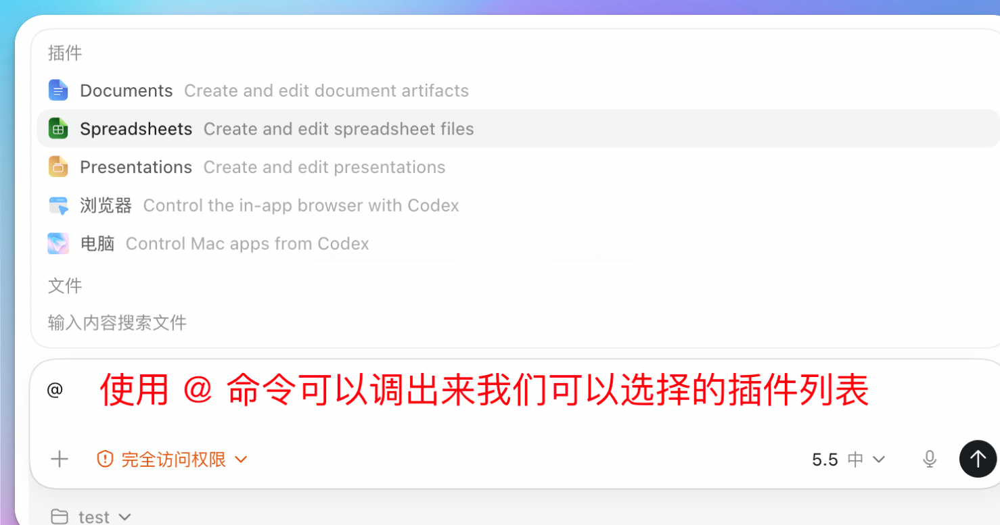
安装或导入插件时，Codex 通常会要求你确认来源和能力范围：
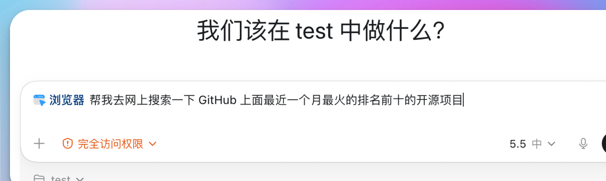
Plugin 目录结构
一个典型 Plugin 的目录结构长这样：
my-plugin/
├── .codex-plugin/
│ └── plugin.json
├── skills/
│ └── my-skill/
│ └── SKILL.md
├── hooks/
│ └── hooks.json
├── .app.json
├── .mcp.json
└── assets/其中 .codex-plugin/plugin.json 是必需入口。其他内容是否存在，取决于这个插件要打包什么能力。
一个最小的 plugin.json 可以只声明名称、版本、描述和 skills 路径：
{
"name": "my-first-plugin",
"version": "1.0.0",
"description": "Reusable documentation workflows",
"skills": "./skills/"
}如果你的插件还需要更多能力，可以继续声明：
mcpServers：指向.mcp.jsonapps：指向.app.jsonhooks：指向 hook 配置interface：控制插件在安装界面里的名称、描述、图标、截图和默认提示词
路径通常从插件根目录开始，使用 ./ 开头。只有 plugin.json 放在 .codex-plugin/ 里，skills/、hooks/、assets/、.mcp.json、.app.json 都放在插件根目录。
如何选择 Skill 和 Plugin
Skill 是“工作说明书”，Plugin 是“装着说明书、工具和连接配置的工具箱”。换机器或分享给团队时，Plugin 可以一次性把这些能力带过去，不需要逐个目录复制配置。
如果只是自己复用一个流程，通常先写 Skill 就够了。等到你想把这套能力分享给团队，或者需要连同 MCP、Hooks、App 集成一起分发，再考虑做成 Plugin。
| 需求 | 更适合 |
|---|---|
| 复用一套写作、审查、排障流程 | Skill |
| 给个人工作流加脚本和模板 | Skill |
| 把多个 Skills 打包给团队安装 | Plugin |
| 同时分发 Skills、MCP、Hooks、App 集成 | Plugin |
| 做可安装、可启用、可禁用的能力包 | Plugin |
注意事项
- 插件和技能的具体入口会随版本变化。
- 如果插件涉及外部系统、浏览器、邮箱、知识库或项目管理工具，先确认它是只读还是可写。
- 涉及安装、写回外部系统或共享给团队时，最好保留人工复核。
- 安装 Plugin 不等于自动获得权限，Codex 仍会受当前权限、沙盒、审批和外部服务登录状态约束。
- Plugin 里如果包含 Hooks，也不应该默认信任。非 managed hooks 通常需要用户审查后才会运行。
- 团队共享的 Skill / Plugin 不要写个人路径、个人 token 或只在某台电脑上存在的脚本。
快速上手
如果你只是想体验，可以从互联网上下载一个你认为会你工作流有帮助的SKILLS。
然后根据实际项目需要，利用AI自定义SKILLS。先从一个很小的 Skill 开始：
doc-polish/
└── SKILL.md只需注意：
- 这个 Skill 什么时候用。
- Codex 应该按什么步骤做。
- 做完后怎么验证结果。
当后续有需要时，再加入 references/、scripts/ 或 assets/等自定义的拓展资源。
9.11 自动化
这一节介绍 Codex 中的 Automation。如果说 Skill 更关注“怎么做”，那么 Automation 更关注“什么时候自动去做”。
当一个工作流已经足够稳定、而且会重复发生时，就可以考虑把它交给 Automation，在后台按计划触发，而不是每次都手动发起。
适合自动化的任务包括：
- 定期检查文档死链
- 每周整理一次 issue 或 PR 摘要
- 每天汇总 failing CI
- 在固定时间提醒补复盘或更新文档
可以怎么理解自动化
一个自动化任务通常至少会包含三部分：
- 目标对象
它对应哪个项目、仓库或线程。
- 触发时机
比如固定时间、固定间隔，或者稍后回到当前任务继续跟进。
- 执行内容
也就是让 Codex 到时具体去完成什么。
常见使用流程
在支持 Automations 的界面里，你通常会经历类似下面的流程：
- 选择对应的项目、仓库或当前线程。
- 设定执行时间或执行周期。
- 写清楚自动化任务本身的目标、输出格式和边界。
- 保存后观察第一次运行结果，再决定是否长期保留。
这里最容易被忽略的一点是：自动化 prompt 要尽量写成”自包含”的任务说明。不要默认它会记得你之前说过什么，最好把检查范围、输出格式和验证要求写完整。
❌ 不够自包含的写法：
请检查一下文档里的链接有没有问题。✅ 推荐的写法：
请检查 docs/ 目录下所有 .md 文件中的外部链接是否有效。
检查范围：仅检查以 http:// 或 https:// 开头的链接，忽略锚点和相对路径。
输出格式：按”文件路径 | 行号 | 链接 | 状态”列出失效链接；全部正常时输出”全部链接正常”。
验证方式：对每个链接发起 HEAD 请求，超时 5 秒视为失效。
限制：不修改任何文件，不创建新文件。两者的区别在于：第一种每次触发时 Codex 都要靠猜测来填补缺失的细节，结果容易不稳定；第二种把边界、格式、验证方式都写明白了，无论在哪次执行、哪个上下文里，行为都是一致可预期的。
使用时的提醒
- 不同工作区里的自动化能力可能并不完全一样，有些支持项目级任务，有些更偏向提醒和跟进。
- 第一次配置时，建议先从低风险、只读型任务开始。
- 如果自动化会写文件、访问外部系统或触发通知，最好先确认权限边界和人工复核方式。
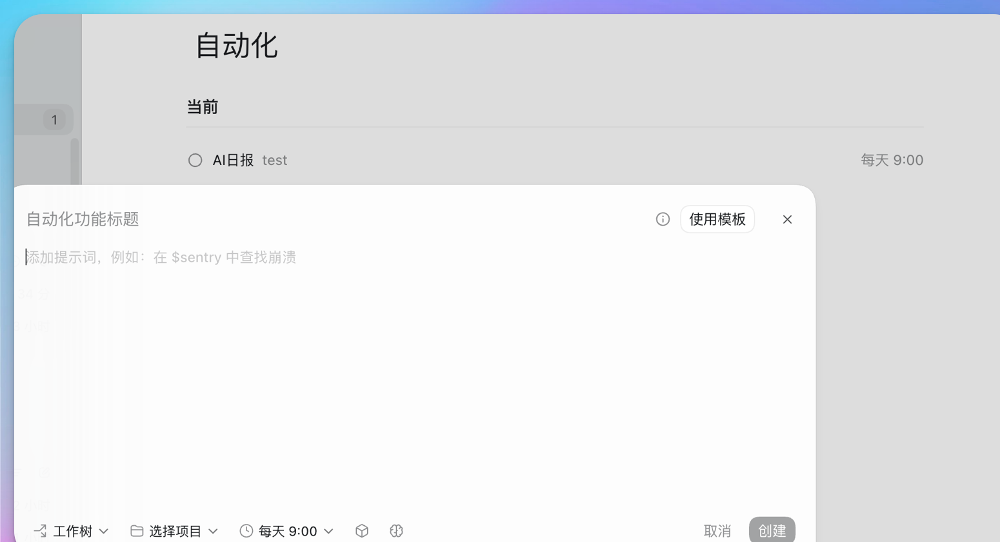
9.12 如何设置自己的 Codex 桌面宠物
前段时间，Codex 新增了一个会陪你工作的桌面小宠物。它不只是一个装饰，还会把 Codex 当前在忙什么实际显示出来。
这个宠物最大的价值在于状态的可视化：
- 任务进度一目了然： 不用一直切换回 Codex 的界面，就能看到当前任务的进度。
- 实时状态反馈：
- 它会在 Codex 忙碌的时候显示忙碌的画面。
- 在需要你确认的时候会发出提醒。
- 任务完成之后，它也会让你知道可以去检查结果了。
1. 安装
打开”设置” → “外观”，往下滑到”宠物”这一栏。在这里可以选择喜欢的宠物类型并点击”唤醒”，桌面上就会出现选定的小宠物了。
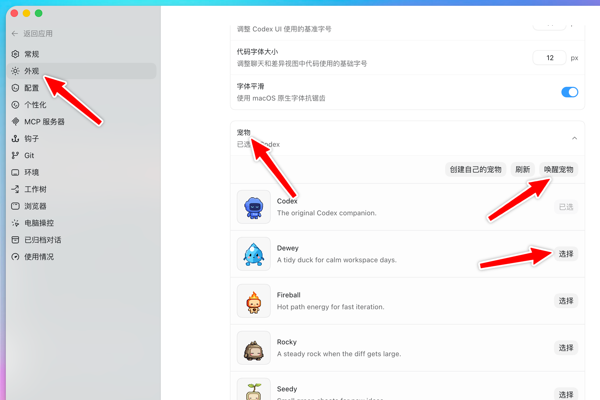
快捷命令方式： 如果不想进设置，也可以直接在聊天框中输入 /，选择”宠物”选项，同样可以唤醒或收起桌面宠物。
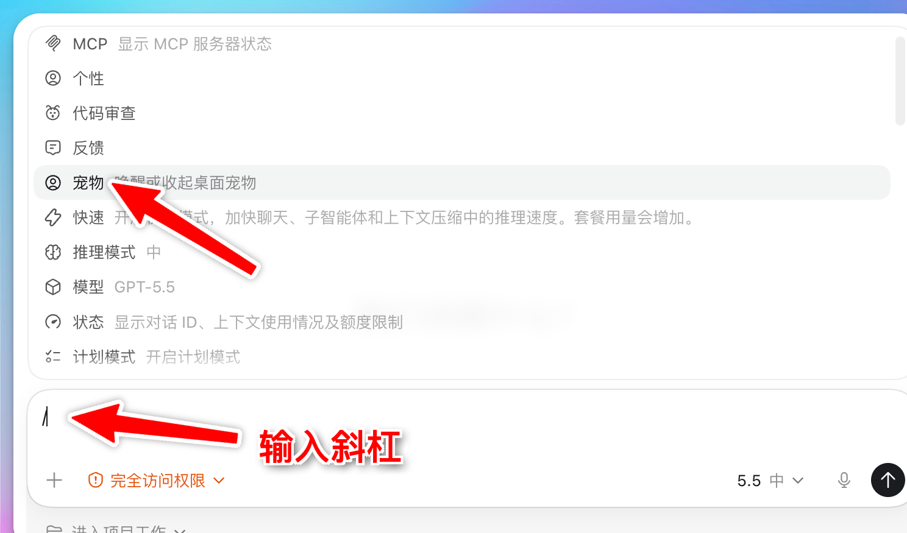
2. 使用
唤醒之后，像平常一样下达指令，然后去做其他事情。小宠物会在屏幕上陪伴着你，实时显示任务完成进度。
比如下面这个情况：它正在进行搜索，并执行我们的任务。
任务完成之后，会显示一个绿色对勾，提示任务已完成。也就是说，我们可以实时看到它的执行过程以及完成结果，完全不需要盯着 Codex 窗口等待。
9.13 安装与登录
本页先覆盖 Codex CLI 的安装与登录。桌面端、ChatGPT、Cloud 和 IDE 入口会在 入口地图 中分别展开。
安装前检查
官方仓库当前给出的 CLI 运行环境建议：
| 项目 | 建议 |
|---|---|
| 操作系统 | macOS 12+、Ubuntu 20.04+/Debian 10+、Windows 11 通过 WSL2 |
| Git | 推荐 2.23+，便于 PR 辅助能力 |
| 内存 | 4GB 起步，8GB 更稳 |
本地先确认：
node -v
npm -v
git --version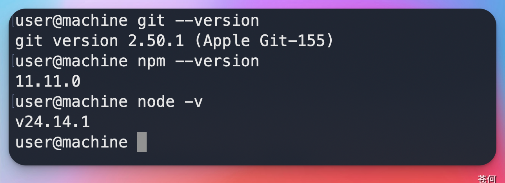
安装 CLI
常见安装方式：
npm install -g @openai/codex更新到最新版本：
npm install -g @openai/codex@latest检查版本：
codex --version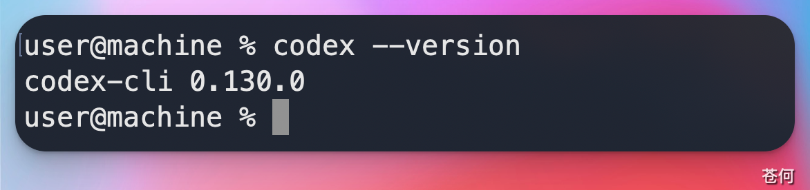
登录方式
运行：
codex根据终端提示完成登录。官方资料说明 Codex 可以通过 ChatGPT 账号在多个入口中使用，具体可用计划、限额和组织策略以 Codex in ChatGPT Help Center 为准。
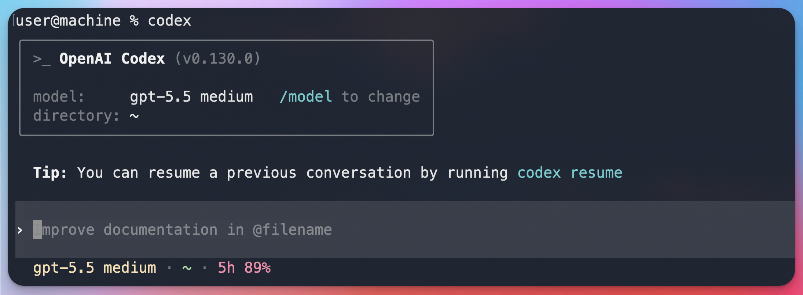
第一次只读任务
进入一个本地项目根目录：
cd path/to/your/project
codex先让 Codex 只读仓库：
请先阅读这个仓库的目录结构、README、包管理器配置和测试配置。不要修改文件。请总结：
1. 项目用途
2. 主要技术栈
3. 如何安装依赖和运行测试
4. 你建议我下一步交给你的 3 个低风险任务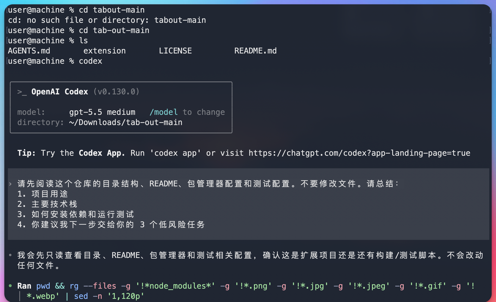
安装失败时怎么判断
| 现象 | 可能原因 | 处理方式 |
|---|---|---|
codex 命令找不到 | npm global bin 未进 PATH | 查看 npm bin -g，把目录加入 shell PATH |
| 登录后仍提示无权限 | 账号计划、组织策略或会话状态问题 | 重新登录，并查看 Help Center 中的计划说明 |
| Windows 运行异常 | 未使用 WSL2 或 shell 环境不完整 | 按官方建议使用 Windows 11 + WSL2 |
| 仓库命令跑不起来 | 项目依赖未安装或本地环境缺失 | 先安装项目依赖，再让 Codex 读取测试配置 |
完成后继续：第一次让 Codex 改代码。
9.14 第一次让 Codex 改代码
第一次实战不要选择“重构整个项目”。选择一个小、可验证、失败也容易回滚的任务，先建立你和 Codex 的协作节奏。
选择第一个任务
适合新手：
- 修复一个文案错别字。
- 给一个纯函数补测试。
- 更新 README 里的过期命令。
- 解释一个小模块，并补充必要注释。
- 修复一个已经有失败测试覆盖的 bug。
- 为文档站补一段截图占位说明。
暂时避开：
- 大规模架构重构。
- 跨多个服务的迁移。
- 没有测试的核心业务逻辑改动。
- 涉及生产凭据、账单、权限和删除数据的操作。
- 需要同时修改十几个文件的需求。
第一步：只读建图
先让 Codex 理解仓库：
请只读分析当前仓库，不要修改文件。
请输出：
1. 项目用途
2. 关键目录
3. 安装、测试、构建命令
4. 当前任务适合从哪里开始
5. 你建议我第一次交给你的低风险任务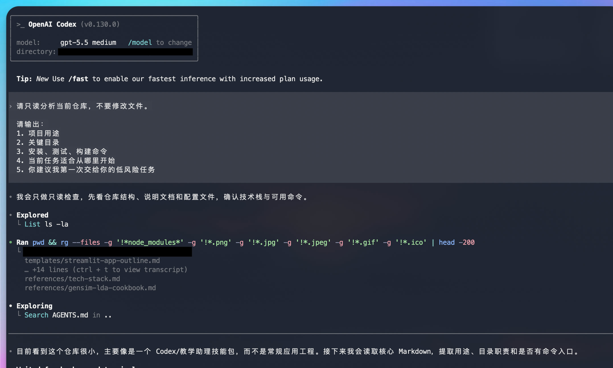
第二步：给出小任务
推荐复制这个模板：
请修复当前仓库中最小范围的一个测试失败。
要求：
1. 先运行测试，确认失败信息。
2. 阅读相关代码和测试，不做无关重构。
3. 修改最少必要文件。
4. 修复后重新运行相关测试。
5. 最后总结：失败原因、改了哪些文件、验证命令和剩余风险。如果任务是文档：
请更新 [文档文件] 中关于 [主题] 的说明。
要求：
1. 先读取相关官方资料和现有文档结构。
2. 保持中文教程风格，避免整段翻译官方原文。
3. 涉及操作步骤时添加截图占位。
4. 修改后运行文档站构建。
5. 最后列出来源链接和需要人工补图的位置。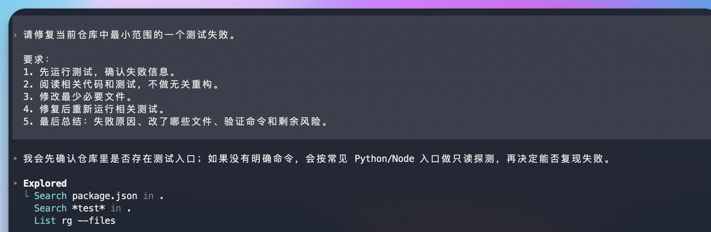
第三步：观察过程
重点观察五件事：
| 观察点 | 说明 |
|---|---|
| 是否先读上下文 | 好结果通常来自充分阅读相关文件 |
| 是否控制范围 | 第一次任务不追求顺手重构 |
| 是否解释命令 | 命令执行前应说明目的 |
| 是否运行验证 | 修改完成后要跑相关测试或构建 |
| 是否说明风险 | 没能验证的部分要如实记录 |
第四步：检查 diff
完成后自己再看一遍：
git diff可以让 Codex 自查：
请 review 你刚才的改动，不要继续修改文件。
请重点检查：
1. 是否有无关改动
2. 是否遗漏测试
3. 是否引入安全或兼容风险
4. 是否还有未验证的地方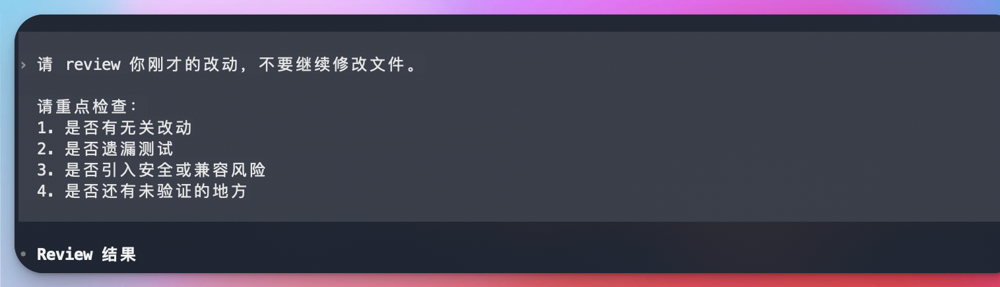
第五步：提交前记录
提交前让 Codex 给出一段摘要：
请用提交前摘要格式输出：
- 改动目标
- 修改文件
- 验证命令
- 验证结果
- 剩余风险
- 建议 commit message如果结果满意，再提交：
git add .
git commit -m "fix: resolve failing test"第一次失败怎么办
| 失败现象 | 处理方式 |
|---|---|
| 改动太大 | 让 Codex 停下，只保留最小修复思路 |
| 测试跑不起来 | 先让它解释环境缺口和命令来源 |
| 方向不对 | 回到只读分析，让它列出文件依据 |
| 输出太泛 | 要求按文件、命令、风险分段输出 |
| 误改无关文件 | 用 git diff 确认，再手动决定保留或丢弃 |
完成标准
第一次实战完成后，你应该拿到：
- 一个很小的 diff。
- 一条可复现的验证命令。
- 一段清楚的改动摘要。
- 一个可复用的任务模板。
- 对 Codex 权限和审批的初步理解。
下一步继续读：了解 Codex 基本组成。
9.15 在 VS Code 中使用 Codex
本章介绍如何在 VS Code 代码编辑器中安装 Codex 插件，并通过插件完成开发任务。相比桌面 App，在 VS Code 中使用 Codex 可以更直接地看到文件目录结构和修改前后的对比，适合习惯在编辑器里工作的开发者。
安装 Codex 插件
打开 VS Code，点击左侧边栏的「扩展」图标，在搜索框中输入 Codex，选择第一个结果，点击「安装」即可。

打开插件对话窗口
安装完成后，在 VS Code 中打开任意一个项目文件，右上角会出现 ChatGPT 的图标。点击该图标，右侧边栏就会展开 Codex 的对话窗口。
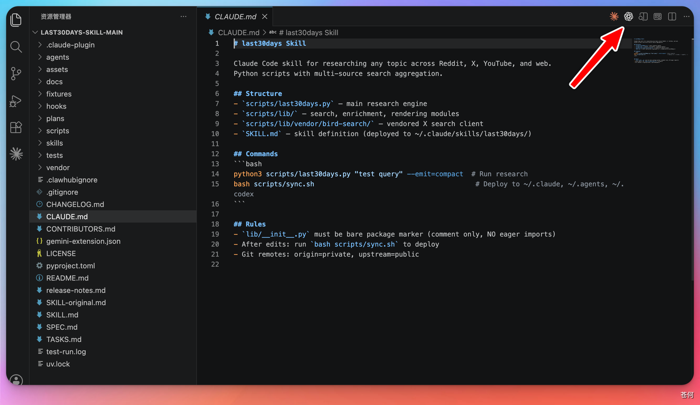
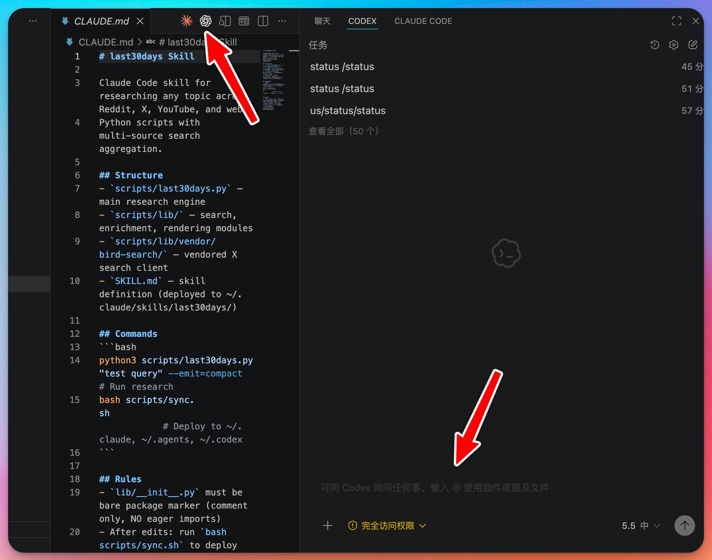
开始使用
对话窗口打开后，直接输入需求，Codex 就会开始辅助完成开发任务，用法与 Codex 桌面 App 基本一致。
使用 @ 指定文件：
在对话框中输入 @ 后选择具体文件，Codex 会直接定位到该文件进行分析或修改，比让它全局搜索更快、更准确。建议在任务目标明确时优先使用 @ 指定相关文件。

App 与 VS Code 插件怎么选
| Codex 桌面 App | VS Code 插件 | |
|---|---|---|
| 适合场景 | 多任务管理、Skills、Automations | 边写代码边调用，贴近编辑器工作流 |
| 文件结构可见性 | 需要切换界面 | 直接在编辑器里查看 |
| 修改前后对比 | 独立查看 | 可结合编辑器 diff 查看 |
| 推荐用户 | 需要并行任务或插件协作 | 日常编码开发者 |
根据自己的使用习惯选择即可，两者可以配合使用。
9.16 AGENTS.md
对于 Codex，每开启一个新的对话窗口，它都会进入一个全新的上下文。它不知道这个项目用什么命令、有哪些目录边界、哪些文件不能改，也不知道团队平时怎么验证结果。
AGENTS.md 正是为了解决这类问题而存在的项目级指令文件。它是一个简单、开放的 Markdown 约定，目标是给不同 coding agent 提供一个稳定、可预测的项目指令入口，把项目结构、开发命令、测试要求、代码风格和协作边界显式写下来，减少反复解释。
更准确地说，AGENTS.md 是面向 coding agent 的 README。README 主要给人看，讲项目是什么、怎么上手；AGENTS.md 给 Codex 和其他 coding agent 看，告诉它们改代码前应该遵守哪些项目规则。
可以把它理解为：
- 对个人用户：减少重复解释“项目怎么跑、怎么测、哪些地方不能碰”。
- 对团队项目：把团队共同认可的 agent 使用规则沉淀到仓库里。
- 对多工具环境：让 Codex、IDE agent、CLI agent 等工具尽量读取同一份项目说明。
本质上就是一份普通的 Markdown 文件。
存放位置与读取机制
文件位置
对于普通项目，最推荐的做法是在项目根目录创建 AGENTS.md。Codex 在开始处理任务前会自动读取它，并把内容作为工作上下文带入新的对话。
若希望全局生效，可以撰写 Codex 的全局指令：
- 在 Codex_Home 目录中创建
AGENTS.md。默认位置通常是~/.codex/AGENTS.md；如果设置了CODEX_HOME，则以对应目录为准。 - 在 Codex 桌面 App 里配置个人偏好或自定义指令。本质上也是写入 Codex_Home 的
AGENTS.md，与上述方法等价。
设置全局规则后，它会影响你打开的所有项目；项目级 AGENTS.md 只影响当前仓库。两者作用域不同，要分清。
请确保文件名始终为 AGENTS.md，并确认大小写是否正确。否则 Codex 不会自动识别。
读取顺序与合并规则
Codex 读取 AGENTS.md 遵循以下顺序：
- 先读取全局规则：默认读取
~/.codex/AGENTS.md。如果同一位置存在AGENTS.override.md，则优先读取它，适合临时覆盖全局规则。 - 然后读取项目规则：进入项目后，Codex 通常会从 Git 根目录开始，一路走到当前工作目录。沿途每一层目录，它会尝试读取项目指令文件。
项目指令文件的默认优先级是：
AGENTS.override.md
AGENTS.md也就是说，同一目录里如果同时存在这两个文件，AGENTS.override.md 会覆盖 AGENTS.md。
Codex 会把读取到的指令从上到下合并。根目录的规则先出现，子目录的规则后出现。越靠近当前目录的规则越具体，因此也更适合写局部要求。
一个文件结构的示例：
AGENTS.md
apps/
web/
AGENTS.md
packages/
database/
AGENTS.md上述示例中，根目录 AGENTS.md 写全仓库通用规则，apps/web/AGENTS.md 写前端规则，packages/database/AGENTS.md 写数据库迁移和测试要求。
注意事项：
- 如果你的项目已经有其他规则文件，可以通过 Codex 配置里的
project_doc_fallback_filenames添加备用文件名。Codex 会在找不到AGENTS.override.md和AGENTS.md时，再尝试这些 fallback 文件。 - Codex 还会限制合并后的项目指令大小。官方默认值是
project_doc_max_bytes = 32768，也就是 32 KiB。规则文件太大时，后面的内容可能不会进入上下文，所以尽量保持AGENTS.md精简。
团队协作
多人协作时，AGENTS.md 适合保存团队共同认可的项目规则；个人路径、本机工具习惯、临时约束和私有工作流偏好，则更适合留在本地。这样团队规则保持稳定，个人习惯也不会被提交到仓库。
使用场景
下面这些内容适合放在本地私有规则里：
- 本机缓存、SDK、脚本或临时目录路径。
- 个人常用命令、别名、编辑器习惯。
- 只对自己有效的语言风格、回复格式、验证偏好。
- 不方便进入团队文档的临时限制，例如“今天先只做只读分析”。
文件分工
| 文件 | 作用 | 是否提交到 Git |
|---|---|---|
AGENTS.md | 团队共享的项目规则、命令、边界和交付要求 | 可以提交 |
AGENTS.override.md | Codex 官方识别的覆盖文件，适合临时覆盖同目录规则 | 通常不提交，除非团队明确约定 |
AGENTS.local.md | 个人本地偏好、私有路径和临时规则 | 应加入 ignore |
需要注意：AGENTS.local.md 不是 Codex 默认识别的标准文件名。如果你想让 Codex 读取它，需要借助 hooks、社区工具（见下方推荐），或在配置中把它加入 fallback 文件名。
无论是否使用本地规则，都应遵守：
- 不把 token、密钥、账号密码写进
AGENTS.local.md。 - 把
AGENTS.local.md和AGENTS.override.md加入全局 gitignore 或项目.gitignore。 - 不在本地规则里绕过团队的测试、审批和安全要求。
- 每次引入 hooks 工具前，先确认它是否会替换命令、执行仓库文件、访问网络或写入敏感目录。
社区工具推荐
社区工具 codex-agents-local 提供了 AGENTS.local.md 的本地覆盖方案。它通过 Codex hooks 在会话开始或提交提示词时同步本地规则。
安装前建议先让 Codex 审查安装提示词，再决定是否执行：
Read https://github.com/samzong/codex-agents-local/blob/main/INSTALL_PROMPT.md
Follow that prompt in Codex to install codex-agents-local.安装或修改本地规则后，可以用这些命令检查状态：
codex-agents-local doctor
codex-agents-local sync --cwd . --check
codex-agents-local sync --cwd . --json如果还没有安装社区工具，可以先检查 ignore 状态：
git check-ignore -v AGENTS.local.md AGENTS.override.md参考模板
### AGENTS.md
### 项目概览
- 项目类型：
- 主要语言：
- 关键目录：
- 不要修改的目录：
### 常用命令
- 安装依赖：`...`
- 本地开发：`...`
- 运行测试：`...`
- 类型检查：`...`
- 格式化：`...`
### 代码规范
- 遵循现有代码风格。
- 不做无关重构。
- 新增功能必须补充或更新测试。
### 安全边界
- 不读取或提交 `.env`、密钥和私有凭据。
- 不执行删除生产数据的命令。
- 修改数据库迁移前先说明影响。
### 交付要求
- 说明改动文件。
- 说明验证命令和结果。
- 说明未验证项和剩余风险。最佳实践
- 多利用市面上已有的、经过无数开发者验证的成熟辅助工具。比如写“运行测试：pnpm test”比写“记得自己检查一遍代码是否有问题”有用。
- 确保没有跟其他规范文档的指令产生冲突。
- 勤于更新。随着项目逐渐推进，里面的命令也需要与时俱进。
AGENTS.md可以承担导航的作用。可以告诉 Codex 项目文档的阅读目录清单，而不是把文档写进AGENTS.md里。
9.17 沙盒与审批：Codex 的安全护栏
Codex 能读取代码、修改文件、执行命令。这些操作需要受控边界：哪些目录可写、哪些命令可执行、什么情况下必须暂停并请求确认。
沙盒和审批就是这套边界。
对于绝大多数人而言，只需要把 Auto-Reivew 模式打开就够了。本文章旨在让你更好地理解 Codex 的沙盒机制和审批策略，同时补充一些进阶用法。
当你在利用沙盒和权限机制来约束 Codex 行为的时候，你已经在实践 Harness Engineering ，即“约束工程” 。

三个概念
想象 Codex 在你的电脑里工作，就像在一个有玻璃墙和门禁的实验室里操作。
- 沙盒就是实验室的墙和门禁：它规定 Codex 能碰哪些设备、能不能连外网、能不能写入项目外文件夹。墙内的常规操作，Codex 可以自己做；墙外的事情，需要先获得许可。
- 审批策略就是门禁的触发规则：是「沙盒外区域每次请求确认」，还是「只在 Codex 越过沙盒边界时请求确认」，还是「完全不请求，自行处理」。
- 审批人就是谁来回答门禁：你自己看门放行，还是让另一个智能门禁系统（Auto-review）先判断一下。
三者加在一起，决定 Codex 在你的电脑上到底能做什么、不能做什么。
默认推荐
Codex 启动时会根据目录状态自动推荐权限：
- 版本控制目录（带有.git文件夹）：
Auto，也就是workspace-write + on-request。 - 非版本控制目录（不带有.git文件夹）：
read-only。 - 某些情况下，Codex 会先保持
read-only，直到你明确信任当前工作目录。
日常开发最常用的是
- 沙盒设置：workspace write（工作区写入）
- 批准机制：on-request（按请求）
旧版写法（仍可用）：
sandbox_mode = "workspace-write"
approval_policy = "on-request"
approvals_reviewer = "user"新版 permission profiles 写法（beta）：
default_permissions = ":workspace"
approval_policy = "on-request"
approvals_reviewer = "user"新旧配置不要混用。 这些配置通常写在~/.codex/config.toml。如果任意已加载配置里出现sandbox_mode，或命令行传了--sandbox，Codex 会使用旧版 sandbox 设置，而不是default_permissions。
这段话什么意思？用上面的类比解释：
- Codex 可以在当前项目文件夹（workspace）里正常操作：读取文件、修改文件、运行常规的本地命令（比如
git、测试脚本、编译）。 - 如果需要联网、写到项目外面、或者做越界的事情，就会触发审批，暂停并请求确认。
这是官方推荐的默认设置。它不会每一步都要求交互确认，也不会让 Codex 获取整台电脑的权限。
沙盒模式
三种沙盒模式，对应不同的权限边界：
| 模式 | 对应英文 | 范围 | 审批触发条件 |
|---|---|---|---|
| 只读 | read-only / :read-only | 主要用于读文件和回答问题；命令执行也受只读边界限制 | 修改文件、执行需要写入的命令或联网时触发审批 |
| 工作区写入 | workspace-write / :workspace | 可以在项目里读、写、运行常规命令 | 联网或写到项目外时触发审批 |
| 完全访问 | danger-full-access / :danger-full-access | 没有沙盒限制，可以访问任何位置 | 取决于审批策略 |
日常默认用工作区。 它为 Codex 提供足够的操作空间完成普通开发任务，同时守住项目边界。
不要轻易使用完全访问。 它等于拆掉了所有沙盒限制，Codex 可以写入系统文件、访问任意网络。如果正在做删除数据、部署到生产环境或批量修改文件之类的操作，用完全访问会把风险放大。CLI 里的 --dangerously-bypass-approvals-and-sandbox（别名 --yolo）就是这个模式。
另外，即使在「工作区」模式下，下面这些路径也会被只读保护：
.git目录（你的版本控制数据）.agents目录（你的 agents 配置）.codex目录（Codex 自身的配置）
这些路径在默认 workspace-write 策略下是只读保护区。Codex 可以读取它们，但不能直接写入里面的内容。
审批策略
沙盒规定了边界，审批策略决定什么时候 Codex 必须暂停并请求确认。
| 策略 | 触发条件 | 说明 |
|---|---|---|
untrusted（不可信） | 命令不属于已知安全的读取操作 | 只自动执行已知安全的读操作；可能修改状态、触发外部执行路径或危险 Git 操作的命令都需要确认 |
on-failure（失败时） | 命令执行失败时 | 先在当前权限下尝试执行；失败后再请求确认。这个选项在部分 App 配置界面中可见，但不是当前官方文档的默认推荐 |
on-request（按请求） | 操作越过沙盒边界 | 默认推荐。沙盒内自动执行，越界时请求确认 |
never（从不） | 不触发 | Codex 在既有权限内自行处理，不弹出审批 |
on-request（按请求）是新手最友好的选择。 沙盒内自动执行，越界时暂停并请求确认。不需要审批每一个文件修改，只需要在关键时刻把关。
never 不是「自动变安全」。 它只是不请求确认。安全取决于沙盒边界是否足够窄。比如 read-only + never 是安全的，因为 Codex 本来就不能改东西；但 danger-full-access + never 是官方标注的高风险组合——没有沙盒限制，也没人确认。
Auto-review
如果一个命令需要越过沙盒，那么 Codex 就会发起请求。请求除了用户来批准以外，也可以使用 Auto-review 模式自动批准。
Auto-review 相当于：当 Codex 越过沙盒边界时，不是直接呈现给你，而是先交给 reviewer agent 判断。常见的有：
- 写入项目外目录
- 联网请求
- 请求更多权限
- 执行带副作用的 app 或 MCP 工具调用
沙盒内允许的操作，不会经过 Auto-review。 所以它不会改变日常操作的沙盒边界。
Auto-review 不会扩大沙盒边界。它不会扩展 Codex 的 workspace，不会自动给它网络权限，也不会让危险命令绕过沙盒。如果 reviewer agent 判断请求有风险，它会拒绝，Codex 需要选择更安全的替代方案，或者请求确认。
底层配置：
approval_policy = "on-request"
approvals_reviewer = "auto_review"approval_policy决定什么时候产生审批请求。on-request表示沙盒内操作继续执行，越过沙盒边界时才请求审批。approvals_reviewer决定审批请求交给谁。默认是"user"，即直接呈现给用户；改成"auto_review"后，符合条件的审批请求会先交给 reviewer agent。
这两个字段要一起理解。只写 approvals_reviewer = "auto_review" 不会让 Codex 主动产生更多审批请求；它只是改变已有审批请求的处理人。也就是说，Auto-review 的前提仍然是 approval_policy 处在会产生交互审批的模式，比如 "on-request" 或 granular。
如果你想保留沙盒边界，同时减少手动确认操作，可以这样写：
sandbox_mode = "workspace-write"
approval_policy = "on-request"
approvals_reviewer = "auto_review"如果你已经改用新版 permission profiles，也可以这样写：
default_permissions = ":workspace"
approval_policy = "on-request"
approvals_reviewer = "auto_review"更多阅读：Agent approvals & security：Automatic approval reviews。
网络权限
联网能解决问题，也能引入风险。Codex 需要联网时，通常是为了：
- 安装依赖（
npm install、pip install） - 查询信息
- 调用 GitHub API
- 测试时访问本地服务器
但联网也会带来风险：
- 提示词注入：恶意网页可能让 Codex 执行不该执行的命令
- 数据外发：你的代码、密钥、
.env文件可能意外泄露 - 供应链风险：安装的依赖本身可能不安全
所以：
- 如非必要，不要给网络权限。 如果只是修改本地文档，完全不需要联网。
- 搜索资料时，优先用 Codex 内置的受控 web search，而不是让 Codex 直接访问任意网页。
- 需要联网时，让 Codex 说明目标域名和用途，并且确认是访问可信任的网站。
- 永远不要把
.env、token、cookie、私钥交给会联网的命令。
进阶配置
如果你发现 Codex 经常因为沙盒边界过窄而频繁触发审批，推荐使用 Auto-review ，让 Codex 帮你审批，从而减少手动确认次数。
如果对项目安全边界要求很高，或者是处理一些敏感的操作，那么也有一些进阶配置可选：
1. 扩展 workspace（最推荐）
如果 Codex 需要同时修改两个项目目录，比如 ~/project-a 和 ~/project-b，你可以把第二个目录也加入可写范围。这是扩展 workspace，不是拆掉沙盒边界。
旧版写法：在 config.toml 的 sandbox_workspace_write.writable_roots 里添加。
新版写法：在 permissions.<name>.workspace_roots 里添加。
旧版 sandbox 写法适合还在使用 sandbox_mode 的配置：
sandbox_mode = "workspace-write"
approval_policy = "on-request"
[sandbox_workspace_write]
writable_roots = ["~/project-a", "~/project-b"]
network_access = false新版 permission profiles 写法适合把文件系统和网络边界放在同一个 profile 里。这里的 my-docs-workspace 是自定义 profile 名称，可根据需要命名。
default_permissions = "my-docs-workspace"
approval_policy = "on-request"
[permissions.my-docs-workspace]
extends = ":workspace"
[permissions.my-docs-workspace.workspace_roots]
"~/project-a" = true
"~/project-b" = true
[permissions.my-docs-workspace.filesystem.":workspace_roots"]
"." = "write"
"**/*.env" = "deny"
[permissions.my-docs-workspace.network]
enabled = false这两个写法二选一。只要已加载配置里出现 sandbox_mode，Codex 就会走旧版 sandbox 设置，而不是 default_permissions。
2. 为常用越界命令设置规则（rules）
Rules 控制的是 Codex 需要在沙盒外运行命令时怎么处理。你可以在 .rules 文件里写 prefix_rule，把某类命令设为 allow、prompt 或 forbidden。规则里可以写 match 和 not_match 做验证，减少误匹配。
3. 自定义 permission profiles（beta）
如果你需要更细的控制——比如「能写代码，但只能访问 GitHub 和 npm，不能访问别的网站」——可以定义一个自定义 profile。也就是上文提及的default_permissions写法。
default_permissions = "workspace-net"
approval_policy = "on-request"
[permissions.workspace-net]
extends = ":workspace"
[permissions.workspace-net.filesystem.":workspace_roots"]
"." = "write"
"**/*.env" = "deny"
[permissions.workspace-net.network]
enabled = true
[permissions.workspace-net.network.domains]
"api.github.com" = "allow"
"registry.npmjs.org" = "allow"
"*.npmjs.org" = "allow"网络权限一旦开启，最好配合域名规则。"*" 也可以放行公共网络，但它的范围很大，不适合当默认示例。
4. 细粒度审批策略（granular，需手动配置）
如果你只想对特定类型的审批请求分别控制，而不是全部越过沙盒边界的操作都请求确认，可以用 granular 策略。它不在 UI 下拉菜单里，需要手动在 config.toml 里写：
approval_policy = { granular = {
sandbox_approval = true, # 沙盒越界时问
rules = true, # rules 触发时问
mcp_elicitations = true, # MCP elicitation 请求时问
request_permissions = false, # 权限请求自动拒绝
skill_approval = false # skill 脚本审批自动拒绝
} }这里的 true 表示该类请求保持交互审批；false 表示自动拒绝。它是 on-request 的进阶替代，不是 UI 选项。
更多详情请阅读：Agent approvals & security：granular approval policy。
平台差异
不同系统的沙盒实现不同，但对你来说，用法是一样的：
- macOS：使用系统自带的 Seatbelt 机制，无需额外配置。
- Windows：原生 Windows 有两个版本。
elevated更强，使用独立低权限用户和防火墙；unelevated是回退，使用当前用户的受限令牌。有些公司电脑的策略限制可能只能用unelevated。IDE 里可以设置让 Codex 运行在 WSL2 里，这样用的是 Linux 的沙盒机制。 - Linux / WSL2：需要安装
bubblewrap。如果缺少它，Codex 可能会弹出警告或性能下降。WSL1 从 Codex 0.115 起不再支持。
遇到报错时，记住两点：先检查 Codex 的权限模式设置，再查询对应平台的文档。无需记忆实现细节。
高风险判断
以下情况，建议让 Codex 先说明计划，再决定是否放行：
- 删除文件、批量移动文件、清理目录
- 数据库迁移、修改生产数据
- 修改认证、权限、支付、账单相关代码
- 访问生产服务器或外部 API
- 处理密钥、token、cookie、私有凭据
- 大规模安装或升级依赖
- 执行部署、发布、推送 release
判断标准：
- 有没有不可逆的副作用？（删除后无法恢复）
- 会不会涉及敏感数据？（密钥、用户数据）
- 会不会影响项目外面？（生产环境、别的系统）
如果你不确定，可以在任务开头贴这段提示词，让 Codex 更谨慎：
请在动手前先说明你计划运行的命令和可能影响的文件。不要读取 `.env`、密钥、token、cookie 或任何私有凭据。不要执行删除数据、发布、部署或迁移命令，除非我明确确认。这段话不能代替沙盒，但能让 Codex 更早说明计划，减少误操作。
团队建议
- 统一配置标准。团队内统一审批策略和沙盒模式。有人用
never+danger-full-access，有人用on-request+workspace-write，发生问题时难以排查。把推荐的配置通知给团队成员，按统一标准执行。 - 配置进版本控制。
.rules、AGENTS.md和 项目级config.toml文件纳入版本控制，克隆仓库后权限一致。 - 敏感数据隔离。生产密钥不放在普通开发环境。用 profile 里的
deny规则把**/*.env和~/.ssh标记为禁区，比依赖人记忆更可靠。 - 高风险操作强制审批。对删除、部署、数据迁移等操作，用
granular或rules强制走审批流程。 - Codex 的改动仍然要 review。沙盒和审批负责边界控制，不负责代码质量。代码改动仍然走正常的 PR 流程。
9.18 Codex Cloud：使用云端模式
Codex Cloud 是一种不依赖本地环境的使用方式。你不需要在自己电脑上打开 App 或 CLI，直接在浏览器里连接 GitHub 仓库，让 Codex 在云端完成任务。
适合场景
- 较长的任务，不想占用本地资源
- 多个任务并行推进
- 让 Codex 在独立环境里分析仓库、提出 PR
- 不在电脑旁、只有浏览器时临时使用
如何使用
第 1 步：打开 Codex Cloud
访问：https://chatgpt.com/codex/cloud
连接成功后会跳转到任务页面：
第 2 步：授权并选择仓库
Cloud 模式直接在 GitHub 仓库中运行，需要先完成授权。你可以授权全部仓库，也可以只选择特定仓库：
第 3 步：下达指令，查看任务进度
下达指令后，Codex 会在云端执行任务，进度显示在页面下方的任务列表里：
点击任务可以查看每一步的执行过程和中间状态。任务完成后也可以查看最终回答和产出内容：
与桌面 App 模式的区别
| Codex 桌面 App | Codex Cloud | |
|---|---|---|
| 运行环境 | 本地电脑 | 云端（GitHub 环境） |
| 是否需要安装 | 需要下载电脑端客户端 | 不需要，浏览器直接访问 |
| 适合任务 | 本地代码、插件、自动化 | 远程仓库分析、PR 生成 |
| 并行任务 | 支持 | 支持 |
9.19 Hooks
Hooks 是 Codex 的生命周期扩展机制，允许在固定时机运行外部脚本，例如用户提交提示词、工具调用前后、上下文压缩前后，或一次 turn 即将结束时。它适合执行确定性的自动检查，不适合替代 Codex 本身的推理，可以将其视为在 agent 工作流旁运行的轻量 guardrail 脚本。
需要注意，Hooks是非常进阶的用法，一般推荐通过社区获取推荐的Hooks。也可以使用 Codex 撰写。
Hooks常见用途包括：
- 把对话或工具调用记录发送到团队日志系统。
- 检查用户提示词里是否误贴了 API key、token 或私密信息。
- 在会话开始时加载本地说明、项目约定或临时上下文。
- 在工具调用前拦截高风险命令，例如删除文件、发布、部署、数据库迁移。
- 在工具调用后检查输出，提醒 Codex 继续验证或修正。
- 在对话停止前要求 Codex 再跑一次测试、补充总结或生成交付说明。
Hooks 的优势在于确定性：脚本怎么写，就怎么执行。其边界也在于此：脚本本身必须安全、可审查、可维护。
默认开启
Codex 默认启用 Hooks。如果想在本机关闭，可以在 config.toml 中写：
[features]
hooks = false官方推荐使用 hooks 这个 feature key。旧的 codex_hooks 仍可用，但已弃用。
团队或企业管理员也可以通过 requirements.toml 强制关闭或管理 Hooks。普通个人用户通常只需要理解本机和项目里的配置。
配置位置
Codex 会在激活的配置层旁边查找 Hooks。常见位置有四个：
~/.codex/hooks.json
~/.codex/config.toml
<repo>/.codex/hooks.json
<repo>/.codex/config.toml也就是说，Hooks 可以单独写在 hooks.json，也可以写在项目目录的.codex/config.toml 的 [hooks] 表。
如果多个位置都有匹配的 Hook，Codex 会全部加载。为避免混淆，同一层里建议二选一：要么用 hooks.json，要么用 config.toml 内联写法。
项目内的 Hooks 只有在项目 .codex/ 配置层被信任后才会加载。未信任项目里，Codex 仍会加载用户级或系统级 Hooks。
基本结构
Hooks 配置包含三层：
- 事件：什么时候触发，例如
SessionStart、PreToolUse、PostToolUse、Stop。 - matcher：匹配哪些场景，例如只匹配
Bash，或只匹配startup|resume。 - handler：真正执行的命令。
一个最小 hooks.json 可以这样写：
{
"hooks": {
"SessionStart": [
{
"matcher": "startup|resume",
"hooks": [
{
"type": "command",
"command": "python3 ~/.codex/hooks/session_start.py",
"statusMessage": "Loading session notes"
}
]
}
]
}
}当前实际执行的 handler 类型是 type: "command"。prompt 和 agent 这类 handler 目前会被解析，但不会执行。
事件与触发
Hooks 绑定在 Codex 的固定生命周期节点上，而不是随机触发。
生命周期
一次典型对话的生命周期如下：
会话启动
-> SessionStart
用户提交提示词
-> UserPromptSubmit
Codex 准备调用工具
-> PreToolUse
如果工具需要额外权限
-> PermissionRequest
工具执行完成
-> PostToolUse
当前 turn 准备结束
-> Stop如果中途发生上下文压缩，会触发 PreCompact 和 PostCompact。如果 Codex 启动子代理，会触发 SubagentStart 和 SubagentStop。
匹配规则
事件触发后，Codex 会检查这个事件下配置的 matcher。matcher 命中，才会启动对应 command handler。
例如：
{
"hooks": {
"PreToolUse": [
{
"matcher": "^Bash$",
"hooks": [
{
"type": "command",
"command": "python3 check_bash.py"
}
]
}
]
}
}这段配置只会在 Codex 准备调用 Bash 工具前触发。调用 apply_patch、MCP 工具或其他工具时不会触发这个 handler。
并发与冲突
如果多个配置层里都有匹配 Hook，Codex 会全部运行。高优先级配置层不会覆盖低优先级 Hooks。
同一个事件下如果有多个 matching command hooks，它们会并发启动。因此，一个 Hook 不能靠“先运行”来阻止另一个匹配 Hook 启动。
这会带来两个实践要求：
- Hook 之间不要依赖固定顺序。
- 如果多个 Hook 都可能做决定，要按官方事件规则理解冲突处理。例如
PermissionRequest里任何一个deny都会优先。
事件能力
不同事件能改变 Codex 行为的程度不同：
| 事件 | 能否阻止或改变后续行为 |
|---|---|
PreToolUse | 可以拒绝部分工具调用，也可以给 Codex 补充上下文 |
PermissionRequest | 可以允许或拒绝权限请求 |
PostToolUse | 工具已经执行完，不能撤销副作用，只能改变 Codex 接下来看到的反馈 |
UserPromptSubmit | 可以阻止用户提示词提交，或补充上下文 |
Stop | 可以要求 Codex 继续一轮 |
SessionStart | 主要用于补充会话开始时的上下文 |
因此，想阻止危险命令，要用 PreToolUse；想审查执行结果，用 PostToolUse；想避免 Codex 过早结束，用 Stop。将 Hook 配置在错误的事件点，效果会不同。
作用范围
官方文档把事件分成不同作用范围：
- turn scope：围绕一轮用户请求触发，例如
PreToolUse、PermissionRequest、PostToolUse、UserPromptSubmit、Stop。 - thread scope：围绕会话启动触发，例如
SessionStart。 - subagent scope：围绕子代理启动和停止触发，例如
SubagentStart、SubagentStop。
入门时，建议先掌握 turn scope。因为最常用的场景通常就是检查提示词、拦截工具调用、检查工具输出，以及在结束前补验证。
常见事件
以下事件适合入门理解：
| 事件 | 触发时机 | 常见用途 |
|---|---|---|
SessionStart | 会话启动、恢复、清空或压缩后重新开始 | 加载本地上下文、提示项目约定 |
UserPromptSubmit | 用户提示词即将提交 | 检查敏感信息、提示用户补充复现步骤 |
PreToolUse | Codex 调用工具前 | 拦截危险命令、提示生成物目录不能改 |
PermissionRequest | Codex 准备请求权限时 | 自动允许低风险请求，拒绝高风险请求 |
PostToolUse | 工具调用完成后 | 检查命令输出、要求继续验证 |
PreCompact / PostCompact | 上下文压缩前后 | 保存摘要、补充压缩后的上下文 |
SubagentStart / SubagentStop | 子代理开始或停止 | 给子代理补充规则，要求子代理继续检查 |
Stop | 当前 turn 即将结束 | 要求 Codex 再跑测试、补总结或继续处理失败项 |
该表用于建立直观理解。真正写 Hook 时，要再看具体事件支持哪些输入字段、输出字段和决策格式。
matcher
matcher 是正则表达式字符串，用来过滤 Hook 什么时候触发。
常见写法：
Bash
^apply_patch$
Edit|Write
mcp__filesystem__.*
startup|resume|clear|compact
manual|auto不同事件的 matcher 含义不同：
PreToolUse、PermissionRequest、PostToolUse：匹配工具名，例如Bash、apply_patch、MCP tool name。SessionStart：匹配启动来源，例如startup、resume、clear、compact。PreCompact、PostCompact：匹配压缩触发方式，例如manual或auto。UserPromptSubmit和Stop：目前不使用 matcher，配置了也会被忽略。
输入输出
每个 command Hook 都会从 stdin 收到一个 JSON 对象。常见字段如下：
| 字段 | 含义 |
|---|---|
session_id | 当前 Codex 会话 id |
transcript_path | 会话 transcript 路径，可能为空 |
cwd | 当前工作目录 |
hook_event_name | 当前 Hook 事件名 |
model | 当前模型 slug |
permission_mode | 当前权限模式，部分事件会提供 |
Hook 可以通过退出码和 stdout / stderr 影响 Codex。主要分为两类：
- 正常退出并输出 JSON：给 Codex 补充上下文、拦截工具、要求继续。
- exit code
2并写入stderr：表示阻止或反馈原因，具体效果取决于事件。
不要将 transcript 视为稳定 API。官方说明它只是方便读取的会话记录，格式未来可能变化。
事件示例
拦截工具调用
PreToolUse 可以拦截 Bash、apply_patch 和 MCP 工具调用。例如，阻止危险命令时，可以让脚本返回：
{
"hookSpecificOutput": {
"hookEventName": "PreToolUse",
"permissionDecision": "deny",
"permissionDecisionReason": "Destructive command blocked by hook."
}
}也可以用旧格式：
{
"decision": "block",
"reason": "Destructive command blocked by hook."
}需要明确边界：PreToolUse 是 guardrail，不是完整安全边界。官方说明它目前不会拦截所有 shell 调用，也不会拦截 WebSearch 等非 shell、非 MCP 工具。真正高风险的项目，仍然要依赖沙盒、审批、权限策略和人工 review。
处理权限请求
PermissionRequest 会在 Codex 准备请求权限时触发，例如 shell escalation 或 managed-network approval。
允许请求：
{
"hookSpecificOutput": {
"hookEventName": "PermissionRequest",
"decision": {
"behavior": "allow"
}
}
}拒绝请求：
{
"hookSpecificOutput": {
"hookEventName": "PermissionRequest",
"decision": {
"behavior": "deny",
"message": "Blocked by repository policy."
}
}
}如果多个 Hook 同时匹配，只要有一个返回 deny，就会拒绝。否则，只要有一个返回 allow，Codex 就可以跳过普通审批提示。没有 Hook 做决定时，继续走正常审批流程。
Stop 事件
Stop 在当前 turn 即将结束时触发。它常用于避免 Codex 过早结束的场景，例如测试失败、还有未完成检查、交付说明缺验证结果。
如果 Stop Hook 返回：
{
"decision": "block",
"reason": "Run one more pass over the failing tests."
}这不是拒绝本轮结果，而是告诉 Codex 继续一轮，并把 reason 作为新的继续提示词。
审查与信任

非托管 command Hook 在运行前需要被审查和信任。Codex 会根据 Hook 当前定义计算 hash；Hook 修改后，会重新进入待审查状态，在信任前会被跳过。
CLI 里可以用：
/hooks查看 Hook 来源、审查新增或变化的 Hook、信任 Hook，或者禁用单个非托管 Hook。
一次性自动化场景下，如果你已经在 Codex 外部审查过 Hook 来源，可以使用：
codex --dangerously-bypass-hook-trust ...该参数名中的 dangerously 已表明其风险：它会绕过持久化 Hook 信任检查，不适合日常使用。
平台差异
Hook 命令默认与平台相关。需要兼容 Windows 时，可以给 command handler 增加 Windows 专用命令：
{
"type": "command",
"command": "python3 /repo/.codex/hooks/check.py",
"commandWindows": "py -3 C:\\repo\\.codex\\hooks\\check.py",
"timeout": 30
}在 TOML 里可以写 command_windows 或 commandWindows。
对于 repo-local Hooks，官方建议从 Git root 解析脚本路径，不要依赖 .codex/hooks/... 这种相对路径。因为 Codex 可能从子目录启动，相对路径容易出错。
使用建议
适合场景
- 检查提示词或命令里是否包含密钥。
- 阻止明显危险的 shell 命令。
- 自动加载本地上下文或项目规则。
- 在 turn 结束前检查是否遗漏测试。
- 团队统一记录 Codex 使用日志。
不适合场景
- 把大量业务逻辑塞进 Hook。
- 用 Hook 替代测试、CI、权限审批和代码 review。
- 在 Hook 里自动执行发布、部署、数据库迁移。
- 运行不可审查的远程脚本。
- 依赖 transcript 私有格式做长期稳定集成。
安全建议
- Hook 脚本要短、小、可审查。
- 使用绝对路径或基于 Git root 的路径。
- 不在 Hook 配置中写入 token、密码或私有凭据。
- 不从网络下载脚本后直接执行。
- 对删除、部署、迁移、权限放宽这类动作，优先通过 Hook 拒绝或要求人工确认。
- 团队项目里的
.codex/hooks.json应该进入代码 review。 - 引入社区 Hook 工具前，先检查它会写哪些文件、执行哪些命令、是否修改
~/.codex/hooks.json。
示例：阻止危险 Bash
以下是一个教学示例。
.codex/hooks.json：
{
"hooks": {
"PreToolUse": [
{
"matcher": "^Bash$",
"hooks": [
{
"type": "command",
"command": "python3 \"$(git rev-parse --show-toplevel)/.codex/hooks/block_dangerous_bash.py\"",
"commandWindows": "py -3 \"%CD%\\.codex\\hooks\\block_dangerous_bash.py\"",
"timeout": 10,
"statusMessage": "Checking Bash command"
}
]
}
]
}
}对应的 .codex/hooks/block_dangerous_bash.py 可以这样写：
import json
import re
import sys
def main() -> int:
payload = json.load(sys.stdin)
tool_input = payload.get("tool_input") or {}
command = tool_input.get("command") or ""
dangerous_patterns = [
r"\brm\s+-rf\b",
r"\brm\s+-fr\b",
r"\bRemove-Item\b.*\s-Recurse\b.*\s-Force\b",
r"\brd\s+/s\b",
r"\brmdir\s+/s\b",
]
if any(re.search(pattern, command, re.IGNORECASE) for pattern in dangerous_patterns):
print(
json.dumps(
{
"hookSpecificOutput": {
"hookEventName": "PreToolUse",
"permissionDecision": "deny",
"permissionDecisionReason": "Blocked destructive delete command. Ask the user for explicit confirmation first.",
}
}
)
)
return 0
return 0
if __name__ == "__main__":
raise SystemExit(main())该示例仅做一件事：发现类似 rm -rf、Remove-Item -Recurse -Force、rmdir /s 的删除命令时拒绝执行。实际项目中可继续添加团队自己的规则，例如禁止删除 data/、uploads/、数据库目录或构建缓存之外的目录。
与 AGENTS.md 配合
AGENTS.md 写规则，Hooks 执行规则。
例如：
AGENTS.md写：“不要修改构建产物目录。”PreToolUseHook 检查命令是否触碰dist/。PostToolUseHook 检查输出是否提示测试失败。StopHook 在缺少验证结果时要求 Codex 继续补充。
因此，两者适合配合使用：AGENTS.md 负责让 Codex 理解项目约定，Hooks 负责把一部分明确规则变成可执行检查。
9.20 排障手册
本页收集 Codex 使用中的常见问题。欢迎通过 PR 持续补充。
Codex 找不到项目上下文
可能原因：
- 你不在项目根目录。
- 仓库缺少 README、测试命令或项目说明。
- monorepo 没有说明包边界。
处理方式：
- 先让 Codex 只读目录并总结项目结构。
- 添加或更新
AGENTS.md。 - 在任务说明里指定相关目录。
Codex 改动范围太大
处理方式：
- 明确“只修改这些文件”。
- 要求“先输出计划，不要动手”。
- 把任务拆成更小的步骤。
- 在 review 时拒绝无关重构。
测试跑不起来
处理方式：
- 让 Codex 先定位测试命令。
- 检查依赖是否安装。
- 区分环境问题和代码问题。
- 如果是环境问题，让 Codex 记录阻塞，而不是继续乱改。
生成内容不准确
处理方式：
- 要求 Codex 引用它依据的文件。
- 对官方事实要求附链接。
- 让它区分“已确认”和“推测”。
- 让它先读代码再写文档。
登录或权限问题
处理方式：
- 更新 Codex CLI 到最新版本。
- 重新运行登录流程。
- 检查当前账号计划和组织策略。
- 查看官方 Help Center 的 Codex 相关文章。
Windows 桌面 App / CLI 专项排障
如果问题发生在 Windows 桌面 App、Microsoft Store / winget 安装、Windows sandbox、Worktree、Browser / Computer Use 插件、WSL 混合路径或 PowerShell 环境，可以参考社区维护的 Windows 专项排障库：
这个项目会把 Windows 报错按证据等级、复现等级和 workaround 状态整理，并提供只读诊断脚本。提交日志、截图或诊断输出前，请先脱敏用户名、路径、私有仓库名、token 和账号信息。
切换 provider 后旧会话不可见
可能原因：
- 修改过
config.toml根级model_provider。 - 旧会话文件还在，但会话 metadata、SQLite 状态或项目路径缓存仍指向旧 provider。
- CLI
/resume能看到旧会话，但 Codex Desktop 项目侧看不到，可能只是 Desktop 最近 50 条会话的首屏显示限制。
处理方式：
- 先确认
~/.codex/sessions或~/.codex/archived_sessions里是否还存在旧会话文件。 - 如果只是 Desktop 项目侧不可见，先判断是否被最近 50 条显示限制挡住。
- 如果确认是切换 provider 后 metadata 不一致，再参考 config.toml 里的社区工具说明。
- 使用第三方工具前先备份
~/.codex，不要把它当成官方认证或账号切换工具。
9.21 实践方法
Codex 的学习重点不只在命令和界面。更关键的是把任务设计、上下文管理、安全边界和验证闭环训练成习惯。
方法地图
| 主题 | 解决什么问题 |
|---|---|
| 任务设计 | 如何把模糊需求写成 Codex 能稳定执行的任务 |
| 非开发工作流 | 如何用 Codex 做文档、学习、分析和团队知识管理 |
| 团队实践 | 如何把 Codex 接入团队规范、PR、排障和知识库沉淀 |
三条底线
- 任务要可验证：没有验证方式的任务，很难判断结果质量。
- 范围要可控制：越靠近核心业务、权限、支付、数据，越需要小步推进。
- 结果要可复盘：每次任务都要留下“原因、改动、验证、风险”。
最小闭环模板
请处理：[明确目标]
背景：
- [当前现象/业务上下文]
范围：
- 可以修改：[文件/目录]
- 保持不变：[文件/目录/行为]
约束：
- 不引入新依赖
- 保持公开 API 兼容
- 不处理生产数据或敏感凭据
验证：
- 运行：[命令]
- 如果失败，请定位原因并说明阻塞
交付：
- 改了什么
- 为什么这样改
- 验证结果
- 剩余风险9.22 任务设计
任务设计决定 Codex 的工作质量。一个好任务会同时说明目标、上下文、范围、约束、验证方式和最终交付。
任务六要素
| 要素 | 写法 | 示例 |
|---|---|---|
| 目标 | 一句话说明结果 | 修复登录页刷新后状态丢失的问题 |
| 背景 | 给出现象和上下文 | 用户刷新页面后需要重新登录 |
| 范围 | 限定文件或模块 | 只修改 auth 模块和相关测试 |
| 约束 | 写明禁止事项 | 不改数据库 schema，不引入新依赖 |
| 验证 | 给出命令或检查方式 | pnpm test auth |
| 交付 | 要求复盘格式 | 总结根因、改动、测试和风险 |
从模糊到清晰
模糊写法：
帮我优化登录逻辑。清晰写法：
请修复登录页刷新后状态丢失的问题。
背景：
- 用户登录后刷新页面，会回到未登录状态。
- 期望刷新后仍能恢复已登录状态。
范围：
- 优先检查 `src/auth` 和相关测试。
- 不改数据库和后端接口。
验证：
- 运行 `pnpm test auth`。
- 如果需要新增测试，请覆盖刷新恢复状态的场景。
交付：
- 说明根因、改动文件、验证结果和剩余风险。大任务拆分
大任务建议拆成三步：
- 只读分析：让 Codex 找影响面。
- 方案确认：让 Codex 给出切分和验证方式。
- 分步实施：每次只做一个可验证改动。
模板：
请先不要修改代码。阅读 [模块/目录]，分析 [目标] 会影响哪些文件、接口和测试。请输出：
1. 影响面
2. 推荐实施步骤
3. 每一步的验证方式
4. 第一阶段最小改动建议让 Codex 主动暴露不确定性
可以加上：
如果你需要推测，请明确标注“推测”。如果官方文档、代码和测试之间有冲突，请先停下来说明冲突。这句话适合文档更新、版本升级、依赖迁移和跨模块改动。
9.23 非开发工作流
Codex 的价值不只体现在写代码。只要任务涉及一组文件、明确目标和可复核结果，Codex 就能提供帮助。
文档工作
适合任务：
- 把 README 改成新手友好的版本。
- 根据代码生成模块说明。
- 整理迁移指南。
- 生成发布说明。
- 把 issue、PR、commit 整理成周报。
任务模板：
请阅读当前仓库的 README、docs 和 package 配置，帮我整理一份新手上手指南。
要求：
1. 不修改代码。
2. 命令必须来自仓库真实配置。
3. 不确定的步骤标注为“待确认”。
4. 输出目录结构、安装步骤、开发命令、测试命令和常见问题。学习工作
适合任务：
- 让 Codex 按学习顺序解释代码库。
- 生成“从入口到核心模块”的阅读路线。
- 把复杂模块讲成产品、设计或运营也能理解的语言。
- 把陌生技术栈拆成学习清单。
任务模板：
请把这个仓库当成学习材料。请按初学者阅读顺序讲解：
1. 先看哪些文件
2. 每个目录承担什么职责
3. 关键数据流或调用链
4. 学完后可以做的 3 个练习产品与运营工作
适合任务：
- 把 PR 改动翻译成用户影响。
- 生成发布公告草稿。
- 检查文案和功能说明是否一致。
- 从 issue 中提取用户痛点。
任务模板：
请阅读当前 diff，把技术改动整理成产品发布说明。请包含：
1. 用户能感知到的变化
2. 管理后台或配置变化
3. 可能影响旧用户的地方
4. 需要客服或运营同步的话术知识管理
Codex 很适合把零散经验沉淀成模板：
- 排障记录。
- FAQ。
- 任务模板。
- 团队规范。
- 案例复盘。
最终目标是把“每次临时问一次”变成“下一次直接复用”。
9.24 团队实践
团队使用 Codex 的关键是把规则写清楚、把验证跑起来、把案例沉淀下来。
团队接入清单
| 项目 | 建议 |
|---|---|
AGENTS.md | 写清项目结构、命令、风格、安全边界 |
| 测试命令 | 提供最小相关测试和全量测试命令 |
| PR 模板 | 要求说明 Codex 参与范围、验证结果和风险 |
| 安全规则 | 明确生产数据、密钥、发布、迁移的审批要求 |
| 案例库 | 把成功任务和失败复盘都沉淀下来 |
团队版 AGENTS.md 提纲
### AGENTS.md
### 项目概览
### 常用命令
### 目录边界
### 代码规范
### 测试要求
### 安全边界
### PR 交付要求共享规则与个人偏好
团队的共同规则建议放进 AGENTS.md，例如项目结构、命令、测试要求、目录边界和安全红线。个人本机路径、私有工具习惯、临时限制和回复偏好，可以参考 团队共享规则和本地私有规则 拆到 AGENTS.local.md。
如果团队允许使用社区工具，可以评估 codex-agents-local。使用前先确认 AGENTS.local.md 和 AGENTS.override.md 已加入 ignore，并让 Codex 审查安装步骤对 ~/.local/bin 与 ~/.codex/hooks.json 的影响。
PR 描述模板
### 背景
### 改动
### Codex 参与范围
### 验证
### 风险
### 截图或日志例会复盘问题
- 哪类任务 Codex 表现稳定？
- 哪类任务容易失控或需要更强约束？
- 哪些命令、规则、截图说明应该写入
AGENTS.md？ - 哪些成功案例可以沉淀成模板？
- 哪些失败案例应该写入排障手册？
10 Codex 实战案例地图
案例是辅助，但要能真正练起来。这里把 16 个 Codex 案例全部展开：PPT、Draw.io、Playwright、HyperFrames、Obsidian、飞书、LLM Wiki、Figma、Notion、DKFile、远程排障、Chrome、GitHub Actions、临床文献综述、Hatch Pet、安卓手机远程操控。
10.0 先看案例地图
这 16 个案例全部是辅助练习，不是文章主线。读者先看前面的基础教学，再按自己要做的工作挑 2-3 个案例照着跑。
| 编号 | 完整案例 | 主要练什么 |
|---|---|---|
| 01 | PPT Skill：一句话生成演示文稿 | Skill 安装、调用、生成 PPT 后怎么验收 |
| 02 | Draw.io MCP：AI 自动绘制架构图 | MCP 接入、架构图生成、图形结果检查 |
| 03 | Playwright MCP：让 AI 像人一样操控浏览器 | 让 Codex 控制浏览器、搜索、点击、截图验证 |
| 04 | HyperFrames：用代码生成动画视频 | 用代码生成动画视频，检查脚本和渲染结果 |
| 05 | Obsidian：在知识库中自动生成配图 | 在 Obsidian 笔记库里调用 Codex 生成内容和配图 |
| 06 | 飞书 CLI：一句话处理飞书数据 | 用飞书 CLI 处理表格/协作数据，注意凭证和权限 |
| 07 | LLM Wiki：在 Obsidian 中搭建 AI 知识库 | 在 Obsidian 中搭 AI 知识库，整理目录和来源 |
| 08 | Figma MCP：让 AI 读懂你的设计稿 | 用 Figma MCP 读取设计稿，辅助实现页面和组件 |
| 09 | Notion MCP：打通你的知识工作空间 | 用 Notion MCP 打通知识空间，注意页面和数据库权限 |
| 10 | DKFile：AI 网页一键发布到公网 | 把网页一键发布到公网，检查上传、链接和访问效果 |
| 11 | 云服务器：远程定位并修复 Bug | 远程连接云服务器，复现问题、修 Bug、跑验证 |
| 12 | Chrome：让 AI 直接控制浏览器 | 用 Chrome 浏览器能力完成网页任务，确认动作和安全边界 |
| 13 | GitHub Actions：CI 失败自动修复实测 | 让 CI 失败后自动触发 Codex 修复并开 PR |
| 14 | 临床文献综述：把医学问题整理成可复核证据表 | 把医学问题拆成 PICO、证据表和可复核资料 |
| 15 | Hatch Pet：用一张照片生成专属宠物 | 用照片生成专属桌面宠物，检查素材和安装结果 |
| 16 | 安卓手机：扫码连接，远程操控 | 手机扫码连接桌面任务，检查账号、网络和授权状态 |
下面从 10.1 开始逐篇展开。每个案例都按「准备什么、怎么操作、怎么验收」来读；你不是只看摘要，而是可以直接照着做。
10.1 Codex × PPT Skill：一句话生成演示文稿
这个案例演示一个对新手很有帮助的流程：如何让 Codex 协助安装一个开源 Skill，并在安装完成后立即调用它完成任务。
适用场景
- 你已经找到一个想用的社区 Skill。
- 你想让 Codex 帮你完成安装，而不是手动整理目录和文件。
- 你希望安装后立刻用一个真实任务验证它是否可用。
准备一个 Skill 来源
首先要有这个 Skill 的来源地址。很多开发者会把自己做好的 Skill 放在 GitHub 仓库里，供其他人安装和复用。
这个案例里使用的是一个社区 PPT Skill：
第一步：安装
你可以把 Skill 仓库地址交给 Codex，请它协助识别并完成安装流程。
例如：
请帮我安装这个 Skill：https://github.com/op7418/guizang-ppt-skill
安装完成后，告诉我它的用途、依赖要求，以及应该如何调用。不同工作区里，安装方式可能不完全一样。有些会直接支持安装，有些则会先分析仓库结构，再提示你确认放置位置或依赖要求。
第二步：调用使用
安装完成后，可以直接让 Codex 调用这个 Skill 去完成一项真实任务。
如果这个 Skill 已经提前安装过，你通常也可以通过斜杠命令、技能选择器，或者在任务里明确点名的方式来调用它。
例如：
请使用刚刚安装的 PPT Skill，根据“AI 编程工具入门”这个主题生成一份适合分享的演示稿。先告诉我还缺哪些关键信息。如果你没有给足上下文，Codex 往往会先回到这个 Skill 的操作手册里，看看它需要什么输入，然后再向你追问必要信息。
当你补齐背景、主题、受众或风格要求后，它会按该 Skill 的流程去读取 README、模板和相关文档，再生成结果。
如果这个 Skill 的默认产物是 HTML 演示稿，你通常可以直接在 Codex 内置浏览器里打开预览。
你要重点检查什么
- Codex 安装的是不是你指定的那个 Skill，而不是名称相似的别的仓库。
- 安装后有没有说明依赖要求、输出格式和调用方式。
- 生成结果是否符合这个 Skill 原仓库描述的能力边界。
- 如果结果不理想，是 Skill 本身限制，还是你提供的输入信息不够。
风险提醒
- 社区 Skill 不是官方能力，质量和维护状态差异会很大，使用前最好先看仓库 README。
- 不要默认“给出 GitHub 链接就一定能一步安装成功”，有些 Skill 还会依赖额外脚本、模板或本地环境。
- 第一次验证时，优先选一个小任务，确认 Skill 能正常运行后，再拿去做正式产物。
10.2 Codex × Draw.io MCP：AI 自动绘制架构图
俗话说，一图胜千言。当我们想要介绍一个项目架构、业务流程，或者系统模块关系、日常读书的核心逻辑时，如果只用文字讲，读者很容易看累。如果我们能把它整理成一张信息图或者流程图，理解成本就会降低很多。
Draw.io 就是一个非常好的工具。它可以用来绘制：
- 流程图
- 架构图
- 思维导图
- 系统设计图
- 业务流程图
- 技术路线图
很多程序员、产品经理、架构师都会用它来表达复杂系统之间的关系。前段时间，Draw.io 官方发布了自己的 MCP。
GitHub 地址：https://github.com/jgraph/drawio-mcp
本章节介绍如何使用 Codex 安装、使用 Draw.io 的 MCP 工具，去绘制信息图或架构图。
1. 安装
可以在设置里面添加，但需要填写对应的配置选项：
更简单的方法是直接把 Draw.io MCP 的 GitHub 仓库链接丢给 Codex，让 Codex 帮我们完成安装。
如果它没有理解你的需求，就让它直接安装，说："安装之后，请确保我可以直接使用。"它就会帮你完成安装的过程。
安装完成之后，确认一下即可：
2. 开始使用
我选择一本书的内容，让 Draw.io 根据这本书的核心观点，绘制一张中文信息图。
你可以随意要求它，自定义要绘制的内容、主题、风格等相关要求。
提示： 在提示词里一定要强调使用 Draw.io 的 MCP 去完成任务，这样它才会调用这个工具。
绘制完成之后，它会针对本次任务进行总结，并且自动打开浏览器显示绘图结果。
绘图结果如图所示：
参考来源
本文的操作思路和演示场景参考了以下 B 站创作者的视频内容，感谢原作者的分享：
- 📺 Draw.io MCP 使用教程
来源：哔哩哔哩
链接：https://www.bilibili.com/video/BV1865K6gEhZ/
本文截图均为作者本人实际操作所得，文字内容在参考基础上进行了重新整理与二次创作。如有侵权，请联系删除。
10.3 Codex × Playwright MCP：让 AI 像人一样操控浏览器
本章节介绍 Playwright MCP。这是一个基于 Playwright 的 MCP 服务器，它把打开浏览器、访问网页、点击按钮、填写输入框、读取页面内容、截图、验证结果等浏览器操作，封装成 AI 可以调用的工具。
像 Codex 这类编程类的 Agent，不仅能够编写和修改代码，还能够打开网页，像人一样检查页面是否跑通。
本章节使用命令行的方式，来学习 MCP 的安装和使用。
1. 安装
运行以下命令完成安装：
codex mcp add playwright npx @playwright/mcp@latest验证安装是否成功： 进入 Codex，使用 /mcp 命令列出当前已经安装的 MCP 服务列表。
2. 如何使用
通过 /mcp 命令确认安装成功之后，我们使用 Playwright MCP 来完成一个测试任务：
- 让它打开浏览器去搜索"什么是 MCP"
- 找几篇相关教程
- 把搜索结果保存到 Markdown 本地文件里
提示词：
请打开浏览器，到百度搜索"什么是 MCP"，选择两篇优质内容阅读，并整理成一个 markdown 文件保存在当前目录。在执行过程中，需要我们放开一些权限，让它去调用相关工具。比如：
- 填写搜索框
- 填写文本
- 打开网页
这些操作在未授权的情况下，需要手动放行。
在执行过程中，你确实会发现它打开了浏览器，并且搜索了相关内容，还打开了两篇文章，这些都是可以看到的。
最终它会把得到的结果总结输出给我们，然后写入到本地的 Markdown 文件里。
Codex 根据搜索到的两篇文章的内容进行总结，给我们进行相关的阐述说明。
参考来源
本文截图均为作者本人实际操作所得，文字内容在参考基础上进行了重新整理与二次创作。如有侵权，请联系删除。
10.4 Codex × HyperFrames：用代码生成动画视频
HyperFrames 和前段时间很火的 Remotion 都属于代码化的视频生成：
- Remotion：使用 React 写视频
- HyperFrames：使用 HTML、CSS 或 JS 做视频
如果你想做一些轻量化的视频，比如网页转视频、文档转视频等，那么使用 HyperFrames 就是一个非常不错的选择。
1. 安装插件
打开 Codex 桌面 App 的左侧边栏，找到"插件和技能"。进入后搜索 HyperFrames 即可找到该插件，直接安装即可。
HyperFrames 也有对应的 Skill（技能），两者都可以使用。大家可以选择合适的或自己喜欢的方式进行安装。
2. 如何使用
我直接给了它一本书的内容，然后让它根据这本书的内容去制作视频，它就会调用这个技能去完成对应的任务。
任务完成之后，它会告诉我们返回本地文件的地址，点击即可跳转查看具体内容。
如果你仔细观察，会发现实际上它是生成了几张 JPEG 格式的图片，然后将图片组装成视频。大概是这样一个过程。
第一次生成的视频可能并没有想象的那么完美，这时需要继续增加需求。
比如针对以下方面进行多次迭代，效果可能就会更好：
- 画面表现
- 生成的具体效果
- 每一页的文案、配色、背景等具体细节
这需要我们的耐心和一步一步的尝试。
技巧： 如果你有目标视频，可以直接把成品的视频效果发给它，让它模仿去制作，做出来的效果可能会更加符合要求。
如果你对于 Remotion 制作视频的方式感兴趣，那么我推荐王老师在 GitHub 上分享的开源项目 Remotion的skill，你可以进行参考学习。
地址：https://github.com/wshuyi/remotion-video-skill
10.5 Codex × Obsidian：在知识库中自动生成配图
Obsidian 是本地优先的知识管理工具。随着 Agent 能力的增强，Obsidian 的使用方式也在发生变化。本篇介绍如何在 Obsidian 里使用 Codex，完成日常的内容创作流程。
内容创作者以前有一件很头疼的事：给文章配图。但自从 Codex 命令行可以直接调用 ChatGPT 最新的生图模型 gpt-image-2 之后，我们就可以在 Obsidian 里让 Codex 根据文章内容自动生成配图。
前提条件：
- 了解 Obsidian 的基本操作
- 熟悉 Codex 命令行的使用方式（参见本教程第二部分）
1. 在 Obsidian 里安装 Terminal 插件
首先安装 Terminal 插件，如图所示：
安装完成后需要进行配置，否则无法正常使用：
在配置中选择想要的终端输入方式：
2. 打开终端
按 Cmd+P 调出命令面板，输入"终端"，选择整合式：
此时页面下方会出现一个命令行界面：
3. 登录 Codex
如果之前已经登录过 Codex，直接在这个终端里输入 codex 即可使用。如果没有登录过，参照本教程第二部分（CLI 使用 Codex）完成配置：
4. 开始使用
登录成功后，Codex 已经可以完整读取你本地 Obsidian 仓库里的所有内容，并执行以下操作：
- 写入文档 — 直接在仓库中新建或修改 Markdown 文件
- 生成配图 — 指定文章内容，让 Codex 根据正文自动生成配图并插入对应位置
成功出图：
生成效果如图所示：

监听图床自动上传 — 如果你使用对象存储（如 PicGo），可以告诉 Codex 监听图片存储事件，识别后自动上传
如果他没有上传的话，你就可以告诉他，让他去你的本地查找你有哪些图床。他会搜索所有的图床类别，如果你想让他快点找到的话，就直接告诉他你用的是什么图床、用的是什么上传工具，这样的话他就会快速定位。
然后它会自己自动完成这个任务，最后返回给我们一个对应图床的链接。
大家可以尽情尝试，把 Obsidian 变成真正由 AI 驱动的创作工作台。
参考来源
本文的操作思路参考了以下微信公众号文章，感谢原作者的分享：
- 📝 在 Obsidian 中使用 Codex 完成内容创作
来源：微信公众号
链接：https://mp.weixin.qq.com/s/f5HWooI1a8pnSObJ9rSqMw
本文截图均为作者本人实际操作所得，文字内容在参考基础上进行了重新整理与二次创作。如有侵权，请联系删除。
10.6 Codex × 飞书 CLI：一句话处理飞书数据
2026 年 3 月底，飞书正式开源了 飞书 CLI。
如果你的团队或个人经常使用飞书，那么接入飞书 CLI 之后，你就拥有了一种全新的使用方式——在 Codex 里一句话处理飞书里的所有信息和数据。
本篇介绍如何把 Codex 和飞书 CLI 结合，直接通过自然语言操作飞书中存储的数据和内容。
1. 安装飞书 CLI
把飞书 CLI 的 GitHub README 链接丢给 Codex，让它帮你完成所有安装：
帮我装一下所有的东西：https://github.com/larksuite/cli/blob/main/README.zh.md2. 提供飞书应用凭证
使用飞书 CLI 需要提供飞书开放平台应用凭证（App ID 和 App Secret）。
不用担心不知道怎么获取——直接问 Codex，它会告诉你飞书开放平台的地址，并引导你在浏览器里创建应用。
打开链接，创建应用：
按照它的指引创建应用之后，把 App ID 和 App Secret 发给它，Codex 会自动完成飞书应用配置和权限申请。
过程中会涉及手动授权操作。Codex 会提供跳转链接，点击在浏览器里放行对应权限即可，这样它才能读取和操作你的飞书数据。
3. 开始使用
配置完成后，Codex 就具备了非常丰富的飞书操作能力。让它列举一下可以访问的内容：
Codex 还会贴心地告诉你第一次应该怎么用，连提示词都帮你准备好了。
实战演示： 我让它读取飞书云盘里一个关于"知识管理"的文件夹（共 14 篇文档），读取完成后直接调用 GPT 最新的生图模型，生成一张中文信息图。
从处理过程中可以看到，它确实能够完整读取云盘内容，访问是正常的。
执行到生图步骤时，它要求我提供 OpenAI 的 API Key：
这其实是不合理的。订阅 Codex 和 ChatGPT Plus 之后，在 Codex 里可以直接调用 GPT 生图模型，完全不需要单独提供 API Key。 这时候直接反驳它就好了。
反驳之后，它就会正确调用 GPT-Image-2 生成信息图，无需任何额外的 API Key。
参考来源
本文操作思路参考了「数字生命卡斯克」公众号的以下两篇文章，感谢原作者的分享：
- 📝 飞书 CLI 开源发布介绍（本文主要参考）
来源：微信公众号「数字生命卡斯克」
链接：https://mp.weixin.qq.com/s/fvjxT_GgbEgxgsPCUlo-RQ
- 📝 团队如何用飞书 CLI 完成协作任务（扩展阅读）
来源：微信公众号「数字生命卡斯克」
链接：https://mp.weixin.qq.com/s/6vqkEvFYNEtUu3rTQAllzw
本文截图均为作者本人实际操作所得，文字内容在参考基础上进行了重新整理与二次创作。如有侵权，请联系删除。
10.7 Codex × LLM Wiki：在 Obsidian 中搭建 AI 知识库
大部分人使用大模型处理文档都停留在 RAG 模式（检索增强生成，Retrieval-Augmented Generation）。这是当前 AI 行业最主流的知识管理范式：上传文件，提问时系统检索相关片段，让大模型基于这些片段生成回答。NotebookLM、ChatGPT 的文件上传，以及几乎所有的企业级知识库走的都是这条路。
前段时间，AI 领域的著名研究者 Andrej Karpathy 提出了一个新想法。他认为 RAG 的主要问题在于：每一次提问，模型都要从零开始重新发现知识。如果你问了一个需要综合五篇文档的问题，RAG 会检索、拼接、生成；如果你明天再问同样的问题，它会重复整个过程，没有任何积累，也没有任何记忆。本来可以建立关联的知识，却在一次又一次的反复查询中被浪费掉了。
Karpathy 给出的解决方案是 LLM Wiki。他描述的系统分为三层：
- 原始资料层 — 负责收集论文、文章、播客、网页等素材。大模型对这一层只读不改。
- Wiki 层 — 大模型拥有这一层的完整所有权。它负责编写 Markdown 文件、目录、摘要、实体概念、比较分析和综述，创建页面、更新页面，并维护交叉引用。我们只需要负责阅读。
- Schema 层 — 一个配置文件，例如对于 Codex 来说就是
AGENTS.md，对于 Cursor 来说就是.cursorrules。告诉大模型这个 Wiki 的结构规范、命名约定和工作流程，并在使用过程中共同迭代这份文件。
本篇介绍如何参考 Karpathy 的理念，在 Obsidian 里借助 Codex 搭建一套 LLM Wiki 知识库。
1. 参考 Karpathy 的 GitHub 仓库
首先找到 Karpathy 分享的 LLM Wiki 原始设计文档，了解他的设计理念：
https://gist.github.com/karpathy/442a6bf555914893e9891c11519de94f
2. 在 Obsidian 里创建 Wiki 仓库
在本地新建一个 Obsidian 仓库，然后把以下提示词发给 Codex：
你现在是我的 LLM Wiki Agent。
把下面这份 idea 文件原样落地，作为我完整的第二大脑，一步一步地执行，
创建拥有完整规则的系统。落地过程严格参考以下 GitHub 仓库的内容：
https://gist.github.com/karpathy/442a6bf555914893e9891c11519de94fCodex 会根据内容帮你创建一套符合 LLM Wiki 理念的本地知识库结构：
创建完成后，仓库里会生成以下文件和文件夹：
concept/raw/logs/wiki/AGENTS.mdlog
这些都符合 Karpathy 描述的 LLM Wiki 架构。
3. 如何使用
安装 Obsidian Web Clipper
首先安装浏览器插件 Obsidian Web Clipper。它的作用是将浏览器中的文章、视频、网页内容自动提取并下载到本地仓库，方便让 Codex 进行处理和拆分。
抓取文章到 raw 文件夹
找一篇想纳入知识库的文章，用插件将其保存到仓库里的 raw/ 文件夹（在 Karpathy 的理念中，raw/ 专门存放原始素材）。点击"添加到 Obsidian"即可。
让 Codex 完成入库
打开 Obsidian，让 Codex 读取这篇文章：
Codex 会自动阅读内容，按照 LLM Wiki 的理念进行拆分，新增摘要、实体、关联引用等页面。完成后，它会告诉你具体新增了哪些内容，这篇文章就正式入库了。
持续迭代
后续想研究同一主题的更多内容，重复以下流程即可：
- 用 Obsidian Web Clipper 把新文章保存到
raw/ - 让 Codex 将其拆分成多个 Wiki 页面，并更新相关文件的交叉引用
- 随着内容积累，知识之间的关联会越来越清晰，形成真正结构化的第二大脑
参考来源
本文的操作思路参考了以下 B 站创作者的视频内容，感谢原作者的分享：
- 📺 Codex 实践 LLM Wiki 知识库搭建教程
来源：哔哩哔哩
链接：https://www.bilibili.com/video/BV1y19hBhEMT/
本文截图均为作者本人实际操作所得，文字内容在参考基础上进行了重新整理与二次创作。如有侵权，请联系删除。
10.8 Codex × Figma MCP：让 AI 读懂你的设计稿
Figma MCP 能让 Codex 直接读取设计稿、截图分析节点、生成页面、修改组件、绘制流程图。安装之后，你只需要用自然语言下达设计需求，剩下的交给 Codex 去完成。
1. 安装
在 Codex 桌面 App 的插件市场搜索 Figma，点击安装。
安装后会跳转到浏览器页面完成授权（流程和 Notion MCP 类似，按提示操作即可）。
2. 如何使用
新建对话，用 @ 符号调用 Figma MCP，然后直接描述你的需求。
示例一：生成流程图
让它生成一个包含基本操作步骤的用户登录流程图：
点击返回的链接，在浏览器里查看生成的登录注册流程图效果：
示例二：生成高保真 UI 设计图
如果你觉得流程图太偏技术，可以让它设计产品功能架构图，或者生成海报式的高保真 UI。直接发提示词即可：
点击链接查看效果，整体呈现非常不错：
总结
Figma MCP 特别适合有设计需求的朋友。在 Codex 里装上这个插件，就可以用对话的方式完成以前需要专业设计技能才能做的事情。
当画图的门槛被 AI 拉低之后，我们真正需要培养的能力是：
- 产品思维 — 知道要做什么
- 业务理解 — 知道为什么这样做
- 审美标准 — 知道什么是好的
让 Codex 当执行者，借助 Figma MCP 去放大你的想法，设计出属于自己的作品。
10.9 Codex × Notion MCP：打通你的知识工作空间
Notion 不只是一款笔记软件——它在 AI 时代完成了转型，成为了真正的 AI Native 产品。通过 Notion MCP，你可以让 Codex 直接读取、总结和写入你的 Notion 工作空间，实现真正的 AI 驱动知识管理。
1. 安装
打开 Codex 插件市场，搜索 Notion，点击安装。
Notion 的权限涉及较多，安装时会跳转到浏览器，需要登录你的 Notion 账号并完成授权，让 Codex 可以通过 MCP 访问你的工作空间：
- 按照提示完成手动授权
- 授权成功后系统会提示返回 Codex
- Codex 自动完成配置
设置完成后，直接用 @ 调用 Notion 插件即可。
2. 如何使用
读取工作空间内容
先让 Codex 调用 Notion MCP，验证它能否正常读取你的工作空间内容。成功返回说明连接没有问题：
读取其他工作空间
如果你加入了其他人的工作空间，只要对方提供了对应的 API 文档，把文档给 Codex，让它完成连接操作即可。
下图是让 Codex 查看我加入的一个工作空间昨天更新的内容，在授权范围内，读取完全正常：
总结与写入
读取到内容之后，可以让 Codex 直接进行总结。如果对话中产生了不错的想法，也可以让它直接写入到你的 Notion 工作空间，完成后会返回一个写入成功的链接：
点击链接跳转到 Notion 查看写入结果，内容完全正常：
总结
Notion MCP 让 Codex 真正成为你知识管理的助手——不只是聊天，而是可以读取、理解、写入你的工作空间。对于重度 Notion 用户来说，这是一个值得上手的组合。
10.10 Codex × DKFile：AI 网页一键发布到公网
用 AI 做出来的 HTML 网页，很多人卡在同一个问题：网页只在本地，发给朋友根本打不开。
对有编程经验的人来说，解决方法有很多——GitHub Pages、Vercel、Cloudflare Pages——但这些工具对普通用户并不友好：什么是分支？什么是部署？什么是域名解析？
本篇介绍一个对新手极其友好的工具：DKFile。
DKFile 的优势
- 极简操作： 把 AI 生成的 HTML 上传上去，DKFile 自动完成所有托管工作
- 一键生成： 点击上传，自动获得公网访问链接
- 无需配置： 不需要推送代码、不需要填写配置、不需要懂任何部署知识
1. 手动上传使用
先去 DKFile 注册账号（有免费额度，普通用户完全够用）：
注册地址：https://dkfile.net/register?code=ZHUZHAOYU
注册完成后，用 AI 设计好 HTML 页面，点击右下角的"上传文件"：
操作流程：
- 点击"上传文件"，选择本地的 HTML 文件
- 点击"上传"，系统自动完成托管
- 上传完成后直接获得公网访问链接，即可分享给任何人
2. Codex + DKFile API 全自动化
手动上传还是要打开网站、找文件、点按钮。其实这个流程可以完全交给 Codex 自动完成。
DKFile 提供了 API 文档，整体流程是：
- 让 Codex 阅读 DKFile 的 API 文档
- Codex 完成网页制作后，自动调用 API 上传文件
- 直接返回公网访问链接
整个过程你不需要打开浏览器，不需要手动上传，全部自动化。
具体步骤
首先让 Codex 阅读 API 文档，它会告诉你需要准备什么（主要是你的 API Key）：
点击 DKFile 后台的"API 对接文档"，按照说明创建自己的 API Key（不懂直接问 Codex，它会引导你）。
然后把你的 API Key 和设计需求一起发给 Codex，比如：
帮我设计一个 Obsidian 新手使用教程的 HTML 网页，
设计完成后使用 DKFile API（Key: xxx）自动上传并返回公网链接。Codex 会自动完成设计、调用 API 上传，最后告诉你文件位置和可直接访问的公网链接：
总结
| 方式 | 适合人群 | 操作难度 |
|---|---|---|
| DKFile 手动上传 | 完全不懂部署的新手 | ⭐ 极简 |
| Codex + DKFile API | 想要全自动化的用户 | ⭐⭐ 简单 |
| Vercel / GitHub Pages | 有编程基础的用户 | ⭐⭐⭐ 需要学习 |
对于普通用户，DKFile 是目前最无门槛的 AI 网页发布方案。用 Codex 生成、用 DKFile 发布，从创意到上线，全程不需要懂任何技术。
10.11 Codex × 云服务器：远程定位并修复 Bug
你的代码跑在云服务器上，本地一行代码都没有——Codex 照样能帮你找到 Bug、修好它、跑通测试。这篇文章手把手带你走一遍完整流程。
一、背景：Codex 的远程模式是什么？
我们平时用 Codex CLI，默认都是在本地项目里跑。你的代码在 Mac 上，Codex 就在 Mac 上帮你改。
但现实中有一种很常见的场景：代码不在你电脑上，在远程服务器里。
比如：
- 项目部署在云服务器的 Docker 容器里
- 你只有 SSH 权限，本地没有源码
- 线上环境出了 Bug，需要直接在远程定位和修复
Codex 的 远程模式（Remote Mode） 就是干这个的——你在本地敲命令，Codex 在远程服务器上读代码、改代码、跑测试，整个过程你的 Mac 上不需要克隆任何仓库。
架构很简单：
┌──────────────────┐ SSH 隧道 ┌──────────────────────────┐
│ 你的 Mac 本地 │ ◀───────────────────▶ │ 远程服务器（云主机） │
│ codex --remote │ 端口转发 9001 │ codex app-server │
│ （TUI 界面） │ │ （代码 + 运行环境） │
└──────────────────┘ └──────────────────────────┘本地只负责"表达需求、审查结果"，远程负责"代码、依赖、运行"。AI 在两者之间执行可验证的步骤。
二、实战场景：容器里的 Python 脚本报错了
项目介绍
我在腾讯云服务器上有一个 Docker 容器 codex-demo，里面有一个小项目 docker-health-demo，用来生成容器健康检查报告。
项目结构：
/workspace/docker-health-demo/
├── containers.json # 模拟的容器状态数据
├── container_health.py # 健康检查脚本（有 Bug）
└── test_container_health.py # pytest 测试文件问题复现
直接运行脚本：
python3 container_health.py💥 报错：
KeyError: 'status'跑测试也一样挂：
pytest -qFAILED - KeyError: 'status'问题很明显：代码里读了一个叫 status 的字段，但数据文件里这个字段叫 state。一个字段名写错了。
对人来说这是 30 秒的事；这篇文章的重点是演示 Codex 如何远程完成整个流程。
三、完整操作步骤
第 1 步：在远程服务器上启动 app-server
SSH 登录你的云服务器，进入容器，在项目目录下启动 Codex 的 app-server：
ssh root@你的服务器IP
docker exec -it codex-demo bash
cd /workspace/docker-health-demo
codex app-server --listen ws://0.0.0.0:9001看到类似这样的输出就说明启动成功了：
codex app-server (WebSockets)
listening on: ws://0.0.0.0:9001
readyz: http://0.0.0.0:9001/readyz
healthz: http://0.0.0.0:9001/healthz⚠️ 注意：不要加 --ws-auth 参数。通过 SSH 隧道连接时，安全性由 SSH 本身保证，不需要额外的 WebSocket 认证。
第 2 步：本地建立 SSH 端口转发
在 Mac 上新开一个终端窗口，建立 SSH 隧道把远程的 9001 端口映射到本地：
ssh -N -L 9001:127.0.0.1:9001 root@你的服务器IP输入密码后没有任何输出是正常的——它就是一条安静的隧道，挂着就行。
可以验证一下隧道是否通畅：
curl -i http://127.0.0.1:9001/healthz返回 HTTP/1.1 200 OK 就说明隧道没问题。
第 3 步：本地登录 Codex（仅首次需要）
如果你从来没在本地登录过 Codex CLI，需要先完成一次登录：
codex auth login它会在浏览器打开 OpenAI 的登录页面，登录你的 ChatGPT 账号即可。登录成功后终端会显示 Successfully logged in。
💡 这一步只需要做一次，之后登录凭证会缓存在本地。
第 4 步：连接远程项目
再开一个终端窗口，输入：
codex --remote ws://127.0.0.1:9001如果一切顺利，你会看到 Codex 的 TUI 界面，目录显示的是远程容器里的路径：
>_ OpenAI Codex (v0.130.0)
model: gpt-5.5 /model to change
directory: /workspace/docker-health-demo到这里，远程连接就成功了。你本地的 Codex 已经"站在"远程服务器的项目目录里了。
第 5 步：让 Codex 修复 Bug
在 Codex 的输入框里输入提示词：
find and fix the bug in container_health.py, then run pytest to verifyCodex 会自动完成以下步骤：
- 读取
container_health.py和containers.json - 发现字段名不匹配：代码里用了
"status"，数据里是"state" - 修改代码
- 运行
pytest -q验证修复结果
修复完成后的输出：
python3 container_health.pycontainer_health_report
total=5
running=3
exited=2
unhealthy=redis-cache,old-apipytest -q1 passed in 0.00sDone。一个远程 Bug 修复的完整闭环。
五、总结
Codex 远程模式的核心价值：你不需要把代码拉到本地，就能让 AI 直接在远程环境里帮你定位和修复问题。
整个流程拆开来看就三件事：
- 远程启动
codex app-server - 本地 SSH 隧道转发端口
- 本地
codex --remote接入
一旦连通，体验和本地使用 Codex 完全一致——读文件、改代码、跑测试，全部在远程执行。
这对于以下场景特别有用：
- 线上服务出 Bug，需要快速定位
- 开发环境在远程 GPU 服务器上
- 多人协作时需要直接在共享服务器上改代码
- 本地机器性能不够，依赖装不全
远程模式目前还是 Alpha 阶段，体验上还有一些粗糙的地方（比如 WebSocket 连接偶尔会降级为 HTTPS），但核心功能已经可用。未来随着 Codex 的迭代，这个能力只会越来越稳。
10.12 Codex × Chrome：让 AI 直接控制浏览器
这个案例介绍如何让 Codex 借助浏览器相关能力完成网页操作任务，比如打开页面、搜索内容、点击结果和返回链接。
适用场景
- 让 Codex 帮你在网页里搜索资料。
- 让 Codex 打开某个站点并完成简单点击流程。
- 在不离开当前工作区的前提下，把浏览器操作接入任务链路。
使用前先理解一件事
这里说的“控制浏览器”，更准确地说，是让 Codex 借助浏览器或浏览器插件能力去完成网页交互。不同工作区里，入口可能叫 Chrome、Browser，也可能表现为浏览器插件或内置浏览能力。
因此，更稳妥的理解方式是：
- 在当前工作区确认是否已经启用了相关浏览器能力。
- 如果是第一次使用，按界面引导完成浏览器侧安装或授权。
- 安装完成后，再在任务里明确告诉 Codex 你想让它做什么。
一个常见流程
如果你的客户端提供了 Chrome 相关插件或浏览器能力，常见流程通常类似这样：
- 在 Codex 桌面 App 中找到对应的浏览器能力并启用。
- 按引导完成浏览器侧的插件安装或连接配置。
- 回到任务中，明确描述目标网页、搜索词和预期输出。
第一次点击后会跳转到浏览器插件安装页，点击添加扩展即可
任务示例
你可以像下面这样给出一个明确任务：
请使用浏览器能力打开 Bilibili，搜索“RAG 知识库 教程”，找一个适合新手入门的视频，并把标题和链接返回给我。一个类似任务完成后，Codex 可能会：
- 打开目标站点。
- 搜索你提供的关键词。
- 进入相关结果页。
- 把它认为最合适的结果链接返回给你。
你要重点检查什么
- 它打开的网站是不是你指定的那个站点。
- 搜索词有没有被错误改写。
- 点击结果后返回的是不是你真正需要的页面，而不是广告页或无关页。
- 如果涉及登录态、个人数据或付费后台，是否会超出你愿意授权的范围。
风险提醒
- 浏览器相关能力通常比纯文本任务权限更高，第一次使用时建议从只读、低风险页面开始。
- 不要直接让 Codex 操作带有支付、删除、发帖、提交表单等高风险页面，除非你准备全程复核。
- 如果教程依赖插件安装，未来界面名称或入口位置可能变化，因此文档里应优先描述“能力和流程”，而不是把某个按钮位置写死。
10.13 Codex × GitHub Actions：CI 失败自动修复实测
这篇文章记录了一次真实的实测：CI 一挂，Codex 自动读代码、找问题、改好、开 PR，等你合并，全程不需要人工介入。
演示用的是一个购物车项目。
------
传统方式是什么样的
CI 失败是开发日常里很常见的事，但处理起来并不轻松。
通常的流程是这样的：收到邮件或消息通知 → 打开 CI 日志，逐行看报错 → 切换到本地，找到出问题的代码 → 修复、提交、再推一次 → 等 CI 重新跑，确认通过 → 开 PR，等人审查合并。
整个链路全靠人在中间串起来。如果报错信息不明确，还要加上一段排查时间。遇到下班时间或者跨时区协作，一个 CI 失败拖到第二天才处理也很正常。
引入 Codex 之后，这条链路发生了变化：CI 一失败，工作流自动触发 Codex，它自己读代码、定位问题、修好、开 PR。你需要做的，只是最后审一眼、点 Merge。
------
错误发生在哪里
项目的核心逻辑是计算购物车总价，满 100 减 20。
折扣函数里埋了一个 bug：减号被写成了加号。
// 错误的代码
if (total >= 100) {
return total + 20; // 应该是减号
}效果是：原价 120 元的商品，打完折后变成 140 元，越打折越贵。
------
提交后 CI 报了什么错
代码推到 GitHub 后，CI 自动跑测试，大约一分钟后失败。
点进去看报错：
测试期望拿到 100，实际拿到 140。错误直接指向了折扣计算的问题，非常明确。
------
配置文件长什么样
让 Codex 自动介入的关键，是在仓库里放一个 GitHub Actions 工作流文件。完整配置如下：
name: Codex Auto-Fix on Failure
on:
workflow_run:
workflows: ["CI"]
types: [completed]
permissions:
contents: write
pull-requests: write
jobs:
auto-fix:
if: ${{ github.event.workflow_run.conclusion == 'failure' }}
runs-on: ubuntu-latest
env:
OPENAI_API_KEY: ${{ secrets.OPENAI_API_KEY }}
FAILED_WORKFLOW_NAME: ${{ github.event.workflow_run.name }}
FAILED_RUN_URL: ${{ github.event.workflow_run.html_url }}
FAILED_HEAD_BRANCH: ${{ github.event.workflow_run.head_branch }}
FAILED_HEAD_SHA: ${{ github.event.workflow_run.head_sha }}
steps:
- name: Checkout Failing Ref
uses: actions/checkout@v4
with:
ref: ${{ env.FAILED_HEAD_SHA }}
fetch-depth: 0
- name: Setup Node.js
uses: actions/setup-node@v4
with:
node-version: '20'
- name: Install dependencies
run: npm install
- name: Run Codex
uses: openai/codex-action@main
with:
openai-api-key: ${{ secrets.OPENAI_API_KEY }}
prompt: "这是一个 Node.js 项目，使用 Jest 做测试。请读取仓库代码，运行测试套件，找到导致测试失败的最小改动范围，修复它，然后停止。不要修改与失败无关的代码。"
sandbox: workspace-write
- name: Verify tests pass
run: npm test --silent
- name: Create Pull Request
if: success()
uses: peter-evans/create-pull-request@v6
with:
commit-message: "fix: Codex 自动修复失败的测试"
branch: codex/auto-fix-${{ github.event.workflow_run.run_id }}
base: ${{ env.FAILED_HEAD_BRANCH }}
title: "🤖 Codex 自动修复 CI 失败"
body: |
Codex 检测到 CI 失败，自动生成了这个修复 PR。
失败的工作流：${{ env.FAILED_WORKFLOW_NAME }}
失败记录链接：${{ env.FAILED_RUN_URL }}
请检查改动内容，确认无误后合并。几个值得注意的地方：
触发与过滤：监听名为 "CI" 的工作流，等它跑完再判断结果。conclusion == 'failure' 确保只在失败时才真正执行，成功的话这个 job 直接跳过，不消耗资源。
记录失败现场：把失败那次 run 的分支、提交 SHA、日志链接都存进环境变量。这些信息最终会写进 PR 描述，方便事后追溯是哪次 CI 触发了这个修复。
检出失败的代码：ref: ${{ env.FAILED_HEAD_SHA }} 拉取失败那次提交的代码，确保 Codex 改的是真正出问题的版本。
Codex 修复：使用官方的 openai/codex-action@main，prompt 用中文写清楚要求——跑测试、找最小改动范围、修完停手，不碰无关代码。sandbox: workspace-write 允许它写文件。
先验证再开 PR：Codex 改完后先跑一次 npm test，确认测试通过了才执行 create-pull-request。if: success() 保证改错了的话不会开出一个还是红的 PR。
------
告诉 Codex 去做什么
CI 失败后，配置好的 Codex 工作流自动触发。它做了三件事：读取仓库代码、运行测试套件、定位问题并修改。
整个过程大约一分钟。
------
修复过程中遇到了什么问题
实测踩了两个坑，记录在这里。
第一个坑：PR 权限没开
Codex 改好了代码，但开 PR 那步报错：
Error: GitHub Actions is not permitted to create or approve pull requests.GitHub 仓库默认不允许 Actions 创建 PR，需要在 Settings 里手动开启。
开启后重新触发，正常。
第二个坑：失败也计费
调试阶段反复触发了几次，最终账单是 $0.40。
API 按 token 计费，不按成功次数——只要 AI 启动并读了代码，费用就已经产生。正常情况下一次成功的修复大约 $0.05–$0.10，多花的是调试成本。
------
修复成功后的结果
工作流跑完变绿，Pull Requests 页面出现一条自动生成的 PR。
点进去看它改了什么：
就改了这一个字符，其他代码一行没动。
点 Merge，完成。
------
小结
这次实测验证了 Codex 通过 GitHub Actions 自动修复 CI 的能力是真实可用的——能准确定位问题、只改必要的代码、修完自动开 PR。
有两点值得提前了解：一是 GitHub 仓库的 PR 权限需要手动开启，否则最后一步会失败；二是 API 按用量计费，调试阶段的失败也会产生费用，建议在 OpenAI 后台设置一个月度消费上限。
10.14 Codex × 临床文献综述：把医学问题整理成可复核证据表
临床科研和医学学习里，很多人并不是卡在“不会搜索”，而是卡在后续整理：问题没有拆清楚，文献摘要混在一起，证据等级、适用人群和不确定性没有分开，最后很容易把“研究总结”写得像“临床建议”。
这篇案例面向医护人员、研究生、规培医生和医学科研初学者，演示如何让 Codex 帮你把一个医学研究问题整理成可复核的文献工作台。它不替你诊断患者，也不替你下治疗决策；它只帮助你做研究辅助、资料整理和写作准备。
适合什么场景
- 准备综述、开题报告或课题背景。
- 想把几篇论文整理成证据表。
- 想检查文献总结里有没有过度推断。
- 想把医学问题转成 PICO 或 PICOS 框架。
- 想给团队留下可追踪的文献阅读记录。
不适合的场景：
- 让 Codex 直接给某个患者诊断或治疗方案。
- 让 Codex 编造 PMID、DOI、指南或随机对照试验。
- 让 Codex 处理未脱敏的真实病历。
- 把模型输出当成最终医学结论。
推荐目录结构
先在本地建一个小型资料夹，例如：
literature-review-demo/
├─ question.md
├─ papers/
│ ├─ paper-01.md
│ ├─ paper-02.md
│ └─ paper-03.md
├─ evidence-table.md
├─ gaps-and-risks.md
└─ summary-draft.md每篇论文可以先放结构化笔记，不需要一开始就很完美：
### Paper 01
Title:
Year:
Study type:
Population:
Intervention or exposure:
Comparator:
Outcome:
Key result:
Limitations:
PMID or DOI:第一步：把问题拆成 PICO
先在 question.md 写下研究问题：
### Research question
在成人 2 型糖尿病患者中，连续葡萄糖监测是否能改善血糖控制和低血糖风险？然后让 Codex 帮你拆解：
请只读取 question.md。
任务：
1. 把这个医学研究问题拆成 PICO。
2. 标出哪些信息还不明确。
3. 不要给临床建议。
4. 输出到 question.md 的 “PICO draft” 小节。比较好的输出应该像这样：
| 元素 | 内容 | 需要补充 |
|---|---|---|
| P | 成人 2 型糖尿病患者 | 是否包括胰岛素治疗人群、孕妇、住院患者 |
| I | 连续葡萄糖监测 | 实时 CGM 还是间歇扫描 CGM |
| C | 常规指尖血糖监测或标准护理 | 对照方式需要在纳入标准中写清 |
| O | HbA1c、低血糖事件、TIR、生活质量 | 主要结局和次要结局需要排序 |
第二步：整理证据表
把 3 到 5 篇公开文献摘要整理成 papers/*.md 后，让 Codex 生成证据表：
请读取 question.md 和 papers/ 目录下的 Markdown 笔记。
任务：
1. 生成 evidence-table.md。
2. 每篇文献一行。
3. 列包含：研究类型、样本、干预、对照、主要结局、关键结果、局限性、PMID/DOI。
4. 如果 PMID/DOI 缺失，写“待补充”，不要编造。
5. 把事实、推断和写作建议分开。证据表的重点不是“写得像论文”，而是让别人能快速检查每个结论来自哪里。下面表格是虚构格式示例，不代表真实医学证据或临床结论：
| 文献 | 研究类型 | 人群 | 关键结果 | 局限性 | 来源 |
|---|---|---|---|---|---|
| Paper 01 | RCT | 成人 T2D | HbA1c 有改善趋势 | 随访时间短 | PMID 待补充 |
| Paper 02 | Meta-analysis | 多研究汇总 | TIR 改善 | 纳入研究异质性 | DOI 待补充 |
第三步：让 Codex 专门找“不确定性”
医学写作里最危险的不是不知道，而是把不确定的东西写得很确定。可以单独让 Codex 做一次安全审查：
请读取 evidence-table.md。
任务：
1. 找出所有可能过度推断的句子。
2. 区分“文献事实”“合理推断”“不能下结论”。
3. 输出 gaps-and-risks.md。
4. 不要添加新的文献引用。
5. 不要把研究结果写成临床治疗建议。输出建议包含三类内容：
- 证据缺口：样本量不足、随访时间短、特定人群缺失。
- 适用边界：研究人群是否能外推到老年、孕妇、合并肾病或住院患者。
- 表述风险：哪些句子容易被误解成“所有患者都应该这样做”。
第四步：生成写作草稿
当证据表和风险清单都准备好后，再让 Codex 写草稿：
请读取 question.md、evidence-table.md 和 gaps-and-risks.md。
任务：
1. 生成 summary-draft.md。
2. 写成“研究背景 + 证据概览 + 局限性 + 后续研究问题”的结构。
3. 每个关键结论后面标注来自哪篇 paper note。
4. 不要新增不存在的引用。
5. 不要提供患者级诊疗建议。这样得到的草稿更适合作为开题、综述或组会材料的起点，而不是直接发布的终稿。
一个可复用的检查清单
在结束任务前，可以让 Codex 按下面清单自检：
请检查本次文献整理输出：
1. 有没有编造 PMID、DOI、指南或试验结果？
2. 有没有把研究总结写成临床建议？
3. 有没有把推断写成事实？
4. 有没有遗漏研究对象、干预、对照和结局？
5. 有没有处理真实患者隐私或未脱敏病历？
6. 哪些地方需要人工回到原文核对？如果输出里出现“建议患者使用某治疗”“指南明确推荐但没有来源”“PMID 看起来像真实但你没有提供”等内容，就应该退回重新整理。
小结
Codex 在临床文献综述里的价值，不是替医生做判断，而是帮助你把问题、证据、局限性和写作草稿分层整理。对医护和科研人员来说，最重要的提示词不是“帮我写得专业”，而是：
- 不要编造引用。
- 事实、推断、建议分开。
- 研究总结不是医疗建议。
- 先整理证据表，再写结论。
- 所有关键医学结论必须能回到原文核对。
把这套流程固定下来后，每次做综述、开题、组会或课题背景，都可以从同一个模板开始，而不是从一堆零散 PDF 重新摸索。
10.15 Codex × Hatch Pet：用一张照片生成专属宠物
Codex 内置了一个宠物系统——Hatch Pet。
你不仅可以从现有宠物中选择，还可以用一张照片生成专属动画宠物，让编程时有一只独一无二的电子宠物。
本篇介绍如何用 Codex 的 Hatch Pet 功能，快速制作自定义宠物。
1. 打开 Hatch Pet
在对话框中输入 /，选择「Hatch Pet」。
2. 上传素材并生成
上传一张图片（头像、照片都可以），然后输入提示词：
/Hatch Pet 帮我根据上传的照片生成一个萌系 Q 版的宠物。Codex 会自动完成风格转换、生成帧数、添加动画效果。
生成过程中会显示进度提示：

生成时间通常需要 1-3 分钟，请耐心等待。
3. 选择宠物
生成完成后，在「自定义宠物」区域点击选择，专属宠物就诞生了。
最终效果：

生成后的动画效果可以在 Codex 的自定义宠物列表和输出目录中查看。
宠物包输出位置：

4. 分享与安装
分享给朋友： 将宠物文件压缩后发送即可，将宠物文件放到以下路径。
~/.codex/pet
5. 提示词参考
| 风格 | 提示词示例 |
|---|---|
| 萌系 Q 版 | 生成一个萌系 Q 版的宠物，大眼睛，可爱风格 |
| 像素风 | 生成一个像素风格的宠物，复古游戏风格 |
| 赛博朋克 | 生成一个赛博朋克风格的宠物，霓虹配色 |
| 水彩风 | 生成一个水彩风格的宠物，柔和配色 |
| 极简风 | 生成一个极简风格的宠物，线条简洁 |
常见问题
生成的宠物不满意怎么办？
- 更换素材图片，使用更清晰的照片
- 调整提示词，增加更多风格描述
- 多生成几次，选择最佳效果
宠物动画卡顿怎么办？
- 检查 Codex 是否为最新版本
- 尝试重新选择宠物
- 重启 Codex App
如何删除自定义宠物？
进入 ~/.codex/pet 目录，删除对应的宠物文件夹即可。
10.16 Codex × 安卓手机：扫码连接，远程操控
Codex 支持连接手机端 ChatGPT App，连接后可以在手机上查看和管理 Codex 任务。
本篇介绍如何将安卓手机与 Codex 配对连接。
1. 准备工作
在开始连接之前，请确保满足以下条件：
| 条件 | 说明 |
|---|---|
| Codex App 为最新版 | 检查电脑端是否有更新提示 |
| 电脑端已安装并登录 Codex | 确保能正常使用 |
| 手机上已安装 ChatGPT App | 从应用商店下载 |
| 电脑和手机登录同一个 ChatGPT 账号 | 这点非常重要 |
| 电脑和手机在同一网络下 | 比如连接同一个 WiFi |
| 电脑保持联网和唤醒状态 | 不要让电脑进入睡眠 |
如果不确定是否满足条件，先逐一检查，避免连接时出问题。
2. 开启多因素身份验证
连接 Codex 之前，需要先在手机上开启多因素验证。
打开 ChatGPT App，点击左上角头像 → 向下滑动找到「安全」→ 点击「验证器应用」。

将显示的验证码复制到验证器应用（推荐 Google Authenticator 或 Microsoft Authenticator），然后输入返回的 6 位动态验证码。
多因素验证可以保护账号安全，同时也是连接 Codex 移动端的必要条件。
3. 启动连接向导
打开 Codex，点击左侧菜单中的「设置 Codex 移动版」→ 点击「开始设置」。

4. 扫码连接
在弹出的窗口中选择「安卓」，使用手机自带的扫一扫功能扫描二维码。
扫码后手机会显示以下界面：

- 还没下载 ChatGPT App → 点击「下载」安装
- 已下载并登录 → 点击「我已在桌面端登录」
手机端会显示「等待桌面响应」：
此时可能遇到的问题：网络不稳定可能导致连接失败；Mac 电脑的防火墙可能拦截连接。
5. 授权设备
连接建立后，点击「授权此设备」完成绑定。
6. 连接成功
连接成功后，电脑端会显示「已连接」状态，同时看到以下选项：

| 选项 | 作用 | 建议 |
|---|---|---|
| 让此电脑保持唤醒状态 | 防止电脑睡眠，确保任务持续运行 | ✅ 建议开启 |
| 启用 Computer Use | 让 Codex 能够操作电脑上的应用程序 | ⚠️ 权限敏感，新手先别开 |
| 安装 Chrome 扩展程序 | 让 Codex 能在浏览器中自动填表、浏览网页 | ⚠️ 涉及账号安全，谨慎开启 |
🔐 安全提醒：Computer Use 让 Codex 可以控制你的电脑，不懂的情况下不要随意开启；Chrome 扩展涉及网页操作，在涉及账号、支付等敏感页面时要特别小心。
7. 验证连接状态
手机端查看： 打开 ChatGPT App，可以看到电脑端的项目列表。

电脑端查看： 点击 Codex 左下角的手机图标 → 点击「管理连接」→ 查看已连接的安卓设备。


常见问题
连接一直失败怎么办？
检查以下几点：
- 确认电脑和手机在同一个 WiFi 网络下
- 检查电脑防火墙是否阻止了 Codex
- 确认 ChatGPT 账号已在两端登录
- 尝试重启 Codex App 和手机 App
- 在 Mac 端 Codex 内让 GPT 进行修复
连接后手机端看不到项目？
- 确认电脑端 Codex 正在运行
- 检查电脑是否进入了睡眠状态
- 尝试刷新手机端页面
11 团队怎么落地
把这份网页给员工看时，不要要求他们一次全部读完。更适合的方式是：
- 先让员工按前 8 课完成一个小任务。
- 再按岗位选择 2-3 个案例练习。
- 每次练习都留下输入、结果、截图和复盘。
- 最后把常用流程沉淀成模板或 Skill。
真正有用的培训不是“看完很多资料”，而是员工能照着做、做完能检查、下次能复用。